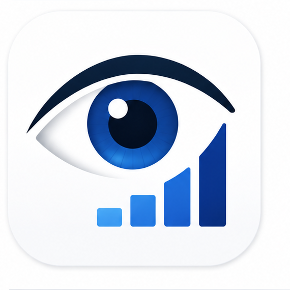

<!DOCTYPE html>
<html lang="en">
<head>
<meta charset="UTF-8">
<meta name="viewport" content="width=device-width, initial-scale=1.0, viewport-fit=cover, user-scalable=no">
<title>EyeCalc</title>

<!-- PWA -->
<meta name="theme-color" content="#FBFAF7">
<link rel="manifest" href="manifest.json">

<!-- iOS PWA -->
<meta name="apple-mobile-web-app-capable" content="yes">
<meta name="apple-mobile-web-app-status-bar-style" content="default">
<meta name="apple-mobile-web-app-title" content="EyeCalc">
<link rel="apple-touch-icon" href="apple-touch-icon.png">
<link rel="icon" type="image/png" sizes="32x32" href="favicon-32.png">

<link rel="preconnect" href="https://fonts.googleapis.com">
<link rel="preconnect" href="https://fonts.gstatic.com" crossorigin>
<link href="https://fonts.googleapis.com/css2?family=Source+Serif+4:ital,wght@0,300;0,400;0,500;0,600;1,400;1,500&family=Geist:wght@400;500;600;700&display=swap" rel="stylesheet">

<style>
* { box-sizing: border-box; margin: 0; padding: 0; -webkit-font-smoothing: antialiased; -webkit-tap-highlight-color: transparent; }

:root {
  /* EyeCalc design tokens — paper / ink / signal */
  --paper:  #FBFAF7;
  --surface: #FFFFFF;
  --mist:   #F1EFEA;
  --silt:   #E4E1DA;
  --slate:  #A8A496;
  --graph:  #5F5D55;
  --ink:    #0A1F44;
  --ink2:   #1B2C50;
  --signal: #0B5FFF;
  --signal-700: #084BCC;
  --signal-100: #E7F0FF;
  --sky:    #4DA3FF;
  --ember:  #B94A3B;
  --ember-100: #FBEDE9;

  --bg: var(--paper);
  --card: var(--surface);
  --text: var(--ink);
  --text2: var(--ink2);
  --text3: var(--graph);
  --separator: rgba(10,31,68,0.08);
  --separator-strong: rgba(10,31,68,0.16);
  --accent: var(--signal);
  --accent2: var(--signal);
  --red: #B94A3B;
  --orange: #B94A3B;
  --yellow: #B94A3B;
  --green: #0B5FFF;
  --teal: #0B5FFF;
  --pink: #B94A3B;
  --indigo: #0B5FFF;

  --serif: 'Source Serif 4', 'Iowan Old Style', Georgia, 'Times New Roman', serif;
  --sans:  'Geist', -apple-system, BlinkMacSystemFont, 'Inter', system-ui, sans-serif;
  --mono:  'Geist', -apple-system, BlinkMacSystemFont, 'Inter', system-ui, sans-serif;
  --shadow-1: 0 1px 2px rgba(10,31,68,0.06), 0 0 0 1px rgba(10,31,68,0.03);
  --ease-ios: cubic-bezier(0.32, 0.72, 0, 1);

  --safe-top: env(safe-area-inset-top);
  --safe-bottom: env(safe-area-inset-bottom);
}

@media (prefers-color-scheme: dark) {
  :root {
    --bg: #0A1F44;
    --card: #1B2C50;
    --text: #FBFAF7;
    --text2: #EAEEF7;
    --text3: rgba(251,250,247,0.6);
    --separator: rgba(255,255,255,0.08);
    --separator-strong: rgba(255,255,255,0.16);
    --accent: #4DA3FF;
    --accent2: #4DA3FF;
    --signal: #4DA3FF;
    --signal-100: rgba(77,163,255,0.12);
    --shadow-1: 0 1px 2px rgba(0,0,0,0.4), 0 0 0 1px rgba(255,255,255,0.04);
  }
}

html, body {
  font-family: var(--sans);
  background: var(--bg);
  color: var(--text);
  height: 100%;
  overflow: hidden;
  font-size: 15px;
  font-feature-settings: "kern" 1, "ss01" 1;
  -webkit-font-smoothing: antialiased;
  text-rendering: optimizeLegibility;
}

#app {
  height: 100%;
  display: flex;
  flex-direction: column;
  max-width: 600px;
  margin: 0 auto;
  position: relative;
}

/* Nav bar */
.navbar {
  padding: calc(8px + var(--safe-top)) 16px 8px;
  display: flex;
  align-items: center;
  justify-content: space-between;
  min-height: 44px;
  background: var(--bg);
  position: sticky;
  top: 0;
  z-index: 10;
}
.nav-back, .nav-action {
  color: var(--accent2);
  font-size: 17px;
  display: flex;
  align-items: center;
  gap: 4px;
  cursor: pointer;
  background: none;
  border: none;
  padding: 8px 0;
  font-family: inherit;
  font-weight: 400;
}
.nav-back svg { width: 12px; height: 20px; }
.nav-home {
  padding: 6px 10px;
  border-radius: 8px;
  display: inline-flex;
  align-items: center;
  justify-content: center;
  color: var(--signal);
  background: transparent;
  transition: background 0.15s var(--ease-ios), transform 0.12s var(--ease-ios);
}
.nav-home:hover { background: var(--mist); }
.nav-home:active { transform: scale(0.92); }
.nav-home svg { display: block; }
.nav-title { font-family: var(--sans); font-size: 15px; font-weight: 500; letter-spacing: 0.02em; color: var(--text); }
.nav-spacer { min-width: 60px; }

/* Header — editorial serif */
.eyebrow {
  font-family: var(--sans);
  font-weight: 500;
  font-size: 11px;
  letter-spacing: 0.18em;
  text-transform: uppercase;
  color: var(--text3);
  padding: 4px 24px 6px;
}
.large-title {
  padding: 0 24px 8px;
  font-family: var(--serif);
  font-weight: 400;
  font-style: italic;
  font-size: 32px;
  line-height: 1.08;
  letter-spacing: -0.015em;
  color: var(--text);
}
.large-title em { font-style: italic; }
.subtitle {
  padding: 4px 24px 14px;
  font-family: var(--sans);
  font-weight: 400;
  color: var(--text3);
  font-size: 13px;
  line-height: 1.5;
}
.app-header { display: flex; align-items: center; gap: 14px; padding: 4px 24px 6px; }
.app-header .app-logo { width: 56px; height: 56px; border-radius: 14px; flex-shrink: 0; box-shadow: var(--shadow-1); }
.app-header .large-title { padding: 0; }

.scroll {
  flex: 1;
  overflow-y: auto;
  padding: 0 16px calc(120px + var(--safe-bottom));
  -webkit-overflow-scrolling: touch;
}
.scroll-no-action {
  flex: 1;
  overflow-y: auto;
  padding: 0 16px calc(40px + var(--safe-bottom));
  -webkit-overflow-scrolling: touch;
}

/* Section toggle — replaces horizontal tab bar */
.section-toggle {
  display: flex;
  align-items: center;
  gap: 12px;
  padding: 4px 4px 0;
  margin-bottom: 4px;
}
.section-toggle-label {
  font-family: var(--sans);
  font-size: 11px;
  font-weight: 600;
  letter-spacing: 0.18em;
  text-transform: uppercase;
  color: var(--text3);
}
.section-toggle-control {
  position: relative;
  flex: 1;
}
.section-toggle-control select {
  appearance: none;
  -webkit-appearance: none;
  width: 100%;
  background: var(--card);
  color: var(--text);
  border: 1px solid var(--separator);
  border-radius: 10px;
  padding: 10px 36px 10px 14px;
  font-family: var(--sans);
  font-size: 14px;
  font-weight: 500;
  letter-spacing: -0.005em;
  cursor: pointer;
  outline: none;
  box-shadow: var(--shadow-1);
  transition: border-color 0.15s var(--ease-ios);
}
.section-toggle-control select:focus { border-color: var(--signal); }
.section-toggle-control select:disabled { opacity: 0.5; cursor: not-allowed; }
.section-toggle-chevron {
  position: absolute;
  right: 14px;
  top: 50%;
  transform: translateY(-50%);
  pointer-events: none;
  color: var(--signal);
  font-size: 14px;
  line-height: 1;
}

/* Tab bar — Home B underlined specialty tabs (kept for reference, not currently used) */
.tab-bar {
  display: flex;
  gap: 4px;
  padding: 4px 16px 0;
  overflow-x: auto;
  scrollbar-width: none;
  -ms-overflow-style: none;
  position: sticky;
  top: 0;
  background: var(--bg);
  z-index: 9;
  border-bottom: 1px solid var(--separator);
}
.tab-bar::-webkit-scrollbar { display: none; }
.tab-pill {
  flex-shrink: 0;
  padding: 10px 12px 12px;
  background: transparent;
  color: var(--text3);
  border: none;
  border-bottom: 2.4px solid transparent;
  font-family: var(--sans);
  font-size: 13px;
  font-weight: 500;
  letter-spacing: -0.005em;
  cursor: pointer;
  white-space: nowrap;
  transition: color 0.15s var(--ease-ios), border-color 0.15s var(--ease-ios);
  margin-bottom: -1px;
}
.tab-pill:hover { color: var(--text2); }
.tab-pill.active {
  color: var(--signal);
  border-bottom-color: var(--signal);
  font-weight: 600;
}

/* Search bar */
.search-bar {
  margin: 4px 0 14px;
  background: var(--card);
  border-radius: 12px;
  padding: 11px 14px;
  display: flex;
  align-items: center;
  gap: 10px;
  box-shadow: var(--shadow-1);
}
.search-bar input {
  flex: 1;
  border: none;
  background: transparent;
  outline: none;
  font-family: var(--sans);
  font-size: 14px;
  font-weight: 400;
  color: var(--text);
}
.search-bar input::placeholder { color: var(--slate); }
.search-icon { color: var(--slate); display: inline-flex; }

/* Cards (legacy list rows, kept for calculator inputs) */
.card {
  background: var(--card);
  border-radius: 14px;
  padding: 16px;
  margin-bottom: 10px;
  cursor: pointer;
  transition: transform 0.12s var(--ease-ios), background 0.15s;
  display: block;
  text-decoration: none;
  color: inherit;
  border: none;
  width: 100%;
  font-family: inherit;
  text-align: left;
  box-shadow: var(--shadow-1);
}
.card:active { transform: scale(0.98); background: var(--mist); }
.card-row { display: flex; align-items: center; gap: 14px; }
.card-icon {
  width: 44px; height: 44px;
  border-radius: 12px;
  display: flex; align-items: center; justify-content: center;
  flex-shrink: 0;
  background: var(--signal-100);
  color: var(--signal);
  font-family: var(--serif); font-style: italic;
  font-weight: 500; font-size: 22px;
  letter-spacing: -0.02em; text-align: center;
  line-height: 1;
}
.card-content { flex: 1; min-width: 0; }
.card-title { font-family: var(--sans); font-size: 15px; font-weight: 600; letter-spacing: -0.01em; margin-bottom: 2px; color: var(--text); }
.card-desc { font-family: var(--sans); font-size: 12px; font-weight: 400; color: var(--text3); line-height: 1.4; }
.chevron { color: var(--slate); font-size: 18px; flex-shrink: 0; }

/* Tile grid — Home B: 2-up short tiles with letter badge at top */
.tile-grid {
  display: grid;
  grid-template-columns: 1fr 1fr;
  gap: 10px;
  margin-bottom: 6px;
}
.tile {
  position: relative;
  min-height: 80px;
  background: var(--card);
  border-radius: 12px;
  padding: 14px;
  border: none;
  cursor: pointer;
  box-shadow: var(--shadow-1);
  text-align: left;
  display: flex;
  flex-direction: column;
  justify-content: center;
  gap: 4px;
  font-family: inherit;
  color: inherit;
  transition: transform 0.12s var(--ease-ios), background 0.15s;
}
.tile:hover { background: var(--mist); }
.tile:active { transform: scale(0.97); background: var(--mist); }
.tile-name {
  font-family: var(--sans);
  font-weight: 600;
  font-size: 14px;
  color: var(--text);
  line-height: 1.25;
  letter-spacing: -0.01em;
  text-wrap: balance;
}
.tile-fam {
  font-family: var(--sans);
  font-size: 11px;
  font-weight: 400;
  color: var(--text3);
  letter-spacing: 0;
  line-height: 1.3;
}
.tile-badge {
  position: absolute;
  top: 10px;
  right: 10px;
  width: 6px;
  height: 6px;
  border-radius: 99px;
  background: var(--signal);
}

/* Hero last-used card (dark ink) */
.hero-last {
  width: 100%;
  display: block;
  padding: 18px 18px 16px;
  background: var(--ink);
  color: var(--paper);
  border-radius: 16px;
  border: none;
  cursor: pointer;
  text-align: left;
  box-shadow: var(--shadow-1);
  margin-bottom: 4px;
  font-family: inherit;
}
.hero-last .hero-eyebrow {
  font-family: var(--sans);
  font-weight: 500;
  font-size: 10px;
  letter-spacing: 0.18em;
  text-transform: uppercase;
  color: var(--sky);
  margin-bottom: 10px;
}
.hero-last .hero-name {
  font-family: var(--serif);
  font-weight: 400;
  font-size: 24px;
  letter-spacing: -0.01em;
  line-height: 1.1;
}
.hero-last .hero-row {
  margin-top: 14px;
  display: flex;
  align-items: baseline;
  gap: 6px;
  font-family: var(--mono);
  font-weight: 500;
}
.hero-last .hero-row .hero-num { font-size: 36px; letter-spacing: -0.02em; font-feature-settings: "tnum" 1; }
.hero-last .hero-row .hero-unit { font-size: 14px; color: rgba(251,250,247,0.7); }
.hero-last .hero-resume {
  margin-left: auto;
  font-family: var(--sans);
  font-size: 11px;
  font-weight: 500;
  color: var(--sky);
  letter-spacing: 0.06em;
  text-transform: uppercase;
}

/* Single-accent: all calc icons share signal-blue letter monogram (see .card-icon) */
[class^="ic-"], [class*=" ic-"] { background: var(--signal-100) !important; color: var(--signal) !important; }

.section-header {
  text-transform: uppercase;
  font-family: var(--sans);
  font-size: 12px;
  font-weight: 600;
  color: var(--text3);
  padding: 22px 24px 10px;
  letter-spacing: 0.18em;
  display: flex;
  align-items: baseline;
  justify-content: space-between;
}
.section-header .count { font-family: var(--mono); font-size: 11px; letter-spacing: 0; font-weight: 400; }

/* Subcategory wrapper — each subgroup gets its own tinted card */
.sub-group {
  border-radius: 16px;
  padding: 4px 14px 14px;
  margin: 12px 0;
  border: 1px solid var(--separator);
}
.sub-group .tile-grid { margin-bottom: 0; }
.sub-group .tile { box-shadow: 0 1px 2px rgba(10,31,68,0.04); }

/* Subcategory header — between groups inside a tab */
.sub-header {
  display: flex;
  align-items: baseline;
  justify-content: space-between;
  padding: 14px 4px 12px;
  font-family: var(--sans);
  font-size: 11px;
  font-weight: 600;
  text-transform: uppercase;
  letter-spacing: 0.14em;
  color: var(--text2);
}
.sub-header .count {
  font-family: var(--mono);
  font-size: 11px;
  font-weight: 400;
  letter-spacing: 0;
  color: var(--text3);
}

/* Cycled tint palette — light mode */
.sub-group-0 { background: #EEF3FF; }   /* soft blue */
.sub-group-1 { background: #FBEEEC; }   /* warm rose */
.sub-group-2 { background: #FBF3DD; }   /* pale amber */
.sub-group-3 { background: #E9F5EE; }   /* pale mint */
.sub-group-4 { background: #F1ECFB; }   /* pale lavender */
.sub-group-5 { background: #E6F4F4; }   /* pale aqua */
.sub-group-6 { background: #FBEDDF; }   /* pale rose-gold */

/* Make the accent letter / tile bg stay legible on tints */
.sub-group .tile { background: var(--surface); }

@media (prefers-color-scheme: dark) {
  .sub-group { border-color: rgba(255,255,255,0.06); }
  .sub-group-0 { background: rgba(77,163,255,0.08); }
  .sub-group-1 { background: rgba(255,138,120,0.08); }
  .sub-group-2 { background: rgba(255,200,100,0.07); }
  .sub-group-3 { background: rgba(120,220,170,0.07); }
  .sub-group-4 { background: rgba(180,160,240,0.08); }
  .sub-group-5 { background: rgba(120,200,200,0.08); }
  .sub-group-6 { background: rgba(255,180,140,0.08); }
  .sub-group .tile { background: var(--card); }
}

/* Item lists (tappable rows) */
.item-list {
  background: var(--card);
  border-radius: 14px;
  overflow: hidden;
  margin-bottom: 10px;
}
.item {
  display: flex;
  align-items: center;
  padding: 14px 16px;
  border-bottom: 1px solid var(--separator);
  cursor: pointer;
  user-select: none;
  transition: background 0.1s;
  background: var(--card);
  border-left: none; border-right: none; border-top: none;
  width: 100%;
  font-family: inherit;
  color: var(--text);
  text-align: left;
}
.item:last-child { border-bottom: none; }
.item:active { background: var(--mist); }
.item-text { flex: 1; font-family: var(--sans); font-size: 14px; font-weight: 500; line-height: 1.4; padding-right: 12px; color: var(--text); }
.item-sub { font-family: var(--sans); font-size: 12px; font-weight: 400; color: var(--text3); margin-top: 3px; }

.item-list { box-shadow: var(--shadow-1); }

.toggle {
  width: 26px; height: 26px;
  border-radius: 50%;
  border: 1.5px solid var(--separator-strong);
  flex-shrink: 0;
  display: flex; align-items: center; justify-content: center;
  transition: all 0.2s var(--ease-ios);
  background: transparent;
}
.toggle.active { background: var(--signal); border-color: var(--signal); }
.toggle.active::after { content: '✓'; color: #fff; font-size: 14px; font-weight: 700; line-height: 1; }
.toggle.purple.active,
.toggle.green.active,
.toggle.blue.active,
.toggle.orange.active { background: var(--signal); border-color: var(--signal); }

/* Score banner */
.score-banner {
  background: var(--card);
  border-radius: 14px;
  padding: 20px;
  margin-bottom: 14px;
  text-align: center;
  position: sticky;
  top: 0;
  z-index: 5;
  box-shadow: var(--shadow-1);
}
.score-big {
  font-family: var(--mono);
  font-size: 56px;
  font-weight: 500;
  letter-spacing: -0.04em;
  line-height: 1;
  color: var(--text);
  font-feature-settings: "tnum" 1;
}
.score-label {
  font-family: var(--sans);
  font-size: 11px;
  color: var(--text3);
  margin-top: 6px;
  text-transform: uppercase;
  letter-spacing: 0.18em;
  font-weight: 600;
}
.score-status {
  margin-top: 14px;
  display: inline-block;
  padding: 4px 12px;
  border-radius: 999px;
  font-family: var(--sans);
  font-size: 11px;
  font-weight: 500;
  letter-spacing: 0.06em;
  text-transform: uppercase;
}
.status-active { background: var(--ember-100); color: var(--ember); }
.status-inactive { background: var(--signal-100); color: var(--signal); }
.status-warning { background: var(--ember-100); color: var(--ember); }
.status-info { background: var(--signal-100); color: var(--signal); }
@media (prefers-color-scheme: dark) {
  .status-active, .status-warning { background: rgba(255,138,120,0.16); color: #FF8A78; }
  .status-inactive, .status-info { background: rgba(77,163,255,0.16); color: var(--sky); }
}

/* Hero result — Result Hi-fi A "hero number" */
.hero-result {
  border-radius: 18px;
  padding: 32px 20px 28px;
  margin: 8px 0 18px;
  text-align: center;
  color: var(--text);
  background: transparent;
  position: relative;
}
.hero-result::before {
  content: '';
  position: absolute;
  left: 24px; right: 24px; top: 0;
  height: 1px;
  background: var(--separator);
}
.hero-result .hero-eyebrow {
  font-family: var(--sans);
  font-weight: 500;
  font-size: 11px;
  letter-spacing: 0.18em;
  text-transform: uppercase;
  color: var(--text3);
  margin-bottom: 16px;
}
.hero-result .num {
  font-family: var(--mono);
  font-weight: 500;
  font-size: clamp(72px, 22vw, 124px);
  letter-spacing: -0.04em;
  line-height: 0.9;
  color: var(--text);
  font-feature-settings: "tnum" 1;
}
.hero-result .denom {
  font-family: var(--mono);
  font-size: 28px;
  color: var(--text3);
  font-weight: 500;
  margin-left: 4px;
  letter-spacing: -0.02em;
}
.hero-result .verdict {
  font-family: var(--sans);
  font-weight: 600;
  font-size: 14px;
  color: var(--text2);
  margin-top: 18px;
  letter-spacing: 0.02em;
  text-transform: uppercase;
}
.hero-result .ref {
  font-family: var(--sans);
  font-size: 12px;
  font-weight: 400;
  color: var(--text3);
  margin-top: 8px;
  line-height: 1.5;
}
.hero-result .small-num {
  font-family: var(--mono);
  font-size: 44px;
  font-weight: 500;
  letter-spacing: -0.02em;
  color: var(--text);
}
/* Caution tone — for severe/active/sight-threatening results */
.hero-result.tone-caution .num,
.hero-result.tone-caution .small-num,
.hero-result.tone-caution .denom { color: var(--ember); }
.hero-result.tone-caution .hero-eyebrow { color: var(--ember); }
@media (prefers-color-scheme: dark) {
  .hero-result.tone-caution .num,
  .hero-result.tone-caution .small-num,
  .hero-result.tone-caution .denom,
  .hero-result.tone-caution .hero-eyebrow { color: #FF8A78; }
}
/* Override legacy gradient utility classes — hero is paper, not colored */
.hero-result.eugogo-result-mild,
.hero-result.eugogo-result-moderate,
.hero-result.eugogo-result-severe,
.hero-result.cas-active, .hero-result.cas-inactive,
.hero-result.nospecs-result, .hero-result.visa-result,
.hero-result.result-purple, .hero-result.result-blue,
.hero-result.result-orange, .hero-result.result-red,
.hero-result.result-green, .hero-result.result-teal,
.hero-result.result-pink {
  background: transparent;
  color: var(--text);
}
.hero-result.eugogo-result-severe .num,
.hero-result.eugogo-result-severe .small-num,
.hero-result.eugogo-result-severe .denom,
.hero-result.eugogo-result-severe .hero-eyebrow,
.hero-result.cas-active .num,
.hero-result.cas-active .small-num,
.hero-result.cas-active .denom,
.hero-result.cas-active .hero-eyebrow,
.hero-result.result-red .num,
.hero-result.result-red .small-num,
.hero-result.result-red .denom,
.hero-result.result-red .hero-eyebrow {
  color: var(--ember);
}
@media (prefers-color-scheme: dark) {
  .hero-result.eugogo-result-severe .num,
  .hero-result.eugogo-result-severe .small-num,
  .hero-result.eugogo-result-severe .denom,
  .hero-result.eugogo-result-severe .hero-eyebrow,
  .hero-result.cas-active .num,
  .hero-result.cas-active .small-num,
  .hero-result.cas-active .denom,
  .hero-result.cas-active .hero-eyebrow,
  .hero-result.result-red .num,
  .hero-result.result-red .small-num,
  .hero-result.result-red .denom,
  .hero-result.result-red .hero-eyebrow { color: #FF8A78; }
}

.info-card {
  background: var(--card);
  border-radius: 12px;
  padding: 16px 18px;
  margin-bottom: 10px;
  box-shadow: var(--shadow-1);
}
.info-card h3 {
  font-family: var(--sans);
  font-size: 12px;
  text-transform: uppercase;
  color: var(--text3);
  letter-spacing: 0.18em;
  margin-bottom: 12px;
  font-weight: 600;
}
.info-card p { font-family: var(--sans); font-size: 14px; font-weight: 400; line-height: 1.5; color: var(--text2); }
.recommendation {
  display: flex;
  gap: 12px;
  align-items: flex-start;
  padding: 10px 0;
  border-bottom: 1px solid var(--separator);
}
.recommendation:last-child { border-bottom: none; }
.rec-bullet {
  width: 6px; height: 6px;
  border-radius: 50%;
  background: var(--signal);
  margin-top: 9px;
  flex-shrink: 0;
}
.rec-text { font-family: var(--sans); font-size: 14px; font-weight: 400; line-height: 1.5; color: var(--text2); }

/* Action bar */
.action-bar {
  position: fixed;
  bottom: 0;
  left: 0;
  right: 0;
  padding: 14px 20px calc(28px + var(--safe-bottom));
  background: linear-gradient(to top, var(--paper) 60%, rgba(251,250,247,0));
  display: flex;
  gap: 10px;
  z-index: 20;
  max-width: 600px;
  margin: 0 auto;
}
@media (prefers-color-scheme: dark) {
  .action-bar { background: linear-gradient(to top, #0A1F44 60%, rgba(10,31,68,0)); }
}
.btn {
  flex: 1;
  padding: 15px;
  border-radius: 12px;
  border: none;
  font-family: var(--sans);
  font-size: 16px;
  font-weight: 600;
  cursor: pointer;
  transition: transform 0.12s var(--ease-ios), background 0.15s;
  letter-spacing: -0.005em;
}
.btn:active { transform: scale(0.97); }
.btn-primary { background: var(--ink); color: var(--paper); }
.btn-primary:hover { background: var(--ink2); }
.btn-secondary { background: var(--card); color: var(--text); box-shadow: var(--shadow-1); }
.btn-secondary:hover { background: var(--mist); }
.btn-red, .btn-blue, .btn-green, .btn-orange { background: var(--signal); color: #fff; }
.btn-red:hover, .btn-blue:hover, .btn-green:hover, .btn-orange:hover { background: var(--signal-700); }
@media (prefers-color-scheme: dark) {
  .btn-primary { background: var(--signal); color: #fff; }
  .btn-primary:hover { background: var(--signal-700); }
}

/* Segmented control */
.segmented {
  display: flex;
  background: var(--mist);
  border-radius: 10px;
  padding: 3px;
  margin: 4px 0 10px;
  border: 1px solid var(--separator);
}
.seg {
  flex: 1; padding: 8px;
  text-align: center; border-radius: 8px;
  font-family: var(--sans);
  font-size: 13px; font-weight: 500;
  cursor: pointer; color: var(--text2);
  background: none; border: none;
}
.seg.active {
  background: var(--card);
  box-shadow: var(--shadow-1);
  font-weight: 600;
  color: var(--text);
}

/* Stepper for grades */
.stepper {
  display: flex;
  align-items: center;
  gap: 4px;
  background: var(--mist);
  border-radius: 10px;
  padding: 3px;
  flex-wrap: wrap;
  border: 1px solid var(--separator);
}
.step-btn {
  min-width: 36px; height: 32px;
  padding: 0 10px;
  border-radius: 7px;
  border: none;
  font-family: var(--sans);
  font-size: 13px;
  font-weight: 500;
  background: transparent;
  color: var(--text2);
  cursor: pointer;
  flex: 1;
  transition: background 0.15s;
}
.step-btn.active { background: var(--card); color: var(--text); box-shadow: var(--shadow-1); font-weight: 600; }

/* Numeric input */
.num-input {
  background: var(--card);
  border-radius: 12px;
  padding: 14px 16px;
  margin-bottom: 10px;
  box-shadow: var(--shadow-1);
}
.num-input label {
  display: block;
  font-family: var(--sans);
  font-size: 12px;
  font-weight: 500;
  letter-spacing: 0.02em;
  color: var(--text3);
  margin-bottom: 6px;
}
.num-input input, .num-input select {
  width: 100%;
  font-family: var(--mono);
  font-size: 17px;
  font-feature-settings: "tnum" 1;
  border: none;
  background: transparent;
  color: var(--text);
  outline: none;
  padding: 4px 0;
  border-bottom: 1px solid var(--separator);
}
.num-input .unit { font-family: var(--sans); font-size: 12px; font-weight: 400; color: var(--text3); margin-left: 6px; }
.row-2 { display: grid; grid-template-columns: 1fr 1fr; gap: 10px; }

.divider { height: 16px; }

/* TED specific result colors */
.eugogo-result-mild { background: linear-gradient(135deg, #34C759, #30D158); }
.eugogo-result-moderate { background: linear-gradient(135deg, #FF9500, #FFCC00); }
.eugogo-result-severe { background: linear-gradient(135deg, #FF3B30, #FF2D55); }
.cas-active { background: linear-gradient(135deg, #FF3B30, #FF9500); }
.cas-inactive { background: linear-gradient(135deg, #34C759, #30D158); }
.nospecs-result { background: linear-gradient(135deg, #5856D6, #AF52DE); }
.visa-result { background: linear-gradient(135deg, #007AFF, #5AC8FA); }
.result-purple { background: linear-gradient(135deg, #5856D6, #AF52DE); }
.result-blue { background: linear-gradient(135deg, #007AFF, #5AC8FA); }
.result-orange { background: linear-gradient(135deg, #FF9500, #FFCC00); }
.result-red { background: linear-gradient(135deg, #FF3B30, #FF2D55); }
.result-green { background: linear-gradient(135deg, #34C759, #30D158); }
.result-teal { background: linear-gradient(135deg, #5AC8FA, #007AFF); }
.result-pink { background: linear-gradient(135deg, #FF2D55, #AF52DE); }

.hint {
  font-family: var(--sans);
  font-size: 12px;
  font-weight: 400;
  color: var(--text3);
  padding: 8px 16px;
  line-height: 1.5;
}

.source-line {
  font-family: var(--mono);
  font-size: 11px;
  color: var(--slate);
  text-align: center;
  padding: 8px 16px 0;
  line-height: 1.5;
  letter-spacing: 0.04em;
}

/* Footer note */
.footer-note {
  text-align: center;
  font-family: var(--sans);
  font-size: 12px;
  font-weight: 400;
  color: var(--text3);
  padding: 24px 24px 12px;
  line-height: 1.6;
  text-wrap: pretty;
}
.footer-note .footer-meta {
  display: inline-block;
  margin-top: 6px;
  font-family: var(--mono);
  font-size: 11px;
  letter-spacing: 0.04em;
  color: var(--slate);
}

/* Generic photo card — reused across Frisén + all oculoplastics */
.photo-card {
  background: var(--card);
  border-radius: 12px;
  overflow: hidden;
  margin: 8px 0 12px;
  box-shadow: var(--shadow-1);
}
.photo-card img {
  width: 100%;
  height: auto;
  display: block;
  background: #000;
}
.photo-caption {
  font-family: var(--sans);
  font-size: 12px;
  color: var(--text3);
  padding: 10px 14px;
  border-top: 1px solid var(--separator);
}
.photo-grid {
  display: grid;
  grid-template-columns: repeat(3, 1fr);
  gap: 6px;
  margin: 4px 0 10px;
}
.photo-grid.cols-2 { grid-template-columns: repeat(2, 1fr); }
.photo-thumb {
  background: transparent;
  border: 1.5px solid var(--separator);
  border-radius: 8px;
  padding: 0;
  cursor: pointer;
  overflow: hidden;
  position: relative;
  font-family: inherit;
  transition: border-color 0.15s var(--ease-ios), transform 0.12s var(--ease-ios);
}
.photo-thumb:hover { border-color: var(--separator-strong); }
.photo-thumb:active { transform: scale(0.97); }
.photo-thumb.active { border-color: var(--signal); border-width: 2px; }
.photo-thumb img {
  width: 100%;
  aspect-ratio: 1 / 1;
  object-fit: cover;
  display: block;
  background: #000;
}
.photo-thumb span {
  position: absolute;
  bottom: 0;
  left: 0;
  right: 0;
  padding: 3px 6px;
  font-family: var(--sans);
  font-size: 10px;
  font-weight: 600;
  letter-spacing: 0.04em;
  color: #fff;
  background: linear-gradient(to top, rgba(0,0,0,0.7), rgba(0,0,0,0));
  text-align: left;
}
.photo-credit {
  font-family: var(--sans);
  font-size: 11px;
  color: var(--text3);
  line-height: 1.5;
  margin-top: 8px;
}
.photo-credit a { color: var(--signal); text-decoration: none; }
.photo-credit a:hover { text-decoration: underline; }

/* Signature — appended to every screen */
.signature {
  text-align: center;
  font-family: var(--mono);
  font-size: 10px;
  letter-spacing: 0.18em;
  text-transform: uppercase;
  color: var(--slate);
  padding: 6px 24px calc(20px + var(--safe-bottom));
  opacity: 0.85;
}

/* Tables for staging */
.stage-table {
  width: 100%;
  font-size: 13px;
  border-collapse: collapse;
  margin: 6px 0;
}
.stage-table th, .stage-table td {
  text-align: left;
  padding: 6px 8px;
  border-bottom: 1px solid var(--separator);
  vertical-align: top;
}
.stage-table th { font-weight: 600; color: var(--text3); font-size: 11px; text-transform: uppercase; }
</style>
</head>
<body>

<div id="app"></div>

<script>
// ============================================================================
// Educational tool — not a substitute for clinical judgment.
// ============================================================================

const state = {
  screen: 'home',
  tab: 'Oculoplastics',
  search: '',

  // Existing TED state
  cas: { initial: [false,false,false,false,false,false,false], followup: [false,false,false], showFollowup: false },
  noSpecs: { class1: false, class2: 0, class3: 0, class4: 0, class5: 0, class6: 0 },
  eugogo: { lidRetraction: 0, softTissue: 0, proptosis: 0, diplopia: 0, cornea: 0, optic: false },
  visa: { optic: false, inflam: { restPain: 0, gazePain: 0, chemosis: 0, eyelidEdema: 0, conjInjection: 0, eyelidInjection: 0 }, diplopia: 0, restriction: 0, appearance: 0 },

  // Generic calculator inputs (one shared object — keys vary per calculator)
  inp: {},
};

const ICONS = {
  back: '<svg viewBox="0 0 12 20" fill="none"><path d="M10 2L2 10L10 18" stroke="currentColor" stroke-width="2.5" stroke-linecap="round" stroke-linejoin="round"/></svg>',
  search: '<svg viewBox="0 0 16 16" width="14" height="14" fill="currentColor"><path d="M11 6.5a4.5 4.5 0 1 1-9 0 4.5 4.5 0 0 1 9 0zm-.82 4.74a6 6 0 1 1 1.06-1.06l3.04 3.04a.75.75 0 1 1-1.06 1.06l-3.04-3.04z"/></svg>',
  home: '<svg viewBox="0 0 22 22" width="20" height="20" fill="none" stroke="currentColor" stroke-width="1.8" stroke-linecap="round" stroke-linejoin="round"><path d="M3 11L11 3L19 11"/><path d="M5 10v8a1 1 0 0 0 1 1h3v-5h4v5h3a1 1 0 0 0 1-1v-8"/></svg>',
};

// ============================================================================
// ROUTER
// ============================================================================

function navigate(screen, opts) {
  state.screen = screen;
  if (opts && opts.resetInputs) { state.inp = {}; state.inpRaw = {}; }
  window.scrollTo(0, 0);
  render();
}
function setTab(tab) { state.tab = tab; state.screen = 'home'; state.search = ''; render(); }
function setInp(k, v) { state.inp[k] = v; render(); }
function setInpNoRender(k, v) { state.inp[k] = v; }

// Silently update an input — no re-render. Caret stays put because the input element
// is never destroyed mid-keystroke. The result block refreshes on blur / Enter.
function setInpSilent(k, v, raw) {
  state.inp[k] = v;
  state.inpRaw = state.inpRaw || {};
  state.inpRaw[k] = raw;
}

// Called on input blur or Enter key — re-renders to update the result block.
function commitInput() { render(); }

// Search bar — re-renders on every keystroke (needed for live filtering),
// but properly captures and restores caret position so typing flows L→R.
function setSearch(v, inputEl) {
  state.search = v;
  const caret = inputEl ? inputEl.selectionStart : null;
  render();
  const el = document.querySelector('.search-bar input');
  if (el) {
    el.focus();
    if (caret != null && typeof el.setSelectionRange === 'function') {
      try { el.setSelectionRange(caret, caret); } catch (_) {}
    }
  }
}

window.addEventListener('popstate', () => render());

// ============================================================================
// HELPERS
// ============================================================================

function navbar({ back, title, action }) {
  // Home icon in the right slot whenever there's no custom action AND we're not already on home.
  const showHome = !action && state.screen !== 'home';
  const right = action
    ? `<button class="nav-action" onclick="${action.onclick}">${action.label}</button>`
    : showHome
      ? `<button class="nav-action nav-home" onclick="navigate('home')" aria-label="Home">${ICONS.home}</button>`
      : '<div class="nav-spacer"></div>';
  return `
    <div class="navbar">
      ${back ? `<button class="nav-back" onclick="navigate('${back.to}')">${ICONS.back}${back.label}</button>` : '<div class="nav-spacer"></div>'}
      <div class="nav-title">${title || ''}</div>
      ${right}
    </div>
  `;
}

function actionBar(buttons) {
  return `<div class="action-bar">${buttons.map(b => `<button class="btn ${b.class}" onclick="${b.onclick}">${b.label}</button>`).join('')}</div>`;
}

function numInput(label, key, opts = {}) {
  const raw = state.inpRaw && state.inpRaw[key];
  const v = raw !== undefined
    ? raw
    : (state.inp[key] !== undefined ? state.inp[key] : (opts.default !== undefined ? opts.default : ''));
  return `
    <div class="num-input">
      <label>${label}${opts.unit ? ` <span class="unit">${opts.unit}</span>` : ''}</label>
      <input type="text" inputmode="decimal" autocomplete="off" autocorrect="off" autocapitalize="off" spellcheck="false" value="${v}" placeholder="${opts.placeholder || ''}" data-key="${key}"
        oninput="setInpSilent('${key}', this.value === '' ? '' : parseFloat(this.value), this.value)"
        onblur="commitInput()"
        onkeydown="if (event.key === 'Enter') { this.blur(); }">
    </div>
  `;
}

function selectInput(label, key, options, opts = {}) {
  const v = state.inp[key] !== undefined ? state.inp[key] : (opts.default !== undefined ? opts.default : options[0].v);
  return `
    <div class="num-input">
      <label>${label}</label>
      <select onchange="setInp('${key}', this.value === 'true' ? true : this.value === 'false' ? false : isNaN(parseFloat(this.value)) ? this.value : parseFloat(this.value))">
        ${options.map(o => `<option value="${o.v}" ${String(v) === String(o.v) ? 'selected' : ''}>${o.l}</option>`).join('')}
      </select>
    </div>
  `;
}

function stepperInput(label, key, options, opts = {}) {
  const v = state.inp[key] !== undefined ? state.inp[key] : (opts.default !== undefined ? opts.default : options[0].v);
  return `
    <div class="card" style="cursor: default;">
      <div style="font-size: 14px; font-weight: 500; margin-bottom: 8px;">${label}</div>
      ${opts.sub ? `<div style="font-size: 12px; color: var(--text3); margin-top: -4px; margin-bottom: 8px;">${opts.sub}</div>` : ''}
      <div class="stepper">
        ${options.map(o => `
          <button class="step-btn ${String(v) === String(o.v) ? 'active' : ''}" onclick="setInp('${key}', ${typeof o.v === 'string' ? `'${o.v}'` : o.v})">${o.l}</button>
        `).join('')}
      </div>
    </div>
  `;
}

function toggleInput(label, key, sub) {
  const v = !!state.inp[key];
  return `
    <button class="item" style="border-radius: 14px; margin-bottom: 10px;" onclick="setInp('${key}', ${!v})">
      <div class="item-text">
        <div>${label}</div>
        ${sub ? `<div class="item-sub">${sub}</div>` : ''}
      </div>
      <div class="toggle blue ${v ? 'active' : ''}"></div>
    </button>
  `;
}

function num(key) {
  const v = state.inp[key];
  if (v === '' || v === undefined || v === null || isNaN(parseFloat(v))) return null;
  return parseFloat(v);
}

function val(key, defaultVal) {
  return state.inp[key] !== undefined ? state.inp[key] : defaultVal;
}

function disclaimer() {
  return `<div class="footer-note">Educational tool — verify thresholds against primary sources before clinical use.</div>`;
}

function sourceLine(text) {
  return `<div class="source-line">${text}</div>`;
}

function calcShell(title, subtitle, body, backTab) {
  return `
    ${navbar({ back: { to: 'home', label: backTab || 'Home' }, title: '' })}
    <div class="eyebrow">${backTab || 'Calculator'}</div>
    <div class="large-title" style="font-size: 30px;">${title}</div>
    ${subtitle ? `<div class="subtitle">${subtitle}</div>` : ''}
    <div class="scroll-no-action">
      ${body}
      ${disclaimer()}
    </div>
  `;
}

function resultBlock(opts) {
  // opts: { tone, big?, denom?, verdict?, ref?, small?, eyebrow? }
  // Hero number style — Result Hi-fi A. Tone maps to either neutral (default) or caution.
  const cautionTones = ['red','orange','pink'];
  const toneClass = cautionTones.includes(opts.tone) ? `result-${opts.tone} tone-caution` : `result-${opts.tone}`;
  return `
    <div class="hero-result ${toneClass}">
      ${opts.eyebrow ? `<div class="hero-eyebrow">${opts.eyebrow}</div>` : ''}
      ${opts.big !== undefined ? `<div><span class="num">${opts.big}</span>${opts.denom ? `<span class="denom">/${opts.denom}</span>` : ''}</div>` : ''}
      ${opts.small ? `<div class="small-num">${opts.small}</div>` : ''}
      ${opts.verdict ? `<div class="verdict">${opts.verdict}</div>` : ''}
      ${opts.ref ? `<div class="ref">${opts.ref}</div>` : ''}
    </div>
  `;
}

function infoCard(heading, html) {
  return `<div class="info-card"><h3>${heading}</h3>${html}</div>`;
}

function recList(items) {
  return items.map(r => `<div class="recommendation"><div class="rec-bullet"></div><div class="rec-text">${r}</div></div>`).join('');
}

// Photo card: single image with caption.
function photoCard(src, caption) {
  return `
    <div class="photo-card">
      
      <div class="photo-caption">${caption}</div>
    </div>`;
}

// Photo strip: 2- or 3-column gallery of clinical photos with captions.
function photoStrip(items, cols = 2) {
  return `
    <div class="photo-grid${cols === 2 ? ' cols-2' : ''}">
      ${items.map(it => `
        <div class="photo-thumb" style="cursor:default;">
          
          ${it.label ? `<span>${it.label}</span>` : ''}
        </div>`).join('')}
    </div>`;
}

// Standard EyeRounds CC BY-NC-ND 3.0 attribution.
function eyeroundsCredit(slug) {
  const url = slug ? `https://eyerounds.org/${slug}` : 'https://eyerounds.org';
  return `
    <p class="photo-credit">
      Clinical photographs © <a href="${url}" target="_blank" rel="noopener">EyeRounds.org</a>,
      The University of Iowa — used under
      <a href="https://creativecommons.org/licenses/by-nc-nd/3.0/" target="_blank" rel="noopener">CC BY-NC-ND 3.0</a>.
    </p>`;
}

// ============================================================================
// CALCULATOR REGISTRY (for tabs + search)
// ============================================================================

const CALCULATORS = [
  // TED
  { id: 'cas',         tab: 'Oculoplastics', title: 'Clinical Activity Score (CAS)', desc: 'Mourits 1989 / EUGOGO · active vs inactive', icon: 'CAS', iconClass: 'ic-cas' },
  { id: 'eugogo',      tab: 'Oculoplastics', title: 'EUGOGO Severity', desc: 'Mild / mod-severe / sight-threatening', icon: 'EU<br>GOGO', iconClass: 'ic-eugogo' },
  { id: 'visa',        tab: 'Oculoplastics', title: 'VISA Classification', desc: 'Vision · Inflammation · Strabismus · Appearance', icon: 'VISA', iconClass: 'ic-visa' },
  { id: 'nospecs',     tab: 'Oculoplastics', title: 'Modified NO SPECS', desc: 'Werner 1977 · class-by-class severity', icon: 'NO<br>SPECS', iconClass: 'ic-nospecs' },
  { id: 'hertel',      tab: 'Oculoplastics', title: 'Hertel Exophthalmometry', desc: 'Race/sex normals · asymmetry · proptosis flag', icon: 'HRT', iconClass: 'ic-orbit' },
  { id: 'barrett',     tab: 'Oculoplastics', title: "Barrett's Muscle Index", desc: 'CT-based DON risk · threshold ~67%', icon: 'BMI', iconClass: 'ic-orbit' },
  { id: 'nugent',      tab: 'Oculoplastics', title: 'Nugent Apical Crowding', desc: 'Coronal CT 0–3 · perineural fat effacement', icon: 'NGT', iconClass: 'ic-orbit' },
  { id: 'muscleidx',   tab: 'Oculoplastics', title: 'Muscle Index (V/H)', desc: 'Vertical & horizontal muscle/orbit ratio', icon: 'MI', iconClass: 'ic-orbit' },

  // Oculoplastics — Eyelid (B)
  { id: 'mrd',         tab: 'Oculoplastics', title: 'MRD1 / MRD2 / MRD3 + PFH', desc: 'Ptosis grade · palpebral fissure', icon: 'MRD', iconClass: 'ic-eyelid' },
  { id: 'levator',     tab: 'Oculoplastics', title: 'Levator function classifier', desc: 'Poor/fair/good/excellent → surgical approach', icon: 'LEV', iconClass: 'ic-eyelid' },
  { id: 'brow',        tab: 'Oculoplastics', title: 'Brow position assessment', desc: 'Brow-to-rim · Hering\'s law', icon: 'BRW', iconClass: 'ic-eyelid' },
  { id: 'lagoph',      tab: 'Oculoplastics', title: 'Lagophthalmos / scleral show', desc: 'Exposure-keratopathy risk', icon: 'LAG', iconClass: 'ic-eyelid' },
  { id: 'goldweight',  tab: 'Oculoplastics', title: 'Gold/platinum weight selector', desc: 'Lagophthalmos load test logic', icon: 'AU', iconClass: 'ic-eyelid' },
  { id: 'lowerlid',    tab: 'Oculoplastics', title: 'Lower-lid retraction grading', desc: 'MRD2-based · scleral show grade', icon: 'LL', iconClass: 'ic-eyelid' },

  // Oculoplastics — Lacrimal & OSD (C)
  { id: 'munk',        tab: 'Oculoplastics', title: 'Munk epiphora score', desc: 'Tearing frequency 0–4', icon: 'MNK', iconClass: 'ic-lacrimal' },
  { id: 'ddt',         tab: 'Oculoplastics', title: 'Dye disappearance test', desc: 'Fluorescein 0–4 grading', icon: 'DDT', iconClass: 'ic-lacrimal' },
  { id: 'jones',       tab: 'Oculoplastics', title: 'Jones I / II interpreter', desc: 'Lacrimal drainage diagnostic algorithm', icon: 'JNS', iconClass: 'ic-lacrimal' },
  { id: 'osdi',        tab: 'Cornea', title: 'OSDI', desc: 'Ocular Surface Disease Index 0–100', icon: 'OSDI', iconClass: 'ic-lacrimal' },
  { id: 'speed',       tab: 'Cornea', title: 'SPEED', desc: 'Standardized eye dryness 0–28', icon: 'SPD', iconClass: 'ic-lacrimal' },
  { id: 'schirmer',    tab: 'Cornea', title: 'Schirmer / TBUT', desc: 'TFOS DEWS II cutoffs', icon: 'SCH', iconClass: 'ic-lacrimal' },
  { id: 'dewsii',      tab: 'Cornea', title: 'DEWS II severity stage', desc: 'Dry eye severity 1–4', icon: 'DWS', iconClass: 'ic-lacrimal' },

  // Oculoplastics — Trauma/Infection/Onco/Facial (D)
  { id: 'chandler',    tab: 'Oculoplastics', title: 'Chandler classification', desc: 'Orbital cellulitis I–V', icon: 'CHD', iconClass: 'ic-trauma' },
  { id: 'floor',       tab: 'Oculoplastics', title: 'Orbital floor surgical indications', desc: '>50% floor · enophthalmos · diplopia', icon: 'FLR', iconClass: 'ic-trauma' },
  { id: 'tnm-eyelid',  tab: 'Oculoplastics', title: 'AJCC 8 — Eyelid carcinoma', desc: 'BCC/SCC/sebaceous/Merkel TNM', icon: 'T-E', iconClass: 'ic-onco' },
  { id: 'tnm-conj-scc',tab: 'Oculoplastics', title: 'AJCC 8 — Conjunctival SCC', desc: 'Conjunctival carcinoma TNM', icon: 'T-C', iconClass: 'ic-onco' },
  { id: 'tnm-conj-mel',tab: 'Oculoplastics', title: 'AJCC 8 — Conjunctival melanoma', desc: 'Conjunctival melanoma TNM', icon: 'T-M', iconClass: 'ic-onco' },
  { id: 'tnm-skin-mel',tab: 'Oculoplastics', title: 'AJCC 8 — Periocular cutaneous melanoma', desc: 'Eyelid skin melanoma TNM', icon: 'T-S', iconClass: 'ic-onco' },
  { id: 'tnm-lacgland',tab: 'Oculoplastics', title: 'AJCC 8 — Lacrimal gland carcinoma', desc: 'Salivary-aligned TNM', icon: 'T-L', iconClass: 'ic-onco' },
  { id: 'tnm-lacsac',  tab: 'Oculoplastics', title: 'AJCC — Lacrimal sac/duct carcinoma', desc: 'Drainage-system TNM', icon: 'T-D', iconClass: 'ic-onco' },
  { id: 'tnm-orbsarc', tab: 'Oculoplastics', title: 'AJCC — Orbital sarcoma', desc: 'Orbital soft-tissue sarcoma TNM', icon: 'T-O', iconClass: 'ic-onco' },
  { id: 'house',       tab: 'Oculoplastics', title: 'House-Brackmann + corneal risk', desc: 'Facial nerve grade I–VI', icon: 'HB', iconClass: 'ic-eyelid' },
  { id: 'sunny',       tab: 'Oculoplastics', title: 'Sunnybrook facial grading', desc: 'Composite 0–100', icon: 'SBK', iconClass: 'ic-eyelid' },

  // General (E)
  { id: 'va',          tab: 'General', title: 'Visual acuity converter', desc: 'Snellen ↔ decimal ↔ logMAR ↔ ETDRS', icon: 'VA', iconClass: 'ic-vision' },
  { id: 'driving',     tab: 'General', title: 'Legal blindness / driving', desc: 'US · EU · Quebec/SAAQ', icon: 'DRV', iconClass: 'ic-vision' },
  { id: 'spheq',       tab: 'General', title: 'Spherical equivalent', desc: 'Sphere + cyl/2', icon: 'SE', iconClass: 'ic-vision' },
  { id: 'vertex',      tab: 'General', title: 'Vertex distance correction', desc: 'Spectacles ↔ contacts', icon: 'VTX', iconClass: 'ic-vision' },
  { id: 'prismdeg',    tab: 'General', title: 'Prism diopters ↔ degrees', desc: 'PD ↔ ° converter (Hirschberg/Krimsky)', icon: 'Δ°', iconClass: 'ic-vision' },

  // Refractive (F)
  { id: 'iolpicker',   tab: 'Refractive', title: 'IOL formula picker', desc: 'AL → Hoffer Q / Holladay 1 / SRK-T / Barrett', icon: 'IOL', iconClass: 'ic-cataract' },
  { id: 'srk2',        tab: 'Refractive', title: 'SRK II quick estimate', desc: 'P = A − 2.5·AL − 0.9·K (modified)', icon: 'SRK', iconClass: 'ic-cataract' },
  { id: 'postref',     tab: 'Refractive', title: 'Post-refractive IOL hint', desc: 'Clinical-history & contact-lens method note', icon: 'PRF', iconClass: 'ic-cataract' },
  { id: 'toric',       tab: 'Refractive', title: 'Toric IOL axis converter', desc: 'Surgically induced astigmatism note', icon: 'TOR', iconClass: 'ic-cataract' },
  { id: 'lasik',       tab: 'Refractive', title: 'LASIK PTA + RSB', desc: 'Ectasia risk: PTA >40% · RSB <300 µm', icon: 'LSK', iconClass: 'ic-cataract' },
  { id: 'ecd',         tab: 'Refractive', title: 'Endothelial cell density', desc: 'Average ECD across counts', icon: 'ECD', iconClass: 'ic-cataract' },

  // Glaucoma (G)
  { id: 'ohts',        tab: 'Glaucoma', title: 'OHTS 5-year POAG risk', desc: 'Age · IOP · CCT · PSD · vCDR', icon: 'OHT', iconClass: 'ic-glaucoma' },
  { id: 'ccticp',      tab: 'Glaucoma', title: 'IOP correction for CCT', desc: 'Goldmann adjustment', icon: 'CCT', iconClass: 'ic-glaucoma' },
  { id: 'targetiop',   tab: 'Glaucoma', title: 'Target IOP estimator', desc: 'Severity × baseline', icon: 'TGT', iconClass: 'ic-glaucoma' },
  { id: 'mdrate',      tab: 'Glaucoma', title: 'VF MD progression rate', desc: 'dB / year linear regression', icon: 'MD', iconClass: 'ic-glaucoma' },
  { id: 'agis',        tab: 'Glaucoma', title: 'AGIS visual field score', desc: '0–20 score from 24-2', icon: 'AGS', iconClass: 'ic-glaucoma' },
  { id: 'hpa',         tab: 'Glaucoma', title: 'Hodapp-Parrish-Anderson', desc: 'VF severity early/mod/advanced', icon: 'HPA', iconClass: 'ic-glaucoma' },
  { id: 'icd11',       tab: 'Glaucoma', title: 'ICD-11 / WGA stage', desc: 'Glaucoma severity stage', icon: 'STG', iconClass: 'ic-glaucoma' },
  { id: 'ddls',        tab: 'Glaucoma', title: 'Disc damage likelihood (DDLS)', desc: '0a–10c · disc-size adjusted', icon: 'DDL', iconClass: 'ic-glaucoma' },
  { id: 'spaeth',      tab: 'Glaucoma', title: 'Spaeth gonioscopy grading', desc: 'Insertion / approach / pigment', icon: 'SPT', iconClass: 'ic-glaucoma' },
  { id: 'shaffer',     tab: 'Glaucoma', title: 'Shaffer angle grade', desc: 'Grade 0–4', icon: 'SHF', iconClass: 'ic-glaucoma' },
  { id: 'vanherick',   tab: 'Glaucoma', title: 'Van Herick AC depth', desc: 'Peripheral AC depth grade', icon: 'VH', iconClass: 'ic-glaucoma' },
  { id: 'pxfpds',      tab: 'Glaucoma', title: 'PXF / PDS risk note', desc: 'Pseudoexfoliation · pigment dispersion', icon: 'PXF', iconClass: 'ic-glaucoma' },

  // Retina (H)
  { id: 'drss',        tab: 'Retina', title: 'DRSS / ETDRS DR severity', desc: '13-step scale 10–85', icon: 'DRS', iconClass: 'ic-retina' },
  { id: 'intldr',      tab: 'Retina', title: 'International DR + DME', desc: 'NPDR (mild/mod/severe) · PDR · DME', icon: 'IDR', iconClass: 'ic-retina' },
  { id: 'areds',       tab: 'Retina', title: 'AMD AREDS simplified', desc: '0–4 risk score', icon: 'AMD', iconClass: 'ic-retina' },
  { id: 'gass',        tab: 'Retina', title: 'Gass macular hole staging', desc: '1A → 4', icon: 'MH', iconClass: 'ic-retina' },
  { id: 'sun-cells',   tab: 'Retina', title: 'SUN AC cells', desc: '0 → 4+ (cell-count cutoffs)', icon: 'SUN', iconClass: 'ic-retina' },
  { id: 'sun-flare',   tab: 'Retina', title: 'SUN AC flare', desc: '0 → 4+', icon: 'FLR', iconClass: 'ic-retina' },
  { id: 'vit-haze',    tab: 'Retina', title: 'Vitreous haze (NEI/SUN)', desc: '0 → 4+', icon: 'VIT', iconClass: 'ic-retina' },

  // Pediatric (I)
  { id: 'hirschberg',  tab: 'Pediatric', title: 'Hirschberg / Krimsky converter', desc: 'mm light reflex → PD', icon: 'HSB', iconClass: 'ic-pediatric' },
  { id: 'worth4',      tab: 'Pediatric', title: 'Worth 4-dot interpreter', desc: 'Fusion · suppression · diplopia', icon: 'W4', iconClass: 'ic-pediatric' },
  { id: 'amblyopia',   tab: 'Pediatric', title: 'Amblyopia patching dose', desc: 'Hours/day → expected logMAR gain', icon: 'AMB', iconClass: 'ic-pediatric' },
  { id: 'acaratio',    tab: 'Pediatric', title: 'AC/A ratio', desc: 'Gradient & heterophoria methods', icon: 'AC/A', iconClass: 'ic-pediatric' },
  { id: 'rop',         tab: 'Pediatric', title: 'ROP zone/stage/plus (ICROP-3)', desc: 'Including A-ROP', icon: 'ROP', iconClass: 'ic-pediatric' },
  { id: 'etrop',       tab: 'Pediatric', title: 'ROP treatment-warranted (ETROP)', desc: 'Type 1 / Type 2 logic', icon: 'ETR', iconClass: 'ic-pediatric' },
  { id: 'congcat',     tab: 'Pediatric', title: 'Congenital cataract significance', desc: 'Visual axis / size / morphology', icon: 'CGC', iconClass: 'ic-pediatric' },
  { id: 'bruckner',    tab: 'Pediatric', title: 'Brückner test', desc: 'Red reflex interpretation', icon: 'BRK', iconClass: 'ic-pediatric' },
  { id: 'pedva',       tab: 'Pediatric', title: 'Pediatric VA norms', desc: 'Allen / HOTV / LEA · age-based', icon: 'pVA', iconClass: 'ic-pediatric' },
  { id: 'pedrx',       tab: 'Pediatric', title: 'Cycloplegic refraction by age', desc: 'Expected hyperopia / myopia', icon: 'pRx', iconClass: 'ic-pediatric' },
  { id: 'pediop',      tab: 'Pediatric', title: 'Pediatric IOP norms', desc: 'Age-stratified', icon: 'pIO', iconClass: 'ic-pediatric' },

  // Cornea (J)
  { id: 'ulcer123',    tab: 'Cornea', title: 'Corneal ulcer "1-2-3" rule', desc: 'Severity classifier', icon: '123', iconClass: 'ic-cornea' },
  { id: 'kc-ak',       tab: 'Cornea', title: 'Keratoconus (Amsler-Krumeich)', desc: 'Stage I–IV', icon: 'KC', iconClass: 'ic-cornea' },
  { id: 'cl-bc',       tab: 'Cornea', title: 'Contact lens base curve', desc: 'BC from K readings', icon: 'CL', iconClass: 'ic-cornea' },

  // Neuro-ophth (K)
  { id: 'onsd',        tab: 'Neuro', title: 'Optic nerve sheath diameter', desc: 'Ultrasound · raised-ICP threshold', icon: 'ONSD', iconClass: 'ic-neuro' },
  { id: 'rapd',        tab: 'Neuro', title: 'RAPD log-unit grade', desc: 'Neutral density filter', icon: 'RAPD', iconClass: 'ic-neuro' },
  { id: 'orbvol',      tab: 'Neuro', title: 'Orbital volume / globe-area CT', desc: 'Slice integration formula', icon: 'OV', iconClass: 'ic-neuro' },
  { id: 'iih-dandy',   tab: 'Neuro', title: 'IIH modified Dandy criteria', desc: 'Idiopathic intracranial hypertension', icon: 'IIH', iconClass: 'ic-neuro' },
  { id: 'frisen',      tab: 'Neuro', title: 'Frisén papilledema grade', desc: '0–5', icon: 'FRS', iconClass: 'ic-neuro' },
  { id: 'nihss',       tab: 'Neuro', title: 'NIHSS — eye items', desc: 'Visual fields · gaze (1c, 2, 3)', icon: 'NIH', iconClass: 'ic-neuro' },
  { id: 'pupil',       tab: 'Neuro', title: 'Pupil exam interpreter', desc: 'Horner · Adie · CN III · pharm', icon: 'PUP', iconClass: 'ic-neuro' },
  { id: 'cnpalsy',     tab: 'Neuro', title: 'Isolated CN III/IV/VI palsy', desc: 'Localization & red flags', icon: 'CN', iconClass: 'ic-neuro' },
  { id: 'parks3',      tab: 'Neuro', title: "Park's 3-step (vertical diplopia)", desc: 'Cyclovertical muscle palsy', icon: 'P3', iconClass: 'ic-neuro' },
  { id: 'gca',         tab: 'Neuro', title: 'GCA pretest probability', desc: 'Age, ESR, CRP, jaw, headache', icon: 'GCA', iconClass: 'ic-neuro' },
  { id: 'ontrial',     tab: 'Neuro', title: 'Optic Neuritis Treatment Trial', desc: 'Visual recovery prediction', icon: 'ONTT', iconClass: 'ic-neuro' },
  { id: 'onsd-icp',    tab: 'Neuro', title: 'ONSD → ICP nomogram', desc: 'mm → mmHg estimate', icon: 'ICP', iconClass: 'ic-neuro' },
];

const TABS = ['Oculoplastics', 'General', 'Refractive', 'Glaucoma', 'Retina', 'Pediatric', 'Cornea', 'Neuro'];

// Subcategory mapping by calculator id. Calculators not listed have no subcategory
// (and tabs without multiple groups render flat).
const SUBS = {
  // Oculoplastics
  cas: 'TED', eugogo: 'TED', visa: 'TED', nospecs: 'TED',
  hertel: 'TED', barrett: 'TED', nugent: 'TED', muscleidx: 'TED',
  mrd: 'Eyelid & ptosis', levator: 'Eyelid & ptosis', brow: 'Eyelid & ptosis',
  lagoph: 'Eyelid & ptosis', goldweight: 'Eyelid & ptosis', lowerlid: 'Eyelid & ptosis',
  munk: 'Epiphora', ddt: 'Epiphora', jones: 'Epiphora',
  osdi: 'Dry eye / OSD', speed: 'Dry eye / OSD', schirmer: 'Dry eye / OSD', dewsii: 'Dry eye / OSD',
  // (above 4 now live under Cornea tab — sub label preserved)
  ulcer123: 'Cornea', 'kc-ak': 'Cornea', 'cl-bc': 'Cornea',
  chandler: 'Orbit & trauma', floor: 'Orbit & trauma',
  'tnm-eyelid': 'Onco (TNM)', 'tnm-conj-scc': 'Onco (TNM)', 'tnm-conj-mel': 'Onco (TNM)',
  'tnm-skin-mel': 'Onco (TNM)', 'tnm-lacgland': 'Onco (TNM)',
  'tnm-lacsac': 'Onco (TNM)', 'tnm-orbsarc': 'Onco (TNM)',
  house: 'Facial nerve', sunny: 'Facial nerve',
  // Refractive
  iolpicker: 'IOL formulas', srk2: 'IOL formulas', postref: 'IOL formulas', toric: 'IOL formulas',
  lasik: 'Refractive surgery & cornea', ecd: 'Refractive surgery & cornea',
  // Glaucoma
  ohts: 'Risk & target IOP', ccticp: 'Risk & target IOP', targetiop: 'Risk & target IOP',
  mdrate: 'Visual field & progression', agis: 'Visual field & progression',
  hpa: 'Visual field & progression', icd11: 'Visual field & progression',
  ddls: 'Disc & angle', spaeth: 'Disc & angle', shaffer: 'Disc & angle',
  vanherick: 'Disc & angle', pxfpds: 'Disc & angle',
  // Retina
  drss: 'Diabetic retinopathy', intldr: 'Diabetic retinopathy',
  areds: 'AMD', gass: 'Macula',
  'sun-cells': 'Uveitis (SUN)', 'sun-flare': 'Uveitis (SUN)', 'vit-haze': 'Uveitis (SUN)',
  // Pediatric
  hirschberg: 'Strabismus & orthoptics', worth4: 'Strabismus & orthoptics',
  amblyopia: 'Strabismus & orthoptics', acaratio: 'Strabismus & orthoptics',
  rop: 'ROP', etrop: 'ROP',
  congcat: 'Cataract & red reflex', bruckner: 'Cataract & red reflex',
  pedva: 'Norms', pedrx: 'Norms', pediop: 'Norms',
  // Neuro
  onsd: 'Optic nerve & papilledema', frisen: 'Optic nerve & papilledema',
  'onsd-icp': 'Optic nerve & papilledema', ontrial: 'Optic nerve & papilledema',
  'iih-dandy': 'Optic nerve & papilledema', gca: 'Optic nerve & papilledema',
  rapd: 'Pupils', pupil: 'Pupils',
  cnpalsy: 'Cranial nerves & motility', parks3: 'Cranial nerves & motility', nihss: 'Cranial nerves & motility',
  orbvol: 'Imaging',
};

function calcSub(c) { return SUBS[c.id] || ''; }

// ============================================================================
// HOME SCREEN
// ============================================================================

function calcFamilyLabel(c) {
  // Short italic caption under each tile. First clause of desc.
  const d = (c.desc || '').split(/[·•]/)[0].trim();
  return d.length > 28 ? d.slice(0, 26) + '…' : d;
}

function tileMarkup(c) {
  return `
    <button class="tile" onclick="navigate('${c.id}', { resetInputs: true })">
      <div class="tile-name">${c.title}</div>
      <div class="tile-fam">${calcFamilyLabel(c)}</div>
    </button>
  `;
}

function groupBySub(list) {
  // Returns { order: [subName, ...], groups: { subName: [calc, ...] } }
  // Preserves the order in which subs are first encountered (i.e. registry order).
  const groups = {}, order = [];
  list.forEach(c => {
    const s = calcSub(c);
    if (!(s in groups)) { groups[s] = []; order.push(s); }
    groups[s].push(c);
  });
  return { order, groups };
}

function renderHome() {
  const q = state.search.toLowerCase().trim();
  const searching = q.length > 0;
  const list = searching
    ? CALCULATORS.filter(c => c.title.toLowerCase().includes(q) || c.desc.toLowerCase().includes(q) || c.tab.toLowerCase().includes(q))
    : CALCULATORS.filter(c => c.tab === state.tab);

  const sectionTitle = searching ? `Search · "${state.search}"` : state.tab;
  const sectionOptions = TABS.map(t =>
    `<option value="${t}" ${state.tab === t ? 'selected' : ''}>${t} · ${CALCULATORS.filter(c => c.tab === t).length}</option>`
  ).join('');

  // Group by subcategory unless searching (search results stay flat).
  const { order, groups } = groupBySub(list);
  const hasSubs = !searching && order.length > 1;

  const listMarkup = list.length === 0
    ? '<div class="hint" style="text-align:center;padding:32px 16px;">No calculators match.</div>'
    : hasSubs
      ? order.map((s, i) => `
          <section class="sub-group sub-group-${i % 7}">
            ${s ? `
              <div class="sub-header">
                <span>${s}</span>
                <span class="count">${groups[s].length}</span>
              </div>` : ''}
            <div class="tile-grid">${groups[s].map(tileMarkup).join('')}</div>
          </section>
        `).join('')
      : `<div class="tile-grid">${list.map(tileMarkup).join('')}</div>`;

  return `
    ${navbar({ title: '' })}
    <div class="app-header">
      
      <div class="large-title" style="padding:0;">EyeCalc</div>
    </div>

    <div class="scroll" style="padding: 0 16px calc(40px + var(--safe-bottom));">
      <div class="search-bar">
        <span class="search-icon">${ICONS.search}</span>
        <input type="text" placeholder="Search ${CALCULATORS.length} calculators…" value="${state.search}"
               autocomplete="off" autocorrect="off" autocapitalize="off" spellcheck="false"
               oninput="setSearch(this.value, this)">
      </div>

      <div class="section-toggle">
        <label class="section-toggle-label">Section</label>
        <div class="section-toggle-control">
          <select onchange="setTab(this.value)" ${searching ? 'disabled' : ''}>
            ${sectionOptions}
          </select>
          <span class="section-toggle-chevron">▾</span>
        </div>
      </div>

      <div class="section-header" style="padding: 16px 4px 12px;">
        <span>${sectionTitle}</span>
        <span class="count">${list.length}</span>
      </div>

      ${listMarkup}

      <div class="footer-note">
        Decision support only. Verify all thresholds against primary sources before clinical use.<br>
        <span class="footer-meta">
          EyeCalc v2 · ${CALCULATORS.length} calculators · ${TABS.length} specialties
        </span>
      </div>
    </div>
  `;
}

// ============================================================================
// CAS — Clinical Activity Score (existing TED)
// ============================================================================

const CAS_INITIAL = [
  'Spontaneous orbital pain',
  'Gaze-evoked orbital pain',
  'Eyelid swelling (active GO)',
  'Eyelid erythema',
  'Conjunctival redness (active GO)',
  'Chemosis',
  'Caruncle / plica inflammation',
];

const CAS_FOLLOWUP = [
  'Increase of >2 mm proptosis',
  'Decrease in uniocular excursion >8°',
  'Decrease in VA equivalent to 1 Snellen line',
];

function renderCAS() {
  const initialCount = state.cas.initial.filter(Boolean).length;
  const followupCount = state.cas.followup.filter(Boolean).length;
  const total = initialCount + followupCount;
  const isFollowup = state.cas.showFollowup;

  let active, label, statusClass;
  if (!isFollowup) {
    active = initialCount > 3;
    label = active ? 'ACTIVE' : (initialCount === 3 ? 'BORDERLINE' : 'INACTIVE');
    statusClass = active ? 'status-active' : (initialCount === 3 ? 'status-warning' : 'status-inactive');
  } else {
    active = total > 4;
    label = active ? 'ACTIVE' : (total === 4 ? 'BORDERLINE' : 'INACTIVE');
    statusClass = active ? 'status-active' : (total === 4 ? 'status-warning' : 'status-inactive');
  }

  const denom = isFollowup ? 10 : 7;
  const displayScore = isFollowup ? total : initialCount;

  return `
    ${navbar({ back: { to: 'home', label: 'TED' }, title: 'CAS' })}
    <div class="large-title">Clinical Activity Score</div>
    <div class="subtitle">Tap each finding present. Active = >3/7 initial OR >4/10 follow-up.</div>

    <div class="scroll">
      <div class="segmented">
        <button class="seg ${!isFollowup ? 'active' : ''}" onclick="setCASMode(false)">Initial (1–7)</button>
        <button class="seg ${isFollowup ? 'active' : ''}" onclick="setCASMode(true)">Follow-up (1–10)</button>
      </div>

      <div class="score-banner">
        <div class="score-big">${displayScore}<span style="font-size:24px; opacity:0.5;">/${denom}</span></div>
        <div class="score-label">CAS Score</div>
        <div class="score-status ${statusClass}">${label}</div>
      </div>

      <div class="item-list">
        ${CAS_INITIAL.map((label, i) => `
          <button class="item" onclick="toggleCAS('initial', ${i})">
            <div class="item-text">${label}</div>
            <div class="toggle ${state.cas.initial[i] ? 'active' : ''}"></div>
          </button>
        `).join('')}
      </div>

      ${isFollowup ? `
        <div class="section-header">Follow-up items (visit ≥1–3 mo later)</div>
        <div class="item-list">
          ${CAS_FOLLOWUP.map((label, i) => `
            <button class="item" onclick="toggleCAS('followup', ${i})">
              <div class="item-text">${label}</div>
              <div class="toggle ${state.cas.followup[i] ? 'active' : ''}"></div>
            </button>
          `).join('')}
        </div>
      ` : ''}

      <div class="hint">Mourits et al. 1989, modified by EUGOGO. Initial visit uses items 1–7; subsequent visits add 8–10.</div>
    </div>

    ${actionBar([
      { class: 'btn-secondary', label: 'Reset', onclick: 'resetCAS()' },
      { class: 'btn-red', label: 'View result →', onclick: "navigate('cas-result')" },
    ])}
  `;
}

function setCASMode(followup) { state.cas.showFollowup = followup; render(); }
function toggleCAS(type, i) { state.cas[type][i] = !state.cas[type][i]; render(); }
function resetCAS() {
  state.cas.initial = [false, false, false, false, false, false, false];
  state.cas.followup = [false, false, false];
  render();
}

function renderCASResult() {
  const initialCount = state.cas.initial.filter(Boolean).length;
  const followupCount = state.cas.followup.filter(Boolean).length;
  const total = initialCount + followupCount;
  const isFollowup = state.cas.showFollowup;
  const score = isFollowup ? total : initialCount;
  const denom = isFollowup ? 10 : 7;
  const active = isFollowup ? total > 4 : initialCount > 3;

  const findings = [
    ...CAS_INITIAL.filter((_, i) => state.cas.initial[i]),
    ...(isFollowup ? CAS_FOLLOWUP.filter((_, i) => state.cas.followup[i]) : []),
  ];

  const recsActive = [
    'Active inflammatory phase — patient is a candidate for immunomodulatory therapy.',
    'First-line: IV methylprednisolone 4.5 g cumulative over 12 weeks per EUGOGO 2021 guidelines.',
    'Consider teprotumumab if available and access permits.',
    'Defer rehabilitative surgery (decompression, strabismus, lid) until inactive.',
    'Reassess CAS at 6–8 weeks; switch to follow-up scoring (1–10).',
  ];
  const recsInactive = [
    'Stable / inactive disease — immunosuppression generally not indicated.',
    'Surveillance with periodic reassessment is appropriate.',
    'If residual deformity (proptosis, lid retraction, diplopia), patient may now be a candidate for rehabilitative surgery.',
    'Optimize ocular surface: lubricants, taping at night if lagophthalmos.',
    'Confirm euthyroid state and counsel on smoking cessation if applicable.',
  ];

  return `
    ${navbar({ back: { to: 'cas', label: 'CAS' }, title: 'Result' })}
    <div class="large-title">${active ? 'Active disease' : 'Inactive disease'}</div>
    <div class="subtitle">${isFollowup ? 'Follow-up CAS threshold: >4/10' : 'Initial CAS threshold: >3/7'}</div>

    <div class="scroll">
      <div class="hero-result ${active ? 'cas-active' : 'cas-inactive'}">
        <div><span class="num">${score}</span><span class="denom">/${denom}</span></div>
        <div class="verdict">${active ? 'ACTIVE DISEASE' : 'INACTIVE DISEASE'}</div>
        <div class="ref">Mourits et al. · modified by EUGOGO</div>
      </div>

      ${infoCard('Findings present (' + findings.length + ')', `<p style="line-height:1.7;">${findings.length ? findings.map(f => '✓ ' + f).join('<br>') : '<em style="color:var(--text3)">None selected</em>'}</p>`)}

      ${infoCard('Clinical implications', recList(active ? recsActive : recsInactive))}
    </div>

    ${actionBar([
      { class: 'btn-secondary', label: 'Edit', onclick: "navigate('cas')" },
      { class: 'btn-primary', label: 'Done', onclick: "navigate('home')" },
    ])}
  `;
}

// ============================================================================
// EUGOGO Severity (existing TED)
// ============================================================================

function renderEUGOGO() {
  const e = state.eugogo;
  let severity = 'mild';
  if (e.optic || e.cornea === 2) {
    severity = 'severe';
  } else {
    let modCount = 0;
    if (e.lidRetraction === 2) modCount++;
    if (e.softTissue === 2) modCount++;
    if (e.proptosis === 2) modCount++;
    if (e.diplopia >= 2) modCount++;
    if (modCount >= 2) severity = 'moderate-severe';
  }

  return `
    ${navbar({ back: { to: 'home', label: 'TED' }, title: 'EUGOGO' })}
    <div class="large-title">EUGOGO Severity</div>
    <div class="subtitle">Set each parameter. Severity is auto-classified per EUGOGO criteria.</div>

    <div class="scroll">
      <div class="score-banner">
        <div class="score-big" style="font-size: 28px;">${severity.toUpperCase()}</div>
        <div class="score-label">EUGOGO Severity</div>
        <div class="score-status ${severity === 'mild' ? 'status-inactive' : severity === 'moderate-severe' ? 'status-warning' : 'status-active'}">
          ${severity === 'mild' ? '✓ Conservative management' : severity === 'moderate-severe' ? '⚠ Justifies treatment' : '⚠ SIGHT-THREATENING'}
        </div>
      </div>

      ${eugogoStepperCard('Lid retraction', 'lidRetraction', [{ v: 0, l: 'None' }, { v: 1, l: '<2 mm' }, { v: 2, l: '≥2 mm' }])}
      ${eugogoStepperCard('Soft tissue involvement', 'softTissue', [{ v: 0, l: 'None' }, { v: 1, l: 'Mild' }, { v: 2, l: 'Mod–Sev' }])}
      ${eugogoStepperCard('Proptosis (vs normal for race/sex)', 'proptosis', [{ v: 0, l: 'Normal' }, { v: 1, l: '<3 mm' }, { v: 2, l: '≥3 mm' }])}
      ${eugogoStepperCard('Diplopia', 'diplopia', [{ v: 0, l: 'None' }, { v: 1, l: 'Transient' }, { v: 2, l: 'Inconstant' }, { v: 3, l: 'Constant' }])}
      ${eugogoStepperCard('Corneal exposure', 'cornea', [{ v: 0, l: 'None' }, { v: 1, l: 'Responsive to lubricants' }, { v: 2, l: 'Ulceration' }])}

      <button class="item" style="border-radius: 14px; margin-bottom: 10px;" onclick="state.eugogo.optic=!state.eugogo.optic; render()">
        <div class="item-text">
          <div>Compressive optic neuropathy</div>
          <div class="item-sub">Sight-threatening if present — overrides other criteria</div>
        </div>
        <div class="toggle ${e.optic ? 'active' : ''}"></div>
      </button>

      <div class="hint">
        Sight-threatening = optic neuropathy or corneal ulceration.<br>
        Moderate-severe = ≥2 of: lid retraction ≥2 mm, mod-sev soft tissue, proptosis ≥3 mm, diplopia ≥ inconstant.
      </div>
    </div>

    ${actionBar([
      { class: 'btn-secondary', label: 'Reset', onclick: 'resetEUGOGO()' },
      { class: 'btn-green', label: 'View result →', onclick: "navigate('eugogo-result')" },
    ])}
  `;
}

function eugogoStepperCard(label, field, opts) {
  const val = state.eugogo[field];
  return `
    <div class="card" style="cursor: default;" onclick="event.stopPropagation()">
      <div style="font-size: 15px; font-weight: 500; margin-bottom: 10px;">${label}</div>
      <div class="stepper">
        ${opts.map(o => `<button class="step-btn ${val === o.v ? 'active' : ''}" onclick="state.eugogo.${field}=${o.v}; render()">${o.l}</button>`).join('')}
      </div>
    </div>
  `;
}

function resetEUGOGO() {
  state.eugogo = { lidRetraction: 0, softTissue: 0, proptosis: 0, diplopia: 0, cornea: 0, optic: false };
  render();
}

function renderEUGOGOResult() {
  const e = state.eugogo;
  let severity = 'mild', title = 'Mild thyroid eye disease', resultClass = 'eugogo-result-mild', recs = [];

  if (e.optic || e.cornea === 2) {
    severity = 'severe'; title = 'Sight-threatening thyroid eye disease'; resultClass = 'eugogo-result-severe';
    recs = [
      'Urgent referral to specialist orbital service.',
      e.optic ? 'Compressive optic neuropathy: high-dose IV methylprednisolone (e.g. 500–1000 mg/day × 3 days).' : '',
      e.cornea === 2 ? 'Corneal ulceration: aggressive lubrication, antibiotic coverage, urgent ophthalmic review.' : '',
      'Consider urgent orbital decompression if no improvement within 1–2 weeks of medical therapy.',
      'Multidisciplinary management with endocrinology essential.',
    ].filter(Boolean);
  } else {
    let modCount = 0;
    if (e.lidRetraction === 2) modCount++;
    if (e.softTissue === 2) modCount++;
    if (e.proptosis === 2) modCount++;
    if (e.diplopia >= 2) modCount++;
    if (modCount >= 2) {
      severity = 'moderate-severe'; title = 'Moderate-to-severe thyroid eye disease'; resultClass = 'eugogo-result-moderate';
      recs = [
        'Justifies immunosuppressive treatment if active (run CAS to confirm).',
        'First-line: IV methylprednisolone 4.5 g cumulative over 12 weeks (EUGOGO 2021).',
        'Second-line considerations: teprotumumab, mycophenolate, rituximab, orbital RT.',
        'Plan rehabilitative surgery once disease is inactive.',
        'Smoking cessation counseling — strongest modifiable risk factor.',
      ];
    } else {
      recs = [
        'Conservative management: lubricants, ocular surface care, prisms if mild diplopia.',
        'Selenium 100 µg twice daily × 6 months may benefit (Marcocci et al., NEJM 2011).',
        'Smoking cessation, optimize thyroid function (euthyroid is the target).',
        'Watchful waiting — most mild TED stabilizes within 18–24 months.',
        'Re-evaluate if symptoms progress.',
      ];
    }
  }

  return `
    ${navbar({ back: { to: 'eugogo', label: 'EUGOGO' }, title: 'Result' })}
    <div class="large-title">${title}</div>
    <div class="subtitle">EUGOGO 2021 severity criteria</div>

    <div class="scroll">
      <div class="hero-result ${resultClass}">
        <div class="verdict" style="font-size: 24px; margin-top: 0;">${severity.toUpperCase()}</div>
        <div class="ref" style="margin-top: 12px;">European Group on Graves' Orbitopathy</div>
      </div>

      ${infoCard('Patient findings', `
        <div class="recommendation"><div class="rec-bullet"></div><div class="rec-text">Lid retraction: ${['None', '<2 mm', '≥2 mm'][e.lidRetraction]}</div></div>
        <div class="recommendation"><div class="rec-bullet"></div><div class="rec-text">Soft tissue: ${['None', 'Mild', 'Moderate–severe'][e.softTissue]}</div></div>
        <div class="recommendation"><div class="rec-bullet"></div><div class="rec-text">Proptosis: ${['Normal', '<3 mm above normal', '≥3 mm above normal'][e.proptosis]}</div></div>
        <div class="recommendation"><div class="rec-bullet"></div><div class="rec-text">Diplopia: ${['None', 'Transient', 'Inconstant', 'Constant'][e.diplopia]}</div></div>
        <div class="recommendation"><div class="rec-bullet"></div><div class="rec-text">Cornea: ${['None', 'Responsive to lubricants', 'Ulceration'][e.cornea]}</div></div>
        <div class="recommendation"><div class="rec-bullet"></div><div class="rec-text">Optic neuropathy: ${e.optic ? '⚠ PRESENT' : 'absent'}</div></div>
      `)}

      ${infoCard('Recommended approach', recList(recs))}
    </div>

    ${actionBar([
      { class: 'btn-secondary', label: 'Edit', onclick: "navigate('eugogo')" },
      { class: 'btn-primary', label: 'Done', onclick: "navigate('home')" },
    ])}
  `;
}

// ============================================================================
// VISA (existing TED)
// ============================================================================

function renderVISA() {
  const v = state.visa;
  const inflamTotal = v.inflam.restPain + v.inflam.gazePain + v.inflam.chemosis + v.inflam.eyelidEdema + v.inflam.conjInjection + v.inflam.eyelidInjection;
  const totalSeverity = (v.optic ? 1 : 0) + Math.min(inflamTotal, 10) + v.diplopia + v.restriction + v.appearance;

  return `
    ${navbar({ back: { to: 'home', label: 'TED' }, title: 'VISA' })}
    <div class="large-title">VISA Classification</div>
    <div class="subtitle">Vision · Inflammation · Strabismus · Appearance · Dolman & Rootman 2006</div>

    <div class="scroll">
      <div class="score-banner">
        <div class="score-big">${totalSeverity}<span style="font-size:24px; opacity:0.5;">/20</span></div>
        <div class="score-label">Total severity</div>
        <div class="score-status ${inflamTotal >= 5 ? 'status-active' : 'status-inactive'}">Inflammatory index: ${inflamTotal}/10 ${inflamTotal >= 5 ? '— TREAT AGGRESSIVELY' : '— Conservative'}</div>
      </div>

      <div class="section-header">V — Vision (optic neuropathy)</div>
      <button class="item" style="border-radius: 14px; margin-bottom: 10px;" onclick="state.visa.optic=!state.visa.optic; render()">
        <div class="item-text">
          <div>Optic neuropathy present</div>
          <div class="item-sub">RAPD, color desaturation, visual field defect, disc edema</div>
        </div>
        <div class="toggle blue ${v.optic ? 'active' : ''}"></div>
      </button>

      <div class="section-header">I — Inflammation (worst eye, max 10)</div>
      ${visaStepper('Retrobulbar pain at rest', 'inflam.restPain', [{v:0,l:'No'},{v:1,l:'Yes'}])}
      ${visaStepper('Pain with gaze', 'inflam.gazePain', [{v:0,l:'No'},{v:1,l:'Yes'}])}
      ${visaStepper('Chemosis', 'inflam.chemosis', [{v:0,l:'Absent'},{v:1,l:'Behind grey line'},{v:2,l:'Anterior'}])}
      ${visaStepper('Eyelid edema', 'inflam.eyelidEdema', [{v:0,l:'Absent'},{v:1,l:'Present'},{v:2,l:'+ festoon'}])}
      ${visaStepper('Conjunctival injection', 'inflam.conjInjection', [{v:0,l:'No'},{v:1,l:'Yes'}])}
      ${visaStepper('Eyelid injection', 'inflam.eyelidInjection', [{v:0,l:'No'},{v:1,l:'Yes'}])}

      <div class="section-header">S — Strabismus</div>
      ${visaStepper('Diplopia', 'diplopia', [{v:0,l:'None'},{v:1,l:'With gaze'},{v:2,l:'Intermittent'},{v:3,l:'Constant'}])}
      ${visaStepper('Restriction of ductions', 'restriction', [{v:0,l:'>45°'},{v:1,l:'30–45°'},{v:2,l:'15–30°'},{v:3,l:'<15°'}])}

      <div class="section-header">A — Appearance / Exposure</div>
      ${visaStepper('Severity', 'appearance', [{v:0,l:'None'},{v:1,l:'Mild'},{v:2,l:'Moderate'},{v:3,l:'Severe'}])}

      <div class="hint">Inflammatory index ≥5/10 indicates aggressive treatment.<br>Optic neuropathy = always treat aggressively regardless of other scores.</div>
    </div>

    ${actionBar([
      { class: 'btn-secondary', label: 'Reset', onclick: 'resetVISA()' },
      { class: 'btn-blue', label: 'View result →', onclick: "navigate('visa-result')" },
    ])}
  `;
}

function visaStepper(label, path, opts) {
  const get = () => path.includes('.') ? state.visa[path.split('.')[0]][path.split('.')[1]] : state.visa[path];
  const val = get();
  return `
    <div class="card" style="cursor: default;" onclick="event.stopPropagation()">
      <div style="font-size: 14px; font-weight: 500; margin-bottom: 10px;">${label}</div>
      <div class="stepper">
        ${opts.map(o => `<button class="step-btn ${val === o.v ? 'active' : ''}" onclick="setVISA('${path}', ${o.v})">${o.l}</button>`).join('')}
      </div>
    </div>
  `;
}

function setVISA(path, val) {
  if (path.includes('.')) { const [a,b] = path.split('.'); state.visa[a][b] = val; }
  else { state.visa[path] = val; }
  render();
}

function resetVISA() {
  state.visa = { optic: false, inflam: { restPain: 0, gazePain: 0, chemosis: 0, eyelidEdema: 0, conjInjection: 0, eyelidInjection: 0 }, diplopia: 0, restriction: 0, appearance: 0 };
  render();
}

function renderVISAResult() {
  const v = state.visa;
  const inflamTotal = v.inflam.restPain + v.inflam.gazePain + v.inflam.chemosis + v.inflam.eyelidEdema + v.inflam.conjInjection + v.inflam.eyelidInjection;
  const totalSeverity = (v.optic ? 1 : 0) + Math.min(inflamTotal, 10) + v.diplopia + v.restriction + v.appearance;
  const treatAggressive = v.optic || inflamTotal >= 5;

  let recs = [];
  if (v.optic) recs.push('⚠ Optic neuropathy — urgent IV methylprednisolone, consider decompression.');
  if (inflamTotal >= 5) recs.push('Inflammatory index ≥5/10 — treat aggressively (IV steroids, biologics).');
  else if (inflamTotal > 0) recs.push('Inflammatory index <5 — conservative management, monitor.');
  if (v.diplopia >= 2 || v.restriction >= 2) recs.push('Significant strabismus — consider prisms acutely; surgery only when stable ≥6 months.');
  if (v.appearance >= 2) recs.push('Significant appearance/exposure — aggressive lubrication; rehabilitative lid surgery once inactive.');
  if (recs.length === 0) recs.push('Mild disease — conservative management, periodic reassessment.');

  return `
    ${navbar({ back: { to: 'visa', label: 'VISA' }, title: 'Result' })}
    <div class="large-title">VISA result</div>
    <div class="subtitle">Severity = sum across all four domains (max 20)</div>

    <div class="scroll">
      <div class="hero-result visa-result">
        <div><span class="num">${totalSeverity}</span><span class="denom">/20</span></div>
        <div class="verdict">${treatAggressive ? 'AGGRESSIVE TREATMENT INDICATED' : 'CONSERVATIVE MANAGEMENT'}</div>
        <div class="ref">Dolman & Rootman 2006 · ITEDS</div>
      </div>

      ${infoCard('Domain breakdown', `
        <div class="recommendation"><div class="rec-bullet"></div><div class="rec-text"><b>V</b>ision: ${v.optic ? '⚠ optic neuropathy' : 'normal'}</div></div>
        <div class="recommendation"><div class="rec-bullet"></div><div class="rec-text"><b>I</b>nflammation index: ${inflamTotal}/10</div></div>
        <div class="recommendation"><div class="rec-bullet"></div><div class="rec-text"><b>S</b>trabismus: diplopia ${v.diplopia}/3, restriction ${v.restriction}/3</div></div>
        <div class="recommendation"><div class="rec-bullet"></div><div class="rec-text"><b>A</b>ppearance/exposure: ${v.appearance}/3</div></div>
      `)}

      ${infoCard('Recommended approach', recList(recs))}
    </div>

    ${actionBar([
      { class: 'btn-secondary', label: 'Edit', onclick: "navigate('visa')" },
      { class: 'btn-primary', label: 'Done', onclick: "navigate('home')" },
    ])}
  `;
}

// ============================================================================
// NO SPECS (existing TED)
// ============================================================================

const NOSPECS_GRADES = [{v:0,l:'Absent'},{v:1,l:'a (min)'},{v:2,l:'b (mod)'},{v:3,l:'c (marked)'}];

function renderNOSPECS() {
  const n = state.noSpecs;
  let highestClass = 0;
  if (n.class1) highestClass = 1;
  if (n.class2 > 0) highestClass = 2;
  if (n.class3 > 0) highestClass = 3;
  if (n.class4 > 0) highestClass = 4;
  if (n.class5 > 0) highestClass = 5;
  if (n.class6 > 0) highestClass = 6;

  return `
    ${navbar({ back: { to: 'home', label: 'TED' }, title: 'NO SPECS' })}
    <div class="large-title">Modified NO SPECS</div>
    <div class="subtitle">Werner 1977. Each class graded 0/a/b/c. Highest class = severity.</div>

    <div class="scroll">
      <div class="score-banner">
        <div class="score-big" style="font-size: 28px;">CLASS ${highestClass}</div>
        <div class="score-label">Highest class involved</div>
      </div>

      <div class="card" style="cursor: default;">
        <div style="font-size: 15px; font-weight: 600;">N — Class 0</div>
        <div style="font-size: 13px; color: var(--text3); margin-top: 4px;">No symptoms or signs (always present at baseline)</div>
      </div>

      <button class="item" style="border-radius: 14px; margin-bottom: 10px;" onclick="state.noSpecs.class1=!state.noSpecs.class1; render()">
        <div class="item-text">
          <div><b>O — Class 1:</b> Only signs</div>
          <div class="item-sub">Upper lid retraction, no lid lag or proptosis</div>
        </div>
        <div class="toggle purple ${n.class1 ? 'active' : ''}"></div>
      </button>

      ${noSpecsClass('S — Class 2: Soft tissue involvement', 'class2', 'edema/chemosis/lid fullness')}
      ${noSpecsClass('P — Class 3: Proptosis', 'class3', 'a: 21–23 mm · b: 24–27 mm · c: ≥28 mm')}
      ${noSpecsClass('E — Class 4: EOM involvement', 'class4', 'a: limit at extremes · b: restriction · c: fixation')}
      ${noSpecsClass('C — Class 5: Corneal involvement', 'class5', 'a: stippling · b: ulceration · c: clouding/perforation')}
      ${noSpecsClass('S — Class 6: Sight loss (optic nerve)', 'class6', 'a: 20/20–20/60 · b: 20/70–20/200 · c: <20/200')}

      <div class="hint">Original Werner 1969, modified 1977. NO SPECS captures severity but does not distinguish active from inactive disease — pair with CAS for activity assessment.</div>
    </div>

    ${actionBar([
      { class: 'btn-secondary', label: 'Reset', onclick: 'resetNOSPECS()' },
      { class: 'btn-primary', label: 'View result →', onclick: "navigate('nospecs-result')" },
    ])}
  `;
}

function noSpecsClass(label, field, sub) {
  const val = state.noSpecs[field];
  return `
    <div class="card" style="cursor: default;" onclick="event.stopPropagation()">
      <div style="font-size: 15px; font-weight: 600;">${label}</div>
      <div style="font-size: 12px; color: var(--text3); margin-top: 2px; margin-bottom: 10px;">${sub}</div>
      <div class="stepper">
        ${NOSPECS_GRADES.map(g => `<button class="step-btn ${val === g.v ? 'active' : ''}" onclick="state.noSpecs.${field}=${g.v}; render()">${g.l}</button>`).join('')}
      </div>
    </div>
  `;
}

function resetNOSPECS() {
  state.noSpecs = { class1: false, class2: 0, class3: 0, class4: 0, class5: 0, class6: 0 };
  render();
}

function renderNOSPECSResult() {
  const n = state.noSpecs;
  let highestClass = 0;
  if (n.class1) highestClass = 1;
  if (n.class2 > 0) highestClass = 2;
  if (n.class3 > 0) highestClass = 3;
  if (n.class4 > 0) highestClass = 4;
  if (n.class5 > 0) highestClass = 5;
  if (n.class6 > 0) highestClass = 6;

  const gradeStr = (v) => ['', 'a', 'b', 'c'][v] || '';
  const summary = [
    n.class1 ? 'Class 1: lid retraction' : null,
    n.class2 > 0 ? `Class 2${gradeStr(n.class2)}: soft tissue` : null,
    n.class3 > 0 ? `Class 3${gradeStr(n.class3)}: proptosis` : null,
    n.class4 > 0 ? `Class 4${gradeStr(n.class4)}: EOM involvement` : null,
    n.class5 > 0 ? `Class 5${gradeStr(n.class5)}: cornea` : null,
    n.class6 > 0 ? `Class 6${gradeStr(n.class6)}: sight loss` : null,
  ].filter(Boolean);

  return `
    ${navbar({ back: { to: 'nospecs', label: 'NO SPECS' }, title: 'Result' })}
    <div class="large-title">NO SPECS Class ${highestClass}</div>
    <div class="subtitle">Severity reflects highest class involved</div>

    <div class="scroll">
      <div class="hero-result nospecs-result">
        <div class="verdict" style="font-size: 32px; margin-top: 0;">CLASS ${highestClass}</div>
        <div class="ref" style="margin-top: 12px;">Werner, modified 1977</div>
      </div>

      ${infoCard('Findings (' + summary.length + ')', summary.length ? summary.map(s => `<div class="recommendation"><div class="rec-bullet" style="background: var(--accent);"></div><div class="rec-text">${s}</div></div>`).join('') : '<p style="color: var(--text3)">No findings selected.</p>')}

      ${infoCard('Important caveats', `<p style="line-height: 1.6;">NO SPECS is <b>severity-only</b>. It does not distinguish active inflammatory disease from quiescent. Run <b>CAS</b> or <b>VISA</b> alongside to assess activity and determine treatment urgency.</p>`)}
    </div>

    ${actionBar([
      { class: 'btn-secondary', label: 'Edit', onclick: "navigate('nospecs')" },
      { class: 'btn-primary', label: 'Done', onclick: "navigate('home')" },
    ])}
  `;
}

// ============================================================================
// A1. HERTEL EXOPHTHALMOMETRY
// ============================================================================
function renderHertel() {
  const od = num('hertelOD'), os = num('hertelOS');
  const ethnicity = val('hertelEth', 'white');
  const sex = val('hertelSex', 'M');
  const norms = {
    'white-M':  { mean: 16.5, upper: 21.7 },
    'white-F':  { mean: 15.4, upper: 20.1 },
    'black-M':  { mean: 18.5, upper: 24.7 },
    'black-F':  { mean: 17.8, upper: 23.0 },
    'asian-M':  { mean: 15.0, upper: 18.8 },
    'asian-F':  { mean: 15.0, upper: 19.0 },
  };
  const ref = norms[ethnicity + '-' + sex];
  const asym = (od !== null && os !== null) ? Math.abs(od - os) : null;
  const odElev = od !== null && od > ref.upper;
  const osElev = os !== null && os > ref.upper;
  const asymFlag = asym !== null && asym > 2;

  let body = `
    ${selectInput('Sex', 'hertelSex', [{v:'M',l:'Male'},{v:'F',l:'Female'}], { default: 'M' })}
    ${selectInput('Ethnicity (reference range)', 'hertelEth', [
      {v:'white',l:'White / European'},
      {v:'black',l:'Black / African'},
      {v:'asian',l:'East Asian (Han)'},
    ], { default: 'white' })}
    <div class="row-2">
      ${numInput('Right eye (OD)', 'hertelOD', { unit: 'mm', step: '0.5' })}
      ${numInput('Left eye (OS)', 'hertelOS', { unit: 'mm', step: '0.5' })}
    </div>
  `;

  if (od !== null || os !== null) {
    const flagged = odElev || osElev || asymFlag;
    body += resultBlock({
      tone: flagged ? 'red' : 'green',
      small: `OD ${od ?? '—'} mm · OS ${os ?? '—'} mm`,
      verdict: flagged ? 'PROPTOSIS / ASYMMETRY' : 'WITHIN NORMAL LIMITS',
      ref: `Mean ${ref.mean} mm · upper ${ref.upper} mm`,
    });

    const findings = [
      `Reference (${ethnicity}, ${sex === 'M' ? 'male' : 'female'}): mean ${ref.mean} mm, upper limit ${ref.upper} mm.`,
      od !== null ? `OD ${od} mm: ${odElev ? '⚠ above upper limit' : 'within normal range'}.` : '',
      os !== null ? `OS ${os} mm: ${osElev ? '⚠ above upper limit' : 'within normal range'}.` : '',
      asym !== null ? `Asymmetry ${asym.toFixed(1)} mm: ${asymFlag ? '⚠ >2 mm — workup orbital cause' : 'normal (≤2 mm)'}.` : '',
    ].filter(Boolean);
    body += infoCard('Interpretation', recList(findings));

    body += infoCard('Caveats', `<p style="line-height:1.6;">Hertel overestimates small values and underestimates large values. Interobserver variability is significant; trend more reliable than absolute. CT-based measurement is the gold standard.</p>`);
  }
  body += sourceLine('Migliori & Gladstone 1984; Tsai et al. (Han) 2015; AAO 2024.');
  return calcShell('Hertel exophthalmometry', 'Race-/sex-adjusted normal values · proptosis flag', body, 'TED');
}

// ============================================================================
// A2. BARRETT'S MUSCLE INDEX
// ============================================================================
function renderBarrett() {
  const orbW = num('barrOrbW'), orbH = num('barrOrbH');
  const lat = num('barrLat'), med = num('barrMed'), sup = num('barrSup'), inf = num('barrInf');
  let body = photoCard('assets/oculoplastics/barrett-mi.png',
      "Coronal CT measurement scheme — Horizontal index = (A + B) ÷ C × 100 % · Vertical index = (D + E) ÷ F × 100 %.")
    + numInput('Orbital width (axial CT, at maximum globe equator)', 'barrOrbW', { unit: 'mm' })
    + numInput('Orbital height (coronal CT)', 'barrOrbH', { unit: 'mm' })
    + `<div class="section-header">Muscle widths (max diameter)</div>`
    + `<div class="row-2">${numInput('Lateral rectus', 'barrLat', { unit: 'mm' })}${numInput('Medial rectus', 'barrMed', { unit: 'mm' })}</div>`
    + `<div class="row-2">${numInput('Superior rectus + levator', 'barrSup', { unit: 'mm' })}${numInput('Inferior rectus', 'barrInf', { unit: 'mm' })}</div>`;

  if (orbW > 0 && lat !== null && med !== null) {
    const horizBI = ((lat + med) / orbW) * 100;
    let vertBI = null;
    if (orbH > 0 && sup !== null && inf !== null) vertBI = ((sup + inf) / orbH) * 100;
    const maxBI = vertBI !== null ? Math.max(horizBI, vertBI) : horizBI;
    const tone = maxBI >= 67 ? 'red' : maxBI >= 60 ? 'orange' : 'green';
    body += resultBlock({
      tone,
      big: maxBI.toFixed(1),
      denom: '100%',
      verdict: maxBI >= 67 ? '⚠ HIGH DON RISK' : maxBI >= 60 ? 'BORDERLINE' : 'LOW DON RISK',
      ref: "Barrett's index (max of vertical/horizontal)",
    });
    body += infoCard('Components', `
      <div class="recommendation"><div class="rec-bullet"></div><div class="rec-text">Horizontal BI: ${horizBI.toFixed(1)} %</div></div>
      ${vertBI !== null ? `<div class="recommendation"><div class="rec-bullet"></div><div class="rec-text">Vertical BI: ${vertBI.toFixed(1)} %</div></div>` : ''}
      <div class="recommendation"><div class="rec-bullet"></div><div class="rec-text">DON without: ~49.4 % · DON with: ~64.5 % (Goncalves 2009)</div></div>
    `);
    body += infoCard('Interpretation', recList([
      'Threshold 67 % maximizes specificity for dysthyroid optic neuropathy.',
      "BI <60 % makes DON unlikely; >67 % strongly suggests it. Always correlate with VA, color vision, RAPD, VF.",
      'Use coronal-image apex measurement when available for tightest correlation with DON.',
    ]));
  }
  body += sourceLine("Barrett et al. 1988; Goncalves et al. (PMC 2664233)");
  return calcShell("Barrett's muscle index", 'CT-based DON risk in TED', body, 'TED');
}

// ============================================================================
// A3. NUGENT APICAL CROWDING
// ============================================================================
function renderNugent() {
  const grade = val('nugGrade', 0);
  let body = stepperInput('Apical crowding grade (coronal CT at orbital apex)', 'nugGrade', [
    { v: 0, l: '0 — None' },
    { v: 1, l: '1 — ≤25%' },
    { v: 2, l: '2 — 25–50%' },
    { v: 3, l: '3 — >50%' },
  ], { default: 0, sub: 'Effacement of perineural fat at the apex' });

  const interp = [
    'Grade 0 — normal perineural fat. DON unlikely.',
    'Grade 1 — minor effacement. Low concern; correlate clinically.',
    'Grade 2 — moderate effacement. Concern for evolving DON; check VA/color/VF/RAPD.',
    'Grade 3 — severe (>50% effacement). Strongly associated with DON (12/18 in original series).',
  ];
  const tone = grade <= 1 ? 'green' : grade === 2 ? 'orange' : 'red';

  body += resultBlock({
    tone,
    small: `GRADE ${grade}`,
    verdict: ['NORMAL', 'MILD', 'MODERATE', 'SEVERE'][grade],
    ref: 'Nugent et al. 1990',
  });
  body += infoCard('Interpretation', `<p style="line-height:1.6;">${interp[grade]}</p>`);
  body += infoCard('Caveats', recList([
    'Subjective; defines the apical coronal slice loosely — interobserver variability.',
    'Often combined with Barrett\'s index and clinical optic-nerve testing.',
    'Grade ≥2 with any optic nerve dysfunction → urgent decompression / IV steroids.',
  ]));
  body += sourceLine('Nugent RA et al. Radiology 1990;177:675-82');
  return calcShell('Nugent apical crowding', 'Coronal CT 0–3 grading', body, 'TED');
}

// ============================================================================
// A4. MUSCLE INDEX (Vertical & Horizontal)
// ============================================================================
function renderMuscleIdx() {
  const orbW = num('miOrbW'), orbH = num('miOrbH');
  const lat = num('miLat'), med = num('miMed'), sup = num('miSup'), inf = num('miInf');
  let body = `<div class="hint">Muscle Index (Murphy & Smith) — extends Barrett's by computing both planes independently with explicit interpretation.</div>`
    + numInput('Orbital width (axial)', 'miOrbW', { unit: 'mm' })
    + numInput('Orbital height (coronal)', 'miOrbH', { unit: 'mm' })
    + `<div class="row-2">${numInput('Lateral rectus', 'miLat', { unit: 'mm' })}${numInput('Medial rectus', 'miMed', { unit: 'mm' })}</div>`
    + `<div class="row-2">${numInput('Superior complex', 'miSup', { unit: 'mm' })}${numInput('Inferior rectus', 'miInf', { unit: 'mm' })}</div>`;

  if (orbW > 0 && orbH > 0 && lat !== null && med !== null && sup !== null && inf !== null) {
    const hi = ((lat + med) / orbW) * 100;
    const vi = ((sup + inf) / orbH) * 100;
    const flagged = hi >= 67 || vi >= 67;
    body += resultBlock({
      tone: flagged ? 'red' : (hi >= 60 || vi >= 60) ? 'orange' : 'green',
      small: `H ${hi.toFixed(1)}% / V ${vi.toFixed(1)}%`,
      verdict: flagged ? '⚠ HIGH DON RISK' : 'BELOW HIGH-RISK CUTOFFS',
      ref: 'Muscle Index — both planes',
    });
    body += infoCard('Notes', recList([
      'Horizontal index reflects medial+lateral rectus enlargement.',
      'Vertical index reflects superior complex + inferior rectus enlargement.',
      'Either component ≥67% raises DON risk; combined values guide decompression.',
    ]));
  }
  body += sourceLine('Murphy & Smith 1989; Goncalves et al.');
  return calcShell('Muscle Index (V & H)', 'Independent vertical & horizontal muscle:orbit ratio', body, 'TED');
}

// ============================================================================
// B1. MRD1/2/3 + PFH + ptosis grade
// ============================================================================
function renderMRD() {
  const mrd1 = num('mrd1'), mrd2 = num('mrd2'), mrd3 = num('mrd3');
  let body = `<div class="hint">All measured in primary gaze, frontalis immobilized, examiner at eye level. Right and left assessed separately.</div>`
    + numInput('MRD1 (light reflex → upper lid)', 'mrd1', { unit: 'mm', step: '0.5', placeholder: 'normal 4–5' })
    + numInput('MRD2 (light reflex → lower lid)', 'mrd2', { unit: 'mm', step: '0.5', placeholder: 'normal 5–6' })
    + numInput('MRD3 (extreme upgaze)', 'mrd3', { unit: 'mm', step: '0.5', placeholder: 'normal ~7' });

  if (mrd1 !== null) {
    let grade = '', tone = 'green';
    if (mrd1 >= 4) { grade = 'No ptosis (MRD1 ≥ 4 mm)'; tone = 'green'; }
    else if (mrd1 >= 3) { grade = 'Mild ptosis (MRD1 3–4 mm)'; tone = 'orange'; }
    else if (mrd1 >= 2) { grade = 'Moderate ptosis (MRD1 2–3 mm)'; tone = 'orange'; }
    else { grade = 'Severe ptosis (MRD1 < 2 mm)'; tone = 'red'; }
    let pfh = (mrd2 !== null) ? mrd1 + mrd2 : null;
    body += resultBlock({
      tone,
      small: `MRD1 ${mrd1} mm`,
      verdict: grade,
      ref: pfh !== null ? `PFH ≈ ${pfh.toFixed(1)} mm (normal 9–12)` : '',
    });
    body += infoCard('Component breakdown', recList([
      `MRD1: ${mrd1} mm (normal 4–5)`,
      mrd2 !== null ? `MRD2: ${mrd2} mm (normal 5–6); below 4 → lower-lid retraction` : '',
      mrd3 !== null ? `MRD3: ${mrd3} mm (normal ~7); reduced in upgaze restriction` : '',
      pfh !== null ? `PFH: ${pfh.toFixed(1)} mm (normal 9–12)` : '',
    ].filter(Boolean)));
  }
  body += sourceLine('EyeWiki — Margin to Reflex Distance 1,2,3');
  return calcShell('MRD1 / MRD2 / MRD3 + PFH', 'Eyelid measurements & ptosis grade', body, 'Oculoplastics');
}

// ============================================================================
// B2. Levator function classifier
// ============================================================================
function renderLevator() {
  const exc = num('levExc');
  let body = `<div class="hint">Measure excursion of the upper eyelid from extreme downgaze to extreme upgaze with the brow held immobilized (eliminate frontalis).</div>`
    + numInput('Levator excursion', 'levExc', { unit: 'mm', step: '0.5', placeholder: 'normal ≥ 15' });

  if (exc !== null) {
    let cat = '', tone = 'green', surg = '';
    if (exc >= 12) { cat = 'Excellent (>12 mm)'; tone = 'green'; surg = 'Levator advancement / Müller resection.'; }
    else if (exc >= 9) { cat = 'Good (9–11 mm)'; tone = 'green'; surg = 'Levator resection.'; }
    else if (exc >= 5) { cat = 'Fair (5–8 mm)'; tone = 'orange'; surg = 'Large levator resection or frontalis sling depending on severity.'; }
    else { cat = 'Poor (≤4 mm)'; tone = 'red'; surg = 'Frontalis suspension (sling) procedure required.'; }
    body += resultBlock({ tone, small: cat, verdict: 'SURGICAL APPROACH', ref: surg });
    body += infoCard('Bands & decisions', recList([
      'Excellent (>12 mm) — full repair options.',
      'Good (9–11 mm) — levator resection well tolerated.',
      'Fair (5–8 mm) — borderline; some surgeons frontalis-sling at lower end.',
      'Poor (≤4 mm) — frontalis sling.',
      'Decision must factor in age, etiology (CN III, myasthenia, MMD, congenital), Bell\'s phenomenon, corneal sensation.',
    ]));
  }
  body += sourceLine('StatPearls — Blepharoptosis evaluation; UIowa primer on ptosis.');
  return calcShell('Levator function classifier', 'Excursion → surgical approach', body, 'Oculoplastics');
}

// ============================================================================
// B3. Brow position assessment
// ============================================================================
function renderBrow() {
  const browRim = num('browRim');
  const frontalisRecruit = !!state.inp.frontalisRecruit;
  let body = numInput('Distance: inferior brow → superior orbital rim (relaxed frontalis)', 'browRim', { unit: 'mm', step: '0.5', placeholder: 'female ≥ 5; male ~ 0' })
    + toggleInput('Frontalis is recruited (brow elevated to compensate)', 'frontalisRecruit', 'Suggests true ptosis is being masked');

  if (browRim !== null) {
    const ptosis = browRim < 5;
    body += resultBlock({
      tone: ptosis ? 'orange' : 'green',
      small: ptosis ? 'BROW PTOSIS' : 'NORMAL',
      verdict: `Brow-to-rim ${browRim} mm`,
      ref: 'Female norm ≥5 mm above rim · male norm at/below rim',
    });
    body += infoCard('Considerations', recList([
      ptosis ? 'Brow ptosis present — consider lift before / with blepharoplasty.' : 'Brow position within normal range.',
      frontalisRecruit ? '⚠ Frontalis recruitment — relax brow to assess true lid position; expect MRD1 to drop.' : 'No frontalis compensation noted.',
      'Hering\'s law: unilateral ptosis repair can unmask contralateral ptosis. Phenylephrine test pre-op.',
    ]));
  }
  body += sourceLine('StatPearls — Brow ptosis; Hering\'s law and eyebrow position.');
  return calcShell('Brow position assessment', 'Brow-to-rim · frontalis recruitment', body, 'Oculoplastics');
}

// ============================================================================
// B4. Lagophthalmos / scleral show + exposure risk
// ============================================================================
function renderLagoph() {
  const gentle = num('lagGentle'), forced = num('lagForced'), inf = num('lagSI');
  const bell = !!state.inp.lagBell, sens = !!state.inp.lagSens;
  let body = photoStrip([
      { src: 'assets/oculoplastics/lagophthalmos-1.jpg', label: 'Closure gap' },
      { src: 'assets/oculoplastics/lagophthalmos-2.jpg', label: 'Forced closure' },
      { src: 'assets/oculoplastics/exposure-kerat.jpg', label: 'Keratopathy' },
    ], 3)
    + eyeroundsCredit('tutorials/thyroid-eye-disease/2-clinical-presentation.htm')
    + numInput('Gentle closure gap', 'lagGentle', { unit: 'mm', step: '0.5' })
    + numInput('Forced closure gap', 'lagForced', { unit: 'mm', step: '0.5' })
    + numInput('Inferior scleral show (primary gaze)', 'lagSI', { unit: 'mm', step: '0.5' })
    + toggleInput('Bell\'s phenomenon present', 'lagBell', 'Globe rolls upward on attempted closure — protective')
    + toggleInput('Decreased corneal sensation', 'lagSens', 'CN V deficit — adds exposure risk');

  if (gentle !== null || forced !== null) {
    const g = gentle ?? 0, f = forced ?? 0;
    let risk = 'low', tone = 'green';
    if (f >= 4 || g >= 2 || (sens && f >= 2)) { risk = 'high'; tone = 'red'; }
    else if (f >= 2 || g >= 1) { risk = 'moderate'; tone = 'orange'; }
    body += resultBlock({
      tone,
      small: `RISK: ${risk.toUpperCase()}`,
      verdict: 'EXPOSURE KERATOPATHY',
      ref: `Gentle ${g} mm · forced ${f} mm`,
    });
    body += infoCard('Recommendations', recList([
      'Aggressive lubrication (preservative-free tears, gel, ointment overnight).',
      'Moisture chamber / taping at night if gap persists.',
      !bell ? 'Absent Bell\'s phenomenon — significantly higher exposure risk.' : 'Bell\'s present — partial protection.',
      sens ? '⚠ Reduced corneal sensation — neurotrophic component; very low threshold for surgical loading.' : '',
      risk === 'high' ? 'Consider gold/platinum upper-lid weight, tarsorrhaphy, or lateral canthal sling.' : '',
    ].filter(Boolean)));
  }
  body += sourceLine('Lagophthalmos — StatPearls; House-Brackmann grade ≥4 risk.');
  return calcShell('Lagophthalmos / scleral show', 'Exposure-keratopathy risk', body, 'Oculoplastics');
}

// ============================================================================
// B5. Gold / platinum weight selector
// ============================================================================
function renderGoldweight() {
  const lag = num('gwLag');
  const sens = !!state.inp.gwSens;
  let body = `<div class="hint">Final weight is determined by intraoperative trial (1.0–1.6 g typical). This tool gives a starting weight.</div>`
    + numInput('Forced closure lagophthalmos', 'gwLag', { unit: 'mm', step: '0.5' })
    + toggleInput('Decreased corneal sensation / neurotrophic', 'gwSens', 'Bias toward heavier weight');

  if (lag !== null) {
    let start;
    if (lag <= 3) start = 1.0;
    else if (lag <= 5) start = 1.2;
    else if (lag <= 7) start = 1.4;
    else start = 1.6;
    if (sens) start = Math.min(1.8, start + 0.2);
    body += resultBlock({
      tone: 'orange',
      small: `${start.toFixed(1)} g`,
      verdict: 'STARTING WEIGHT',
      ref: 'Confirm intraoperatively with eyelid-closure test.',
    });
    body += infoCard('Workflow', recList([
      'Apply trial weight on closed lid; check resting position and forced closure.',
      'Weight should produce smooth closure without ptosis in primary gaze.',
      'Platinum chains thinner than gold and less visible — preferred in thin-skinned patients.',
      'Place posterior to orbicularis, anterior to tarsus, or in the supratarsal pre-aponeurotic plane.',
    ]));
  }
  body += sourceLine('Upper eyelid platinum weight placement (PMC 5968324).');
  return calcShell('Gold / platinum weight selector', 'Lagophthalmos load test logic', body, 'Oculoplastics');
}

// ============================================================================
// B6. Lower-lid retraction grading
// ============================================================================
function renderLowerLid() {
  const mrd2 = num('llMrd2'), si = num('llSI');
  const laxity = val('llLax', 'normal');
  let body = photoCard('assets/oculoplastics/lid-retraction.jpg',
      'Lower-lid retraction with inferior scleral show — measure MRD2 (lower-lid margin to corneal light reflex).')
    + eyeroundsCredit('tutorials/thyroid-eye-disease/2-clinical-presentation.htm')
    + numInput('MRD2', 'llMrd2', { unit: 'mm', step: '0.5', placeholder: 'normal 5–6' })
    + numInput('Inferior scleral show in primary gaze', 'llSI', { unit: 'mm', step: '0.5' })
    + selectInput('Lower-lid laxity (snap-back / distraction)', 'llLax', [
      {v:'normal',l:'Normal'},
      {v:'mild',l:'Mild laxity (>2 sec snap)'},
      {v:'mod',l:'Moderate (>5 sec, distraction 6–8 mm)'},
      {v:'sev',l:'Severe (>10 sec, distraction >8 mm)'},
    ], { default: 'normal' });

  if (mrd2 !== null || si !== null) {
    let grade = 'mild', tone = 'green';
    const score = (mrd2 !== null && mrd2 > 7 ? 1 : 0) + (si !== null && si > 1 ? 1 : 0) + (si !== null && si > 3 ? 1 : 0) + (laxity === 'mod' ? 1 : laxity === 'sev' ? 2 : 0);
    if (score >= 3) { grade = 'severe'; tone = 'red'; }
    else if (score >= 2) { grade = 'moderate'; tone = 'orange'; }
    else { grade = 'mild'; tone = 'green'; }
    body += resultBlock({
      tone,
      small: `${grade.toUpperCase()} retraction`,
      verdict: 'LOWER LID',
      ref: `MRD2 ${mrd2 ?? '—'} mm · scleral show ${si ?? '—'} mm`,
    });
    body += infoCard('Surgical considerations', recList([
      grade === 'mild' ? 'Conservative: lubricants ± scleral lens.' : '',
      grade === 'moderate' ? 'Spacer graft (hard palate / acellular dermis) ± lateral canthopexy.' : '',
      grade === 'severe' ? 'Spacer graft + lateral canthal sling; consider midface lift.' : '',
      laxity !== 'normal' ? `Address horizontal laxity — ${laxity === 'sev' ? 'definitely sling' : 'canthopexy if mild, sling if moderate'}.` : '',
    ].filter(Boolean)));
  }
  body += sourceLine('Lower Eyelid Retraction — Springer chap 4; midface anatomy.');
  return calcShell('Lower-lid retraction grading', 'MRD2 + scleral show + laxity', body, 'Oculoplastics');
}

// ============================================================================
// C1. Munk epiphora score
// ============================================================================
function renderMunk() {
  const g = val('munk', 0);
  let body = stepperInput('Munk score', 'munk', [
    { v: 0, l: '0' }, { v: 1, l: '1' }, { v: 2, l: '2' }, { v: 3, l: '3' }, { v: 4, l: '4' }
  ], { default: 0 });
  const labels = [
    '0 — No epiphora.',
    '1 — Occasional tearing requiring drying < 2× per day.',
    '2 — Tearing requiring drying 2–4× per day.',
    '3 — Tearing requiring drying 5–10× per day.',
    '4 — Constant tearing requiring drying >10× per day.',
  ];
  const tone = g === 0 ? 'green' : g <= 1 ? 'green' : g <= 2 ? 'orange' : 'red';
  body += resultBlock({
    tone,
    small: `MUNK ${g}`,
    verdict: g <= 1 ? 'FUNCTIONAL SUCCESS' : 'SYMPTOMATIC',
    ref: 'Post-op success defined as Munk 0 or 1.',
  });
  body += infoCard('Description', `<p style="line-height:1.6;">${labels[g]}</p>`);
  body += sourceLine('Munk PL et al. AJR 1990; widely used DCR endpoint.');
  return calcShell('Munk epiphora score', 'Tearing frequency 0–4', body, 'Oculoplastics');
}

// ============================================================================
// C2. Dye Disappearance Test (DDT)
// ============================================================================
function renderDDT() {
  const g = val('ddt', 0);
  let body = `<div class="hint">Instil 2 % fluorescein in cul-de-sac; examine with cobalt blue at 5 minutes.</div>`
    + stepperInput('Residual fluorescein (5 min)', 'ddt', [
      { v: 0, l: '0' }, { v: 1, l: '1+' }, { v: 2, l: '2+' }, { v: 3, l: '3+' }, { v: 4, l: '4+' }
    ], { default: 0 });
  const tone = g <= 1 ? 'green' : g === 2 ? 'orange' : 'red';
  body += resultBlock({
    tone,
    small: `DDT ${g}`,
    verdict: g <= 1 ? 'NORMAL DRAINAGE' : 'DELAYED DRAINAGE',
    ref: '0 = none retained · 4 = all retained',
  });
  body += infoCard('Interpretation', recList([
    g <= 1 ? 'Normal — lacrimal drainage dysfunction unlikely on this test alone.' : '',
    g >= 2 ? 'Asymmetric or delayed — proceed with Jones I/II or imaging (DCG/DCS).' : '',
    'DDT is functional, not anatomical — patent system can still test abnormal in pump dysfunction.',
  ].filter(Boolean)));
  body += sourceLine('Epiphora Clinical Testing — StatPearls.');
  return calcShell('Dye disappearance test', 'Fluorescein retention 0–4', body, 'Oculoplastics');
}

// ============================================================================
// C3. Jones I / II interpreter
// ============================================================================
function renderJones() {
  const j1 = val('j1', 'pos'), j2 = val('j2', 'na');
  let body = selectInput('Jones I (after fluorescein, dye in inferior meatus?)', 'j1', [
    {v:'pos',l:'Positive — dye recovered'},
    {v:'neg',l:'Negative — no dye'},
  ])
  + (j1 === 'neg' ? selectInput('Jones II (after irrigating with saline)', 'j2', [
    {v:'na',l:'Not yet performed'},
    {v:'dye',l:'Saline retrieves fluorescein at meatus (partial obstruction)'},
    {v:'clear',l:'Saline clear at meatus (functional / pump issue)'},
    {v:'reflux',l:'Reflux from same / opposite punctum — anatomical block'},
  ]) : '');

  let interp;
  if (j1 === 'pos') interp = { tone: 'green', verdict: 'PATENT SYSTEM', text: 'Dye reaches the nose — anatomically and functionally intact.' };
  else if (j2 === 'dye') interp = { tone: 'orange', verdict: 'PARTIAL OBSTRUCTION', text: 'Saline pushes dye through — partial / pump dysfunction. Consider DCG.' };
  else if (j2 === 'clear') interp = { tone: 'orange', verdict: 'FUNCTIONAL FAILURE', text: 'Anatomically patent but pump fails. Consider canalicular or pump pathology.' };
  else if (j2 === 'reflux') interp = { tone: 'red', verdict: 'ANATOMICAL OBSTRUCTION', text: 'Reflux on irrigation indicates anatomical block. Localize: ipsilateral = upper system; contralateral = sac/NLD.' };
  else interp = { tone: 'blue', verdict: 'COMPLETE JONES II', text: 'Negative Jones I — proceed with Jones II.' };

  body += resultBlock({ tone: interp.tone, small: interp.verdict, verdict: '', ref: '' });
  body += infoCard('Interpretation', `<p style="line-height:1.6;">${interp.text}</p>`);
  body += sourceLine('StatPearls — Epiphora Clinical Testing.');
  return calcShell('Jones I / II interpreter', 'Lacrimal drainage diagnostic algorithm', body, 'Oculoplastics');
}

// ============================================================================
// C4. OSDI
// ============================================================================
function renderOSDI() {
  const k1 = num('osdiSym'), k2 = num('osdiVis'), k3 = num('osdiTrig');
  let body = `<div class="hint">Enter <b>raw subscale sums</b> (each item 0–4): symptoms (q1–5), vision (q6–9), triggers (q10–12). Score = (sum × 25) / answered items.</div>`
    + numInput('Symptoms subtotal (0–20, 5 items)', 'osdiSym', { step: '1' })
    + numInput('Vision-related function (0–16, 4 items)', 'osdiVis', { step: '1' })
    + numInput('Environmental triggers (0–12, 3 items)', 'osdiTrig', { step: '1' })
    + numInput('# items answered (max 12)', 'osdiN', { step: '1', placeholder: 'usually 12' });

  const n = num('osdiN');
  if (k1 !== null && k2 !== null && k3 !== null && n !== null && n > 0) {
    const score = ((k1 + k2 + k3) * 25) / n;
    let cat, tone;
    if (score < 13) { cat = 'Normal'; tone = 'green'; }
    else if (score < 23) { cat = 'Mild'; tone = 'orange'; }
    else if (score < 33) { cat = 'Moderate'; tone = 'orange'; }
    else { cat = 'Severe'; tone = 'red'; }
    body += resultBlock({ tone, big: score.toFixed(0), denom: '100', verdict: cat.toUpperCase(), ref: 'TFOS DEWS II cutoff: ≥13' });
    body += infoCard('Bands', recList([
      '< 13 — normal',
      '13–22 — mild',
      '23–32 — moderate',
      '≥ 33 — severe',
      '≥7-point change is meaningful (TFOS DEWS II).',
    ]));
  }
  body += sourceLine('Schiffman et al. 2000; TFOS DEWS II Diagnostic Methodology.');
  return calcShell('OSDI', 'Ocular Surface Disease Index 0–100', body, 'Oculoplastics');
}

// ============================================================================
// C5. SPEED
// ============================================================================
function renderSPEED() {
  const t = num('speedTotal');
  let body = `<div class="hint">SPEED total = sum of frequency (0–3) + severity (0–4) for 4 symptom domains. Range 0–28.</div>`
    + numInput('SPEED total', 'speedTotal', { step: '1', placeholder: '0–28' });
  if (t !== null) {
    let cat, tone;
    if (t <= 4) { cat = 'Normal / mild'; tone = 'green'; }
    else if (t <= 7) { cat = 'Mild–moderate'; tone = 'orange'; }
    else if (t <= 14) { cat = 'Moderate'; tone = 'orange'; }
    else { cat = 'Severe'; tone = 'red'; }
    body += resultBlock({ tone, big: t, denom: '28', verdict: cat.toUpperCase(), ref: 'Korb / TearScience 2013' });
  }
  body += sourceLine('Ngo et al. Cornea 2013;32:1204-10');
  return calcShell('SPEED', 'Standardized Patient Evaluation of Eye Dryness', body, 'Oculoplastics');
}

// ============================================================================
// C6. Schirmer / TBUT
// ============================================================================
function renderSchirmer() {
  const sch = num('schmm'), tbut = num('tbut');
  const anesth = !!state.inp.schAnesth;
  let body = numInput('Schirmer test (5 min)', 'schmm', { unit: 'mm', step: '1' })
    + toggleInput('Anesthesia used (Schirmer I = without; II = with)', 'schAnesth', '')
    + numInput('TBUT', 'tbut', { unit: 's', step: '0.5' });

  let bullets = [];
  if (sch !== null) {
    if (sch < 5) bullets.push(`Schirmer ${sch} mm — severe aqueous deficiency (<5 mm). Consider Sjögren workup.`);
    else if (sch < 10) bullets.push(`Schirmer ${sch} mm — below DEWS II cutoff (10 mm). Aqueous-deficient pattern.`);
    else bullets.push(`Schirmer ${sch} mm — within normal range.`);
  }
  if (tbut !== null) {
    if (tbut < 5) bullets.push(`TBUT ${tbut}s — abnormal (<5 s; some sources <10 s). Tear film instability — evaporative.`);
    else if (tbut < 10) bullets.push(`TBUT ${tbut}s — borderline (5–10 s).`);
    else bullets.push(`TBUT ${tbut}s — normal.`);
  }
  if (bullets.length) {
    const flagged = (sch !== null && sch < 10) || (tbut !== null && tbut < 10);
    body += resultBlock({
      tone: flagged ? 'orange' : 'green',
      small: flagged ? 'ABNORMAL' : 'NORMAL',
      verdict: 'TFOS DEWS II',
      ref: '',
    });
    body += infoCard('Findings', recList(bullets));
  }
  body += sourceLine('TFOS DEWS II — Diagnostic Methodology Report 2017.');
  return calcShell('Schirmer / TBUT', 'TFOS DEWS II cutoffs', body, 'Oculoplastics');
}

// ============================================================================
// C7. DEWS II severity stage
// ============================================================================
function renderDEWS() {
  const stage = val('dews', 1);
  let body = stepperInput('DEWS II severity stage', 'dews', [
    { v: 1, l: 'Stage 1' }, { v: 2, l: 'Stage 2' }, { v: 3, l: 'Stage 3' }, { v: 4, l: 'Stage 4' }
  ], { default: 1 });
  const text = {
    1: { t: 'Mild', tone: 'green', sx: 'Mild and/or episodic; no visual change.', tx: 'Education, lid hygiene, preserved drops.' },
    2: { t: 'Moderate', tone: 'orange', sx: 'Moderate, episodic vision changes.', tx: 'Preservative-free drops, gels, anti-inflammatories (cyclosporine, lifitegrast), warm compresses.' },
    3: { t: 'Severe', tone: 'orange', sx: 'Severe, frequent or constant; activities limited.', tx: 'Punctal plugs, autologous serum, secretagogues, scleral lenses.' },
    4: { t: 'Very severe', tone: 'red', sx: 'Severe, disabling, constant; ocular surface damage.', tx: 'Surgical: amniotic membrane, tarsorrhaphy, salivary gland transposition.' },
  }[stage];
  body += resultBlock({ tone: text.tone, small: `STAGE ${stage}`, verdict: text.t.toUpperCase(), ref: '' });
  body += infoCard('Symptoms', `<p style="line-height:1.6;">${text.sx}</p>`);
  body += infoCard('Treatment', `<p style="line-height:1.6;">${text.tx}</p>`);
  body += sourceLine('TFOS DEWS II Management & Therapy Report 2017.');
  return calcShell('DEWS II severity', 'Dry eye severity 1–4', body, 'Oculoplastics');
}

// ============================================================================
// D1. Chandler classification
// ============================================================================
function renderChandler() {
  const stage = val('chand', 1);
  let body = stepperInput('Chandler stage', 'chand', [
    { v: 1, l: 'I' }, { v: 2, l: 'II' }, { v: 3, l: 'III' }, { v: 4, l: 'IV' }, { v: 5, l: 'V' }
  ], { default: 1 });
  const data = {
    1: { t: 'Stage I — Inflammatory edema (preseptal cellulitis)', tone: 'green', mgmt: 'Outpatient oral antibiotics; daily review.' },
    2: { t: 'Stage II — Orbital cellulitis', tone: 'orange', mgmt: 'Admit; IV antibiotics; daily exam (VA, EOM, RAPD); CT if not improving by 24–48 h.' },
    3: { t: 'Stage III — Subperiosteal abscess', tone: 'orange', mgmt: 'IV antibiotics; surgical drainage if large, lateral, refractory, age >9, or visual compromise.' },
    4: { t: 'Stage IV — Orbital abscess', tone: 'red', mgmt: 'Urgent surgical drainage + IV antibiotics.' },
    5: { t: 'Stage V — Cavernous sinus thrombosis', tone: 'red', mgmt: 'Emergent: IV antibiotics, anticoagulation considered, neurosurgical / IR consultation.' },
  }[stage];
  body += resultBlock({ tone: data.tone, small: data.t, verdict: '', ref: 'Chandler 1970' });
  body += infoCard('Management', `<p style="line-height:1.6;">${data.mgmt}</p>`);
  body += sourceLine('Chandler JR. Laryngoscope 1970; Radiopaedia.');
  return calcShell('Chandler classification', 'Orbital cellulitis I–V', body, 'Oculoplastics');
}

// ============================================================================
// D3. Orbital floor surgical indications
// ============================================================================
function renderFloor() {
  const lg = !!state.inp.flLg, eno = num('flEno'), dipl = !!state.inp.flDipl, hypo = !!state.inp.flHypo, herni = !!state.inp.flHern;
  let body = toggleInput('Fracture >50 % floor area / "large"', 'flLg')
    + numInput('Anticipated / measured enophthalmos', 'flEno', { unit: 'mm', step: '0.5' })
    + toggleInput('Persistent symptomatic diplopia (>2 weeks)', 'flDipl')
    + toggleInput('Hypoglobus / vertical dystopia', 'flHypo')
    + toggleInput('Significant tissue herniation into maxillary sinus', 'flHern');

  const indications = [];
  if (lg) indications.push('Large fracture (>50 % floor) — repair recommended.');
  if (eno !== null && eno >= 2) indications.push(`Enophthalmos ${eno} mm (≥2 mm) — repair indication.`);
  if (dipl) indications.push('Persistent diplopia in primary or reading position — repair.');
  if (hypo) indications.push('Hypoglobus / dystopia — repair.');
  if (herni) indications.push('Major tissue herniation — relative indication.');

  if (indications.length) {
    body += resultBlock({ tone: 'orange', small: 'REPAIR INDICATED', verdict: '', ref: 'Within 14 days to avoid fibrosis' });
    body += infoCard('Indications met', recList(indications));
  } else {
    body += resultBlock({ tone: 'green', small: 'Observation reasonable', verdict: '', ref: 'Reassess at 1–2 weeks' });
  }
  body += sourceLine('AAO BCSC vol 7; Burnstine 2002 indications review.');
  return calcShell('Orbital floor surgical indications', 'Repair vs observation', body, 'Oculoplastics');
}

// ============================================================================
// D5. AJCC 8 — Eyelid carcinoma
// ============================================================================
function renderTNMEyelid() {
  const T = val('eT', 'T1'), N = val('eN', 'N0'), M = val('eM', 'M0');
  let body = selectInput('T category', 'eT', [
    {v:'T1',l:'T1 — ≤ 10 mm, no orbicularis invasion'},
    {v:'T2a',l:'T2a — 10–20 mm OR invades orbicularis'},
    {v:'T2b',l:'T2b — 10–20 mm AND invades orbicularis'},
    {v:'T3a',l:'T3a — > 20–30 mm OR full thickness'},
    {v:'T3b',l:'T3b — > 30 mm or invades adjacent structures'},
    {v:'T4a',l:'T4a — invades ocular / orbital structures'},
    {v:'T4b',l:'T4b — invades bone / lacrimal sac / sinus'},
    {v:'T4c',l:'T4c — perineural / brain'},
  ]) + selectInput('N category', 'eN', [
    {v:'N0',l:'N0 — no regional nodes'},
    {v:'N1',l:'N1 — single ipsilateral ≤ 3 cm'},
    {v:'N2',l:'N2 — single >3 cm or multiple ipsi or contralateral'},
    {v:'N3',l:'N3 — distant nodal disease'},
  ]) + selectInput('M category', 'eM', [
    {v:'M0',l:'M0 — no distant metastasis'},
    {v:'M1',l:'M1 — distant metastasis'},
  ]);
  body += resultBlock({ tone: M === 'M1' ? 'red' : N !== 'N0' ? 'orange' : 'blue', small: `${T} ${N} ${M}`, verdict: 'AJCC 8th ed.', ref: 'Pathology Outlines · 2017' });
  body += infoCard('Notes', `<p style="line-height:1.6;">8th edition raised T1 cutoff to ≤10 mm. T4 split into a/b/c by invasion type. SLN biopsy considered for ≥T2b sebaceous and Merkel; adjuvant RT for high-risk features.</p>`);
  body += sourceLine('AJCC 8th Edition Cancer Staging Manual; Pathology Outlines.');
  return calcShell('AJCC 8 — Eyelid carcinoma', 'BCC / SCC / sebaceous / Merkel', body, 'Oculoplastics');
}

// ============================================================================
// D6. Conjunctival SCC TNM
// ============================================================================
function renderTNMConjSCC() {
  const T = val('cT', 'T1');
  let body = selectInput('T category', 'cT', [
    {v:'Tis',l:'Tis — carcinoma in situ'},
    {v:'T1',l:'T1 — ≤ 5 mm'},
    {v:'T2',l:'T2 — > 5 mm, no adjacent invasion'},
    {v:'T3',l:'T3 — invades adjacent structures (cornea, fornix, palpebral conjunctiva, caruncle)'},
    {v:'T4a',l:'T4a — invades orbit, sclera, intraocular'},
    {v:'T4b',l:'T4b — invades CNS / bone / sinuses'},
  ]) + selectInput('N', 'cN', [{v:'N0',l:'N0'},{v:'N1',l:'N1 regional nodes'}])
   + selectInput('M', 'cM', [{v:'M0',l:'M0'},{v:'M1',l:'M1'}]);
  body += resultBlock({ tone: 'blue', small: `${T} ${val('cN','N0')} ${val('cM','M0')}`, verdict: 'AJCC 8 — Conj SCC' });
  body += sourceLine('AJCC 8th ed; Shields & Shields 2017.');
  return calcShell('AJCC 8 — Conjunctival SCC', 'Conjunctival carcinoma TNM', body, 'Oculoplastics');
}

// ============================================================================
// D7. Conjunctival melanoma TNM
// ============================================================================
function renderTNMConjMel() {
  const T = val('cmT', 'T1a');
  let body = selectInput('T category', 'cmT', [
    {v:'T1a',l:'T1a — bulbar conjunctiva, ≤ 1 quadrant'},
    {v:'T1b',l:'T1b — bulbar, > 1–2 quadrants'},
    {v:'T1c',l:'T1c — bulbar, > 2–3 quadrants'},
    {v:'T1d',l:'T1d — bulbar, > 3 quadrants'},
    {v:'T2a',l:'T2a — non-bulbar (forniceal/palpebral/caruncular), no scleral invasion'},
    {v:'T2b',l:'T2b — non-bulbar, with scleral invasion'},
    {v:'T3',l:'T3 — invades globe/eyelid/orbit/sinus'},
    {v:'T4',l:'T4 — invades CNS'},
  ]);
  body += resultBlock({ tone: 'pink', small: T, verdict: 'CONJ MELANOMA T-STAGE', ref: 'AJCC 8th' });
  body += infoCard('Treatment notes', recList([
    'Wide local excision with no-touch technique + cryotherapy to margins.',
    'Topical chemo (mitomycin / 5-FU / interferon) for diffuse PAM with atypia.',
    'SLN biopsy for T2 or larger tumors.',
    'Sentinel-positive: complete LND ± adjuvant RT.',
  ]));
  body += sourceLine('AJCC 8th; Shields 2018 revised T classification.');
  return calcShell('AJCC 8 — Conjunctival melanoma', 'Conjunctival melanoma TNM', body, 'Oculoplastics');
}

// ============================================================================
// D8. Periocular cutaneous melanoma TNM
// ============================================================================
function renderTNMSkinMel() {
  const thick = num('smThick'), ulcer = !!state.inp.smUlcer;
  let body = numInput('Breslow thickness', 'smThick', { unit: 'mm', step: '0.1' })
    + toggleInput('Ulceration', 'smUlcer');
  if (thick !== null) {
    let T;
    if (thick <= 1.0) T = ulcer ? 'T1b' : (thick < 0.8 ? 'T1a' : 'T1b');
    else if (thick <= 2.0) T = ulcer ? 'T2b' : 'T2a';
    else if (thick <= 4.0) T = ulcer ? 'T3b' : 'T3a';
    else T = ulcer ? 'T4b' : 'T4a';
    body += resultBlock({ tone: 'pink', small: T, verdict: 'AJCC 8 — Skin melanoma', ref: `Breslow ${thick} mm${ulcer ? ' (ulcerated)' : ''}` });
    body += infoCard('Notes', recList([
      'AJCC 8 introduced 0.8 mm subdivision in T1.',
      'Sentinel lymph node biopsy: T1b and above.',
      'Periocular site: consider Mohs vs wide local excision; reconstructive planning critical.',
    ]));
  }
  body += sourceLine('AJCC 8th — Cutaneous Melanoma chapter.');
  return calcShell('Periocular cutaneous melanoma', 'AJCC 8 by Breslow + ulceration', body, 'Oculoplastics');
}

// ============================================================================
// D9. Lacrimal gland carcinoma TNM
// ============================================================================
function renderTNMLacgland() {
  const T = val('lgT', 'T1');
  let body = selectInput('T category', 'lgT', [
    {v:'T1',l:'T1 — ≤ 2 cm, ± extraglandular soft-tissue extension'},
    {v:'T2',l:'T2 — > 2 cm and ≤ 4 cm'},
    {v:'T3',l:'T3 — > 4 cm'},
    {v:'T4a',l:'T4a — invades periosteum or orbital bone'},
    {v:'T4b',l:'T4b — invades adjacent structures (globe, sinus, cranial)'},
  ]);
  body += resultBlock({ tone: 'pink', small: T, verdict: 'LACRIMAL GLAND CA', ref: 'AJCC 8 — aligned with salivary' });
  body += infoCard('Survival reference', `<p style="line-height:1.6;">T1–T2 at presentation: ~75 % 5-yr survival. T3–T4: ~54 %. ACC accounts for ~66 % of malignant epithelial lacrimal gland tumors.</p>`);
  body += sourceLine('AJCC 8 chap 65; Bell et al. 2014.');
  return calcShell('AJCC 8 — Lacrimal gland carcinoma', 'Salivary-aligned TNM', body, 'Oculoplastics');
}

// ============================================================================
// D10. Lacrimal sac/duct carcinoma TNM
// ============================================================================
function renderTNMLacsac() {
  const T = val('lsT', 'T1');
  let body = selectInput('T category', 'lsT', [
    {v:'Tis',l:'Tis — carcinoma in situ'},
    {v:'T1',l:'T1 — confined to lacrimal sac, no fascial extension'},
    {v:'T2',l:'T2 — extends through fascia, no bone'},
    {v:'T3',l:'T3 — invades nasolacrimal canal bone, eyelid, conjunctiva, or surrounding soft tissue'},
    {v:'T4a',l:'T4a — invades adjacent bone / sinus / nasal'},
    {v:'T4b',l:'T4b — invades skull base / orbital apex / other facial bones'},
  ]);
  body += resultBlock({ tone: 'pink', small: T, verdict: 'LACRIMAL SAC/DUCT CA', ref: 'AJCC 8' });
  body += sourceLine('AJCC 8 chap 67; Pathology Outlines lacrimal duct.');
  return calcShell('Lacrimal sac/duct carcinoma', 'AJCC TNM', body, 'Oculoplastics');
}

// ============================================================================
// D11. Orbital sarcoma TNM
// ============================================================================
function renderTNMOrbSarc() {
  const T = val('osT', 'T1');
  let body = selectInput('T category', 'osT', [
    {v:'T1',l:'T1 — ≤ 2 cm, confined to orbit'},
    {v:'T2',l:'T2 — > 2 cm, confined to orbit'},
    {v:'T3',l:'T3 — invades adjacent structures (eyelid, conjunctiva, optic nerve, globe)'},
    {v:'T4',l:'T4 — invades sinus / CNS / contralateral orbit / face / temporal fossa'},
  ]);
  body += resultBlock({ tone: 'pink', small: T, verdict: 'ORBITAL SARCOMA', ref: 'AJCC 8 — soft tissue' });
  body += infoCard('Notes', `<p style="line-height:1.6;">Most common: rhabdomyosarcoma (peds). Combined chemo-RT-surgery; IRS protocols. Adult: liposarcoma, MFH, leiomyosarcoma — wide excision + adjuvant RT.</p>`);
  body += sourceLine('AJCC 8 — Orbital Sarcoma; IRS-V protocols.');
  return calcShell('Orbital sarcoma', 'AJCC TNM', body, 'Oculoplastics');
}

// ============================================================================
// D12. House-Brackmann + corneal risk
// ============================================================================
function renderHouse() {
  const g = val('hb', 1);
  let body = photoCard('assets/oculoplastics/facial-palsy-1.jpg',
      'Left facial nerve palsy with lower-lid retraction, inferior scleral show, and lagophthalmos on attempted closure — typical Grade IV–V appearance.')
    + eyeroundsCredit('cases/215-facial-nerve.htm')
    + stepperInput('House-Brackmann grade', 'hb', [
    { v: 1, l: 'I' }, { v: 2, l: 'II' }, { v: 3, l: 'III' }, { v: 4, l: 'IV' }, { v: 5, l: 'V' }, { v: 6, l: 'VI' }
  ], { default: 1 });
  const data = {
    1: { t: 'I — Normal', tone: 'green', cor: 'No corneal risk.' },
    2: { t: 'II — Mild dysfunction', tone: 'green', cor: 'Full lid closure preserved.' },
    3: { t: 'III — Moderate dysfunction', tone: 'green', cor: 'Lid closure preserved with effort.' },
    4: { t: 'IV — Mod–severe dysfunction', tone: 'orange', cor: '⚠ Incomplete lid closure — exposure keratopathy risk.' },
    5: { t: 'V — Severe dysfunction', tone: 'red', cor: '⚠ Significant lagophthalmos — gold/platinum weight, tarsorrhaphy.' },
    6: { t: 'VI — Total paralysis', tone: 'red', cor: '⚠ Complete paralysis — definitive surgical loading required.' },
  }[g];
  body += resultBlock({ tone: data.tone, small: data.t, verdict: 'HB GRADE', ref: data.cor });
  body += infoCard('Limitations', `<p style="line-height:1.6;">HB does not adequately capture lid-closure status — Sunnybrook is more sensitive. For ophthalmic risk, measure lagophthalmos directly.</p>`);
  body += sourceLine('House & Brackmann 1985; Eye 2001.');
  return calcShell('House-Brackmann + corneal risk', 'Facial nerve grade I–VI', body, 'Oculoplastics');
}

// ============================================================================
// D13. Sunnybrook composite
// ============================================================================
function renderSunny() {
  const rest = num('sbRest'), volun = num('sbVol'), syn = num('sbSyn');
  let body = photoStrip([
      { src: 'assets/oculoplastics/facial-palsy-1.jpg', label: 'Initial' },
      { src: 'assets/oculoplastics/facial-palsy-2.jpg', label: '5-month f/u' },
    ], 2)
    + eyeroundsCredit('cases/215-facial-nerve.htm')
    + `<div class="hint">Sunnybrook = (Voluntary Movement × 4) − (Resting Symmetry × 5) − Synkinesis. Range 0–100 (100 = normal).</div>`
    + numInput('Resting symmetry score (0–5)', 'sbRest', { step: '1', placeholder: '0–5' })
    + numInput('Voluntary movement score (sum of 5 expressions × 1–5)', 'sbVol', { step: '1', placeholder: '0–25' })
    + numInput('Synkinesis score (sum 0–15)', 'sbSyn', { step: '1', placeholder: '0–15' });
  if (rest !== null && volun !== null && syn !== null) {
    const score = (volun * 4) - (rest * 5) - syn;
    let cat = 'severe', tone = 'red';
    if (score >= 70) { cat = 'mild dysfunction'; tone = 'green'; }
    else if (score >= 40) { cat = 'moderate'; tone = 'orange'; }
    body += resultBlock({ tone, big: score, denom: '100', verdict: cat.toUpperCase(), ref: 'Sunnybrook composite' });
  }
  body += sourceLine('Ross BG et al. 1996; Otol Head Neck Surg.');
  return calcShell('Sunnybrook facial grading', 'Composite 0–100', body, 'Oculoplastics');
}

// ============================================================================
// E1. Visual acuity converter
// ============================================================================
function renderVA() {
  const mode = val('vaMode', 'snellen');
  let body = selectInput('Input format', 'vaMode', [
    {v:'snellen',l:'Snellen (e.g. 20/40, 6/12)'},
    {v:'decimal',l:'Decimal (e.g. 0.5)'},
    {v:'logmar',l:'logMAR (e.g. 0.3)'},
    {v:'etdrs',l:'ETDRS letters (e.g. 75)'},
  ], { default: 'snellen' });

  let logmar = null, decimal = null, etdrs = null, snellen20 = null;
  if (mode === 'snellen') {
    body += numInput('Numerator (test distance)', 'vaNum', { default: 20, step: '0.1' })
      + numInput('Denominator', 'vaDen', { step: '0.1' });
    const num1 = num('vaNum'), den = num('vaDen');
    if (num1 && den) {
      decimal = num1 / den;
      logmar = -Math.log10(decimal);
      etdrs = Math.round(85 - 50 * logmar);
      snellen20 = (20 * den / num1);
    }
  } else if (mode === 'decimal') {
    body += numInput('Decimal VA', 'vaDec', { step: '0.01' });
    decimal = num('vaDec');
    if (decimal) { logmar = -Math.log10(decimal); etdrs = Math.round(85 - 50 * logmar); snellen20 = 20 / decimal; }
  } else if (mode === 'logmar') {
    body += numInput('logMAR', 'vaLog', { step: '0.01' });
    logmar = num('vaLog');
    if (logmar !== null) { decimal = Math.pow(10, -logmar); etdrs = Math.round(85 - 50 * logmar); snellen20 = 20 / decimal; }
  } else {
    body += numInput('ETDRS letters', 'vaLet', { step: '1' });
    etdrs = num('vaLet');
    if (etdrs !== null) { logmar = (85 - etdrs) / 50; decimal = Math.pow(10, -logmar); snellen20 = 20 / decimal; }
  }

  if (decimal !== null && !isNaN(decimal)) {
    body += resultBlock({
      tone: 'blue',
      small: `${decimal.toFixed(2)} decimal`,
      verdict: `Snellen 20/${snellen20.toFixed(0)}`,
      ref: `logMAR ${logmar.toFixed(2)} · ETDRS ${etdrs}`,
    });
    body += infoCard('All formats', recList([
      `Snellen (US): 20/${snellen20.toFixed(0)}`,
      `Snellen (metric): 6/${(snellen20 * 6 / 20).toFixed(1)}`,
      `Decimal: ${decimal.toFixed(3)}`,
      `logMAR: ${logmar.toFixed(2)}`,
      `ETDRS letters: ${etdrs}`,
      'Always convert to logMAR before averaging or computing change.',
    ]));
  }
  body += sourceLine('Bach M. — Visual Acuity Cheat Sheet; ETDRS conversions.');
  return calcShell('Visual acuity converter', 'Snellen ↔ decimal ↔ logMAR ↔ ETDRS', body, 'General');
}

// ============================================================================
// E2. Driving / legal blindness (US, EU, Quebec/SAAQ)
// ============================================================================
function renderDriving() {
  const va = num('drvVA'), vfdeg = num('drvVF');
  let body = `<div class="hint">Enter best-corrected better-eye VA in <b>decimal</b> (e.g. 0.5 = 20/40). Visual field is total horizontal binocular extent in degrees.</div>`
    + numInput('Better-eye VA (decimal)', 'drvVA', { step: '0.05' })
    + numInput('Binocular horizontal VF', 'drvVF', { unit: '°' });

  if (va !== null) {
    const lines = [];

    // US
    const usDriveFull = va >= 0.5 && (vfdeg === null || vfdeg >= 140);
    const usDriveDayOnly = va >= 0.4 && (vfdeg === null || vfdeg >= 105);
    lines.push(`<b>US (varies by state):</b> typically ≥ 20/40 (0.5) for unrestricted; 20/50–20/70 with restrictions. ${usDriveFull ? '✓ Likely eligible' : usDriveDayOnly ? '⚠ Restricted license possible' : '✗ Below most state thresholds'}.`);

    // EU
    const euCarVA = va >= 0.5 && (vfdeg === null || vfdeg >= 120);
    lines.push(`<b>EU Group 1 (car):</b> ≥ 0.5 binocular AND VF ≥ 120° horizontal. ${euCarVA ? '✓ Eligible' : '✗ Below threshold'}.`);
    const euTruck = va >= 0.8 && (vfdeg === null || vfdeg >= 160);
    lines.push(`<b>EU Group 2 (truck/bus):</b> ≥ 0.8 better-eye, ≥ 0.1 worse-eye, VF ≥ 160°. ${euTruck ? '✓ Eligible' : '✗ Below threshold'}.`);

    // Quebec / SAAQ
    const qcCar = va >= (6/15) && (vfdeg === null || vfdeg >= 120); // 6/15 ≈ 20/50
    const qcCarBino = va >= 0.5 && (vfdeg === null || vfdeg >= 100);
    lines.push(`<b>Quebec / SAAQ class 5 (private car):</b> binocular VA ≥ 6/15 (20/50, ~0.4) AND VF ≥ 120° horizontal continuous. ${qcCar ? '✓ Likely eligible' : '✗ Below'}.`);
    lines.push(`<b>Quebec / SAAQ class 1–4 (commercial):</b> better-eye ≥ 6/9 (≈0.67), worse-eye ≥ 6/15, VF ≥ 150°.`);

    // Legal blindness
    const usLegal = va <= 0.1 || (vfdeg !== null && vfdeg <= 20);
    const qcLegal = va <= 6/60 || (vfdeg !== null && vfdeg <= 20); // 6/60 ≈ 20/200
    lines.push(`<b>US legal blindness:</b> ≤ 20/200 better-eye OR VF ≤ 20°. ${usLegal ? '⚠ Meets criteria' : '✗ Does not meet'}.`);
    lines.push(`<b>Quebec / RAMQ visual disability:</b> ≤ 6/60 better-eye OR VF ≤ 20° (eligible for adapted services). ${qcLegal ? '⚠ Meets criteria' : '✗ Does not meet'}.`);

    body += resultBlock({
      tone: usLegal || qcLegal ? 'red' : (euCarVA && qcCar) ? 'green' : 'orange',
      small: `VA ${va} dec`,
      verdict: usLegal ? '⚠ LEGAL BLINDNESS (US)' : qcLegal ? '⚠ DÉFICIENCE VISUELLE (QC)' : 'ASSESS BY JURISDICTION',
      ref: vfdeg !== null ? `VF ${vfdeg}°` : '',
    });
    body += infoCard('Jurisdictional thresholds', recList(lines));
  }
  body += sourceLine('US: state-by-state DMV. EU: Directive 2009/113/EC. Quebec: SAAQ Driver\'s Health Standards; RAMQ vision program.');
  return calcShell('Legal blindness / driving', 'US · EU · Quebec/SAAQ', body, 'General');
}

// ============================================================================
// E3. Spherical equivalent
// ============================================================================
function renderSphEq() {
  const sph = num('seSph'), cyl = num('seCyl');
  let body = numInput('Sphere', 'seSph', { unit: 'D', step: '0.25' })
    + numInput('Cylinder', 'seCyl', { unit: 'D', step: '0.25' });
  if (sph !== null && cyl !== null) {
    const se = sph + cyl / 2;
    body += resultBlock({ tone: 'blue', small: `${se >= 0 ? '+' : ''}${se.toFixed(2)} D`, verdict: 'SPHERICAL EQUIVALENT', ref: 'Sphere + cyl/2' });
  }
  return calcShell('Spherical equivalent', 'Sphere + (cylinder / 2)', body, 'General');
}

// ============================================================================
// E4. Vertex distance correction
// ============================================================================
function renderVertex() {
  const F = num('vxF'), d = num('vxD');
  let body = `<div class="hint">F<sub>new</sub> = F / (1 − d·F), where d is vertex distance change in meters (m). Useful for converting spectacles ↔ contact lens powers, especially &gt;±4 D.</div>`
    + numInput('Original power F', 'vxF', { unit: 'D', step: '0.25' })
    + numInput('Distance change d (positive = lens moves toward eye)', 'vxD', { unit: 'mm', step: '0.5', default: 12 });
  if (F !== null && d !== null) {
    const dm = d / 1000;
    const Fnew = F / (1 - dm * F);
    body += resultBlock({ tone: 'blue', small: `${Fnew >= 0 ? '+' : ''}${Fnew.toFixed(2)} D`, verdict: 'CORRECTED POWER', ref: `Δd = ${d} mm` });
  }
  return calcShell('Vertex distance correction', 'Spectacles ↔ contacts', body, 'General');
}

// ============================================================================
// E5. Prism diopters ↔ degrees
// ============================================================================
function renderPrismDeg() {
  const pd = num('pdVal'), deg = num('degVal');
  let body = `<div class="hint">PD = 100·tan(°). Hirschberg approximation: 1 mm corneal-light-reflex deviation ≈ 15 PD ≈ 7°.</div>`
    + numInput('Prism diopters (leave blank to compute from °)', 'pdVal', { unit: 'PD', step: '0.5' })
    + numInput('Degrees (leave blank to compute from PD)', 'degVal', { unit: '°', step: '0.5' });
  let r = null;
  if (pd !== null && deg === null) r = `${(Math.atan(pd / 100) * 180 / Math.PI).toFixed(2)}°`;
  else if (deg !== null && pd === null) r = `${(100 * Math.tan(deg * Math.PI / 180)).toFixed(2)} PD`;
  if (r) body += resultBlock({ tone: 'blue', small: r, verdict: 'CONVERSION', ref: '' });
  body += infoCard('Hirschberg / Krimsky scale', recList([
    '1 mm light-reflex displacement ≈ 15 PD ≈ 7°',
    '2 mm ≈ 30 PD ≈ 15° (pupil edge)',
    '4 mm ≈ 60 PD ≈ 30° (mid-iris)',
    '6 mm ≈ 90 PD ≈ 45° (limbus)',
  ]));
  return calcShell('Prism diopters ↔ degrees', 'PD ↔ ° converter', body, 'General');
}

// ============================================================================
// F1. IOL formula picker
// ============================================================================
function renderIOLPicker() {
  const al = num('iolAL');
  let body = numInput('Axial length (AL)', 'iolAL', { unit: 'mm', step: '0.01' });
  if (al !== null) {
    let primary, alts, tone = 'blue';
    if (al < 22.0) { primary = 'Hoffer Q (best for short eyes)'; alts = 'Barrett UII, Holladay 2, Kane'; tone = 'orange'; }
    else if (al <= 24.5) { primary = 'Combination of Hoffer Q + Holladay 1 + SRK/T'; alts = 'Barrett UII'; tone = 'green'; }
    else if (al <= 26.0) { primary = 'Holladay 1'; alts = 'Barrett UII, SRK/T, Kane'; tone = 'green'; }
    else { primary = 'SRK/T (best for long eyes)'; alts = 'Barrett UII, Haigis, Olsen'; tone = 'orange'; }
    body += resultBlock({ tone, small: `AL ${al.toFixed(2)} mm`, verdict: primary, ref: `Alt: ${alts}` });
    body += infoCard('Modern thinking', recList([
      'Barrett Universal II is reasonable across all axial lengths.',
      'Kane formula performs well across the full AL range and is increasingly favored.',
      'Always optimize A-constants per surgeon/IOL.',
      'Posterior corneal astigmatism: use Barrett Toric or Kane Toric for cylinder ≥1.0 D.',
    ]));
  }
  body += sourceLine('Royal College of Ophthalmologists; Aristodemou 2011; Kane 2016.');
  return calcShell('IOL formula picker', 'AL → recommended formulas', body, 'Refractive');
}

// ============================================================================
// F2. SRK II quick estimate
// ============================================================================
function renderSRK2() {
  const A = num('srkA'), al = num('srkAL'), k = num('srkK');
  let body = `<div class="hint">SRK II: P = A − 2.5·AL − 0.9·K, with A-constant adjusted by AL: AL&lt;20 +3, 20–21 +2, 21–22 +1, 22–24.5 0, ≥24.5 −0.5. Quick approximation only — modern formulas preferred.</div>`
    + numInput('A-constant (e.g. 118.4)', 'srkA', { step: '0.1' })
    + numInput('Axial length', 'srkAL', { unit: 'mm', step: '0.01' })
    + numInput('Mean K', 'srkK', { unit: 'D', step: '0.1' });
  if (A !== null && al !== null && k !== null) {
    let A2 = A;
    if (al < 20) A2 += 3;
    else if (al < 21) A2 += 2;
    else if (al < 22) A2 += 1;
    else if (al >= 24.5) A2 -= 0.5;
    const P = A2 - 2.5 * al - 0.9 * k;
    body += resultBlock({ tone: 'blue', small: `${P.toFixed(2)} D`, verdict: 'IOL POWER (emmetropia)', ref: `A-adj ${A2.toFixed(1)}` });
  }
  return calcShell('SRK II quick estimate', 'Empirical fall-back formula', body, 'Refractive');
}

// ============================================================================
// F3. Post-refractive IOL hint
// ============================================================================
function renderPostRef() {
  let body = `<div class="hint">Use ASCRS Post-Refractive IOL Calculator for definitive answers (asrs.org/iol). The notes below summarize approach.</div>`
    + infoCard('Clinical-history method (Holladay)', `<p style="line-height:1.6;">K<sub>adj</sub> = K<sub>preop</sub> + (preop SE − stable postop SE). Most accurate when preop and stable postop refractions are known.</p>`)
    + infoCard('Contact-lens over-refraction', `<p style="line-height:1.6;">K<sub>adj</sub> = BC<sub>CL</sub> + Power<sub>CL</sub> + over-refraction − manifest refraction (pre-CL). Requires hard PMMA CL of known BC.</p>`)
    + infoCard('Modern alternatives (preferred)', recList([
      'Barrett True-K (myopic LASIK/PRK; with or without prior refractive history)',
      'Haigis-L (myopic & hyperopic)',
      'Shammas-PL no-history',
      'OCT-based (RTVue, ASCRS post-refractive calculator)',
    ]))
    + sourceLine('ASCRS Post-Refractive IOL Calculator; Holladay 1989; AAO BCSC 13.');
  return calcShell('Post-refractive IOL hint', 'Method comparison', body, 'Refractive');
}

// ============================================================================
// F4. Toric IOL axis converter
// ============================================================================
function renderToric() {
  const incision = num('toIncision'), sia = num('toSIA');
  let body = `<div class="hint">Surgically induced astigmatism (SIA) acts at the incision axis. Modern toric calculators (Barrett Toric, Kane Toric) accept SIA centroid (commonly ~0.10 D for temporal incision).</div>`
    + numInput('Incision axis', 'toIncision', { unit: '°', step: '1' })
    + numInput('SIA magnitude', 'toSIA', { unit: 'D', step: '0.05', default: 0.10 });
  if (incision !== null && sia !== null) {
    body += resultBlock({ tone: 'blue', small: `${sia} D @ ${incision}°`, verdict: 'SIA VECTOR', ref: 'Add this to toric calculator input' });
    body += infoCard('Reminder', recList([
      'Barrett Toric Calculator handles posterior corneal astigmatism prediction.',
      'Confirm incision plan and side (right vs left) before applying SIA centroid.',
      'Track personal SIA via vector analysis of post-op outcomes.',
    ]));
  }
  return calcShell('Toric IOL axis converter', 'SIA / incision logic', body, 'Refractive');
}

// ============================================================================
// F5. LASIK PTA + RSB
// ============================================================================
function renderLASIK() {
  const cct = num('laCCT'), ft = num('laFT'), ad = num('laAD');
  let body = numInput('Central corneal thickness (CCT)', 'laCCT', { unit: 'µm', step: '1' })
    + numInput('Flap thickness (FT)', 'laFT', { unit: 'µm', step: '1', default: 110 })
    + numInput('Ablation depth (AD)', 'laAD', { unit: 'µm', step: '1' });
  if (cct !== null && ft !== null && ad !== null) {
    const pta = ((ft + ad) / cct) * 100;
    const rsb = cct - ft - ad;
    const ptaFlag = pta > 40;
    const rsbFlag = rsb < 300;
    const tone = (ptaFlag || rsbFlag) ? 'red' : 'green';
    body += resultBlock({ tone, small: `PTA ${pta.toFixed(1)}% · RSB ${rsb} µm`, verdict: tone === 'red' ? '⚠ ECTASIA RISK' : 'WITHIN SAFE LIMITS', ref: 'PTA threshold 40 % · RSB threshold 300 µm' });
    body += infoCard('Interpretation', recList([
      `PTA: ${pta.toFixed(1)}% — ${ptaFlag ? '⚠ above 40 % cutoff (Santhiago 2014)' : 'below cutoff'}`,
      `RSB: ${rsb} µm — ${rsbFlag ? '⚠ below modern 300 µm safety floor' : 'safe'}`,
      'Combine with topography, age, and family history when assessing total ectasia risk.',
      'For SMILE/PRK, PTA threshold differs — recompute per technique.',
    ]));
  }
  body += sourceLine('Santhiago MR et al. AJO 2014;158:87-95.');
  return calcShell('LASIK PTA + RSB', 'Ectasia risk', body, 'Refractive');
}

// ============================================================================
// F6. Endothelial cell density
// ============================================================================
function renderECD() {
  const c1 = num('ecd1'), c2 = num('ecd2'), c3 = num('ecd3');
  let body = `<div class="hint">Enter up to 3 frame-method counts (cells/mm²); average will be computed.</div>`
    + numInput('Count 1', 'ecd1', { unit: 'cells/mm²' })
    + numInput('Count 2', 'ecd2', { unit: 'cells/mm²' })
    + numInput('Count 3 (optional)', 'ecd3', { unit: 'cells/mm²' });
  const counts = [c1, c2, c3].filter(x => x !== null);
  if (counts.length) {
    const avg = counts.reduce((a, b) => a + b, 0) / counts.length;
    let tone = 'green', cat = 'Normal';
    if (avg < 1500) { tone = 'red'; cat = '⚠ Critical (<1500) — surgical risk; consider DSAEK/DMEK candidate'; }
    else if (avg < 2000) { tone = 'orange'; cat = 'Reduced (1500–2000)'; }
    else if (avg < 2500) { tone = 'orange'; cat = 'Below normal (2000–2500)'; }
    body += resultBlock({ tone, small: `${avg.toFixed(0)} cells/mm²`, verdict: cat, ref: 'Normal adult ~ 2400–3200' });
    body += infoCard('Reference values', recList([
      'Birth: ~6000 cells/mm²',
      'Adult: 2400–3200 (declines ~0.6 %/yr)',
      'Functional reserve: ~ 500 cells/mm²',
      'Cataract surgery: prefer ≥ 1500 to minimize decompensation risk.',
    ]));
  }
  body += sourceLine('Specular Microscopy — StatPearls; AAO Procedure Assessment.');
  return calcShell('Endothelial cell density', 'Average ECD across counts', body, 'Refractive');
}

// ============================================================================
// G1. OHTS 5-year POAG risk (point-system simplified)
// ============================================================================
function renderOHTS() {
  const age = num('ohtsAge'), iop = num('ohtsIOP'), cct = num('ohtsCCT'), psd = num('ohtsPSD'), cdr = num('ohtsCDR');
  let body = numInput('Age', 'ohtsAge', { unit: 'years' })
    + numInput('Mean IOP', 'ohtsIOP', { unit: 'mmHg' })
    + numInput('CCT', 'ohtsCCT', { unit: 'µm' })
    + numInput('Pattern Standard Deviation (PSD)', 'ohtsPSD', { unit: 'dB' })
    + numInput('Vertical cup-to-disc ratio', 'ohtsCDR', { step: '0.05' });

  if ([age, iop, cct, psd, cdr].every(x => x !== null)) {
    let pts = 0;
    if (age >= 70) pts += 5; else if (age >= 60) pts += 4; else if (age >= 50) pts += 2; else if (age >= 40) pts += 1;
    if (iop >= 26) pts += 5; else if (iop >= 24) pts += 3; else if (iop >= 22) pts += 1;
    if (cct < 525) pts += 5; else if (cct < 555) pts += 3; else if (cct < 588) pts += 1;
    if (psd >= 2.4) pts += 5; else if (psd >= 2.0) pts += 3; else if (psd >= 1.8) pts += 1;
    if (cdr >= 0.5) pts += 5; else if (cdr >= 0.4) pts += 3; else if (cdr >= 0.3) pts += 1;

    let risk;
    if (pts <= 6) risk = '< 4 %';
    else if (pts <= 9) risk = '4–8 %';
    else if (pts <= 12) risk = '9–14 %';
    else if (pts <= 15) risk = '15–25 %';
    else risk = '> 25 %';
    const tone = pts <= 6 ? 'green' : pts <= 12 ? 'orange' : 'red';
    body += resultBlock({ tone, big: pts, denom: '25', verdict: `5-yr POAG risk: ${risk}`, ref: 'OHTS / EGPS pooled — point system' });
    body += infoCard('Interpretation', recList([
      'Low risk (<6%) — annual observation usually sufficient.',
      'Moderate risk (~10%) — closer monitoring; consider treatment based on individual factors.',
      'High risk (>15%) — treatment generally recommended; consult patient.',
      'For continuous-method exact %, use OHTS calculator (ohts.wustl.edu/risk).',
    ]));
  }
  body += sourceLine('Gordon MO et al. Arch Ophthalmol 2007; OHTS / EGPS.');
  return calcShell('OHTS 5-year POAG risk', 'Simplified point system', body, 'Glaucoma');
}

// ============================================================================
// G2. CCT-corrected IOP (Goldmann)
// ============================================================================
function renderCCTIOP() {
  const iop = num('cciIOP'), cct = num('cciCCT');
  let body = `<div class="hint">Rule of thumb: subtract 1 mmHg per 25 µm above 545 µm; add 1 mmHg per 25 µm below 545 µm. Useful caveat: linear adjustments are imperfect — interpret cautiously.</div>`
    + numInput('Measured IOP (Goldmann)', 'cciIOP', { unit: 'mmHg' })
    + numInput('CCT', 'cciCCT', { unit: 'µm' });
  if (iop !== null && cct !== null) {
    const adj = (cct - 545) / 25;
    const corrected = iop - adj;
    body += resultBlock({ tone: 'blue', small: `${corrected.toFixed(1)} mmHg`, verdict: 'CCT-CORRECTED IOP', ref: `Adjustment ${(-adj).toFixed(1)} mmHg` });
    body += infoCard('Caveat', `<p style="line-height:1.6;">No single correction algorithm is universally validated. CCT influences IOP measurement, but the magnitude is not perfectly linear and varies by tonometer and corneal biomechanics. Use trend, not absolute value alone.</p>`);
  }
  body += sourceLine('Doughty & Zaman 2000; Ehlers 1975.');
  return calcShell('IOP correction for CCT', 'Goldmann adjustment', body, 'Glaucoma');
}

// ============================================================================
// G3. Target IOP estimator
// ============================================================================
function renderTargetIOP() {
  const baseline = num('tiBase');
  const sev = val('tiSev', 'mild');
  let body = numInput('Untreated baseline IOP', 'tiBase', { unit: 'mmHg' })
    + selectInput('Glaucoma severity', 'tiSev', [
      {v:'sus',l:'Suspect / OHT'},
      {v:'mild',l:'Early'},
      {v:'mod',l:'Moderate'},
      {v:'sev',l:'Advanced'},
    ], { default: 'mild' });
  if (baseline !== null) {
    const reduction = { sus: 0.20, mild: 0.25, mod: 0.30, sev: 0.40 }[sev];
    const target = baseline * (1 - reduction);
    body += resultBlock({ tone: 'green', small: `≤ ${target.toFixed(0)} mmHg`, verdict: `${(reduction * 100).toFixed(0)}% reduction`, ref: 'Re-evaluate every 6–12 mo, lower if progressing' });
    body += infoCard('Notes', recList([
      'Targets are individualized, not absolute. AGIS suggests <18 mmHg average for advanced disease.',
      'Lower targets for: rapid progression, low baseline, advanced field loss, normal-tension phenotype.',
      'Lifelong adjustment based on visual field and OCT trends.',
    ]));
  }
  body += sourceLine('AAO PPP Glaucoma 2020; AGIS Investigators 2000.');
  return calcShell('Target IOP estimator', 'Severity × baseline reduction', body, 'Glaucoma');
}

// ============================================================================
// G4. Visual field MD progression rate
// ============================================================================
function renderMDRate() {
  const md1 = num('mdEarly'), md2 = num('mdLate'), yrs = num('mdYrs');
  let body = numInput('Earlier MD (older test)', 'mdEarly', { unit: 'dB', step: '0.1' })
    + numInput('Later MD (newer test)', 'mdLate', { unit: 'dB', step: '0.1' })
    + numInput('Time between tests', 'mdYrs', { unit: 'years', step: '0.1' });
  if (md1 !== null && md2 !== null && yrs && yrs > 0) {
    const rate = (md2 - md1) / yrs;
    let cat, tone;
    if (rate >= -0.5) { cat = 'Stable / minimal progression'; tone = 'green'; }
    else if (rate >= -1.0) { cat = 'Slow progression'; tone = 'orange'; }
    else if (rate >= -2.0) { cat = 'Moderate progression'; tone = 'orange'; }
    else { cat = 'Rapid progression'; tone = 'red'; }
    body += resultBlock({ tone, small: `${rate.toFixed(2)} dB/yr`, verdict: cat.toUpperCase(), ref: 'Heijl et al.' });
    body += infoCard('Bands (Heijl)', recList([
      '> −0.5 dB/yr — slow / stable',
      '−0.5 to −1.0 — slow progression',
      '−1.0 to −2.0 — moderate',
      '< −2.0 — rapid (rare; ~6 %)',
      'For reliable rate, ≥5 reliable VFs over ~2 yr.',
    ]));
  }
  body += sourceLine('Heijl A et al. Arch Ophthalmol 2009.');
  return calcShell('VF MD progression rate', 'dB / year', body, 'Glaucoma');
}

// ============================================================================
// G5. AGIS visual field score (simplified)
// ============================================================================
function renderAGIS() {
  const u = num('agisU'), n = num('agisN'), c = num('agisC');
  let body = `<div class="hint">Simplified AGIS scoring (full algorithm uses 24-2 total deviation clusters). Range 0–20.</div>`
    + numInput('Upper hemifield defect score (0–9)', 'agisU')
    + numInput('Lower hemifield defect score (0–9)', 'agisN')
    + numInput('Central cluster contribution (0–2)', 'agisC');
  if (u !== null && n !== null && c !== null) {
    const total = Math.min(20, u + n + c);
    let cat, tone;
    if (total <= 5) { cat = 'Mild'; tone = 'green'; }
    else if (total <= 11) { cat = 'Moderate'; tone = 'orange'; }
    else if (total <= 17) { cat = 'Severe'; tone = 'red'; }
    else { cat = 'End-stage'; tone = 'red'; }
    body += resultBlock({ tone, big: total, denom: '20', verdict: cat.toUpperCase(), ref: 'AGIS Investigators 1994' });
  }
  body += sourceLine('Advanced Glaucoma Intervention Study 1994.');
  return calcShell('AGIS visual field score', '0–20 from 24-2', body, 'Glaucoma');
}

// ============================================================================
// G6. Hodapp-Parrish-Anderson
// ============================================================================
function renderHPA() {
  const md = num('hpaMD'), nPts = num('hpaPts'), central = !!state.inp.hpaCentral;
  let body = numInput('Mean Deviation (MD)', 'hpaMD', { unit: 'dB', step: '0.1' })
    + numInput('# points depressed at p<0.05 on PD plot', 'hpaPts')
    + toggleInput('Any defect within 5° of fixation', 'hpaCentral');
  if (md !== null && nPts !== null) {
    let stage, tone;
    if (md > -6 && nPts < 18 && !central) { stage = 'EARLY'; tone = 'green'; }
    else if (md > -12 && nPts < 37 && !central) { stage = 'MODERATE'; tone = 'orange'; }
    else { stage = 'ADVANCED'; tone = 'red'; }
    body += resultBlock({ tone, small: stage, verdict: 'HPA STAGE', ref: 'Hodapp-Parrish-Anderson' });
  }
  body += sourceLine('Hodapp E et al. Clinical Decisions in Glaucoma 1993.');
  return calcShell('Hodapp-Parrish-Anderson', 'VF severity early/moderate/advanced', body, 'Glaucoma');
}

// ============================================================================
// G7. ICD-11 / WGA stage
// ============================================================================
function renderICD11() {
  const stage = val('icdStage', 'mild');
  let body = stepperInput('Stage', 'icdStage', [
    {v:'sus',l:'Suspect'},
    {v:'mild',l:'Mild'},
    {v:'mod',l:'Moderate'},
    {v:'sev',l:'Severe'},
    {v:'end',l:'End-stage'},
  ], { default: 'mild' });
  const data = {
    sus: { t: 'Glaucoma suspect', tone: 'green', desc: 'Risk factors but no definite VF/OCT damage.' },
    mild: { t: 'Mild glaucoma', tone: 'green', desc: 'Optic nerve and/or VF defect; VA preserved; defect not within 5° fixation.' },
    mod: { t: 'Moderate', tone: 'orange', desc: 'VF defects in both hemifields and/or within 5° but not absolute.' },
    sev: { t: 'Severe', tone: 'red', desc: 'Severe damage with VA reduction or absolute defect within 5° fixation.' },
    end: { t: 'End-stage', tone: 'red', desc: 'No light perception or hand motion only.' },
  }[stage];
  body += resultBlock({ tone: data.tone, small: data.t, verdict: '', ref: 'ICD-11 / World Glaucoma Association' });
  body += infoCard('Description', `<p style="line-height:1.6;">${data.desc}</p>`);
  return calcShell('ICD-11 / WGA glaucoma stage', '5-tier severity', body, 'Glaucoma');
}

// ============================================================================
// G8. Disc damage likelihood scale (DDLS)
// ============================================================================
function renderDDLS() {
  const discSize = val('ddlsSize', 'avg');
  const rim = val('ddlsRim', 'normal');
  let body = selectInput('Disc size', 'ddlsSize', [
    {v:'small',l:'Small (<1.5 mm)'},
    {v:'avg',l:'Average (1.5–2.0 mm)'},
    {v:'large',l:'Large (>2.0 mm)'},
  ], { default: 'avg' })
  + selectInput('Narrowest rim:disc ratio', 'ddlsRim', [
    {v:'4',l:'≥0.4'},
    {v:'3',l:'0.3–0.39'},
    {v:'2',l:'0.2–0.29'},
    {v:'1',l:'0.1–0.19'},
    {v:'0',l:'<0.1'},
    {v:'none1',l:'No rim ≤45° loss'},
    {v:'none2',l:'No rim 46–90°'},
    {v:'none3',l:'No rim 91–180°'},
    {v:'none4',l:'No rim 181–270°'},
    {v:'none5',l:'No rim >270°'},
  ], { default: 'normal' });

  const map = { '4': 1, '3': 2, '2': 3, '1': 4, '0': 5, 'none1': 6, 'none2': 7, 'none3': 8, 'none4': 9, 'none5': 10 };
  const base = map[rim] ?? 1;
  const modifier = discSize === 'small' ? -1 : discSize === 'large' ? 1 : 0;
  const stage = Math.max(0, Math.min(10, base + modifier));
  const tone = stage <= 3 ? 'green' : stage <= 6 ? 'orange' : 'red';
  body += resultBlock({ tone, small: `Stage ${stage}`, verdict: 'DDLS', ref: 'Spaeth et al. 2002' });
  body += sourceLine('Spaeth GL et al. 2002.');
  return calcShell('Disc damage likelihood (DDLS)', 'Disc-size adjusted disc damage', body, 'Glaucoma');
}

// ============================================================================
// G9. Spaeth gonioscopy grading
// ============================================================================
function renderSpaeth() {
  const ins = val('spIns', 'C'), app = val('spApp', 30), pig = val('spPig', 2);
  let body = selectInput('Iris insertion', 'spIns', [
    {v:'A',l:'A — anterior to TM'},
    {v:'B',l:'B — behind Schwalbe / TM'},
    {v:'C',l:'C — at scleral spur'},
    {v:'D',l:'D — deep into ciliary body band'},
    {v:'E',l:'E — extremely deep'},
  ], { default: 'C' })
  + selectInput('Approach (angular width)', 'spApp', [
    {v:0,l:'0° — closed'},
    {v:10,l:'10°'},
    {v:20,l:'20°'},
    {v:30,l:'30°'},
    {v:40,l:'40°'},
  ], { default: 30 })
  + selectInput('Trabecular pigment (0–4)', 'spPig', [
    {v:0,l:'0'},{v:1,l:'1+'},{v:2,l:'2+'},{v:3,l:'3+'},{v:4,l:'4+'}
  ], { default: 2 });
  const closed = ins === 'A' || ins === 'B' || (typeof app === 'number' ? app : parseInt(app)) <= 10;
  body += resultBlock({
    tone: closed ? 'red' : 'green',
    small: `${ins}${app}° pig${pig}`,
    verdict: closed ? '⚠ NARROW / CLOSED' : 'OPEN ANGLE',
    ref: 'Spaeth gonioscopy',
  });
  return calcShell('Spaeth gonioscopy grading', 'Insertion · approach · pigment', body, 'Glaucoma');
}

// ============================================================================
// G10. Shaffer angle grade
// ============================================================================
function renderShaffer() {
  const g = val('sh', 4);
  let body = stepperInput('Shaffer grade', 'sh', [
    {v:0,l:'0'},{v:1,l:'I'},{v:2,l:'II'},{v:3,l:'III'},{v:4,l:'IV'}
  ], { default: 4 });
  const data = {
    0: { t: '0 — closed', tone: 'red', d: '0° — angle closed.' },
    1: { t: 'I — 10°', tone: 'red', d: 'Extremely narrow; closure possible.' },
    2: { t: 'II — 20°', tone: 'orange', d: 'Closure possible but unlikely.' },
    3: { t: 'III — 25–35°', tone: 'green', d: 'Open angle — closure impossible.' },
    4: { t: 'IV — 35–45°', tone: 'green', d: 'Wide open.' },
  }[g];
  body += resultBlock({ tone: data.tone, small: data.t, verdict: '', ref: 'Shaffer 1962' });
  body += infoCard('Description', `<p style="line-height:1.6;">${data.d}</p>`);
  return calcShell('Shaffer angle grade', '0–IV', body, 'Glaucoma');
}

// ============================================================================
// G11. Van Herick peripheral AC depth
// ============================================================================
function renderVanHerick() {
  const g = val('vh', 4);
  let body = stepperInput('Van Herick grade', 'vh', [
    {v:1,l:'1'},{v:2,l:'2'},{v:3,l:'3'},{v:4,l:'4'}
  ], { default: 4 });
  const data = {
    1: { t: 'Grade 1 — < 1/4 corneal thickness', tone: 'red', d: 'Angle closure likely; perform gonioscopy.' },
    2: { t: 'Grade 2 — 1/4 corneal thickness', tone: 'orange', d: 'Narrow angle; gonioscopy required.' },
    3: { t: 'Grade 3 — 1/4 to 1/2', tone: 'green', d: 'Angle unlikely to close.' },
    4: { t: 'Grade 4 — ≥ 1/2', tone: 'green', d: 'Wide open angle.' },
  }[g];
  body += resultBlock({ tone: data.tone, small: data.t, verdict: '', ref: 'Van Herick 1969' });
  body += infoCard('Description', `<p style="line-height:1.6;">${data.d}</p>`);
  return calcShell('Van Herick AC depth', 'Slit-beam estimation', body, 'Glaucoma');
}

// ============================================================================
// G12. PXF / PDS risk note
// ============================================================================
function renderPXFPDS() {
  const dx = val('pxfDx', 'pxf');
  let body = selectInput('Diagnosis', 'pxfDx', [
    {v:'pxf',l:'Pseudoexfoliation (PXF)'},
    {v:'pds',l:'Pigment dispersion (PDS)'},
  ], { default: 'pxf' });
  const data = dx === 'pxf' ? {
    title: 'Pseudoexfoliation syndrome',
    notes: [
      'Highest risk factor for OAG conversion (5–10× general population).',
      'IOP often more labile and less responsive to monotherapy.',
      'Surgical risks: zonular weakness, capsular tear, IOL subluxation, vitreous loss.',
      'Pre-op pilocarpine may help dilation. Capsular tension ring often required.',
      'Consider MIGS or trabeculectomy early; high success but watch for late IOP spikes.',
    ],
  } : {
    title: 'Pigment dispersion syndrome',
    notes: [
      'Young, myopic males classically; Krukenberg spindle, iris transillumination.',
      'IOP spikes after exercise / pupillary mydriasis.',
      'LPI controversial — may reduce reverse pupillary block but no evidence it prevents progression to PG.',
      'Conversion to pigmentary glaucoma in ~10 % over 5 yr.',
      'SLT is highly effective in PXF and PDS due to heavy TM pigment.',
    ],
  };
  body += resultBlock({ tone: 'orange', small: data.title.toUpperCase(), verdict: 'RISK FACTORS', ref: '' });
  body += infoCard('Clinical pearls', recList(data.notes));
  body += sourceLine('AAO BCSC vol 10; Ritch & Schlötzer-Schrehardt 2001.');
  return calcShell('PXF / PDS risk note', 'Pseudoexfoliation · pigment dispersion', body, 'Glaucoma');
}

// ============================================================================
// H1. DRSS / ETDRS DR severity stepper
// ============================================================================
function renderDRSS() {
  const lvl = val('drssLvl', 10);
  let body = selectInput('DRSS level', 'drssLvl', [
    {v:10,l:'10 — No retinopathy'},
    {v:14,l:'14 — Q? questionable MA'},
    {v:15,l:'15 — Definite MA'},
    {v:20,l:'20 — Microaneurysms only'},
    {v:35,l:'35 — Mild NPDR'},
    {v:43,l:'43 — Moderate NPDR'},
    {v:47,l:'47 — Mod-to-severe NPDR'},
    {v:53,l:'53 — Severe NPDR (4-2-1)'},
    {v:60,l:'60 — Mild PDR'},
    {v:61,l:'61 — Mild PDR (cutoff)'},
    {v:65,l:'65 — Moderate PDR'},
    {v:71,l:'71 — High-risk PDR'},
    {v:75,l:'75 — High-risk PDR'},
    {v:81,l:'81 — Advanced PDR'},
    {v:85,l:'85 — Very advanced PDR'},
  ], { default: 10 });
  const num = parseInt(lvl);
  const tone = num <= 35 ? 'green' : num <= 53 ? 'orange' : 'red';
  let cat = 'Mild';
  if (num >= 81) cat = 'Advanced PDR';
  else if (num >= 71) cat = 'High-risk PDR';
  else if (num >= 60) cat = 'PDR';
  else if (num >= 53) cat = 'Severe NPDR';
  else if (num >= 47) cat = 'Mod-severe NPDR';
  else if (num >= 35) cat = 'Mild–moderate NPDR';
  else cat = 'No / minimal DR';
  body += resultBlock({ tone, big: lvl, denom: '85', verdict: cat.toUpperCase(), ref: 'ETDRS Disease Severity Scale' });
  body += sourceLine('ETDRS Research Group; AAO 2012 ICDR.');
  return calcShell('DRSS / ETDRS severity', '13-step DR scale', body, 'Retina');
}

// ============================================================================
// H2. International DR + DME
// ============================================================================
function renderIntlDR() {
  const dr = val('idDR', 'none'), dme = val('idDME', 'absent');
  let body = selectInput('Diabetic retinopathy', 'idDR', [
    {v:'none',l:'No apparent DR'},
    {v:'mild',l:'Mild NPDR (microaneurysms only)'},
    {v:'mod',l:'Moderate NPDR (more than mild, less than severe)'},
    {v:'sev',l:'Severe NPDR (4-2-1 rule met)'},
    {v:'pdr',l:'Proliferative DR (NV, VH, FT-RD)'},
  ], { default: 'none' })
  + selectInput('Diabetic macular edema (DME)', 'idDME', [
    {v:'absent',l:'No DME'},
    {v:'mild',l:'Mild — distant from center'},
    {v:'mod',l:'Moderate — approaching center'},
    {v:'severe',l:'Center-involving (CI-DME)'},
  ], { default: 'absent' });

  const followup = {
    none: 'Annual exam', mild: '6–12 month follow-up',
    mod: '3–6 month exam; consider angiography', sev: '2–4 months — high risk PDR conversion',
    pdr: 'PRP for high-risk; consider anti-VEGF for non-high risk PDR',
  }[dr];
  const dmeAction = dme === 'severe' ? 'Anti-VEGF first-line for CI-DME' : (dme === 'mod' ? 'Anti-VEGF or focal laser depending on FA/OCT' : (dme === 'mild' ? 'Observation; OCT every 3–6 mo' : ''));

  const tone = dr === 'pdr' || dme === 'severe' ? 'red' : dr === 'sev' || dme === 'mod' ? 'orange' : dr === 'mod' ? 'orange' : 'green';
  body += resultBlock({ tone, small: `${dr.toUpperCase()} · ${dme.toUpperCase()}`, verdict: 'Intl DR + DME', ref: 'AAO 2012' });
  body += infoCard('Management', recList([followup, dmeAction].filter(Boolean)));
  body += sourceLine('Wilkinson CP et al. 2003; AAO Clinical Statement 2012.');
  return calcShell('International DR + DME', 'NPDR/PDR + DME staging', body, 'Retina');
}

// ============================================================================
// H3. AREDS simplified
// ============================================================================
function renderAREDS() {
  const lD = !!state.inp.aLD, pD = !!state.inp.aPD;
  const lL = !!state.inp.aLL, pL = !!state.inp.aPL;
  const advR = !!state.inp.aAdvR, advL = !!state.inp.aAdvL;
  let body = `<div class="hint">Score 1 point for each: large drusen present (R + L) and pigment changes present (R + L). 2 points if advanced AMD in one eye. Range 0–4.</div>`
    + toggleInput('Right eye — large drusen (≥125 µm)', 'aLD')
    + toggleInput('Right eye — pigment abnormality', 'aPD')
    + toggleInput('Left eye — large drusen', 'aLL')
    + toggleInput('Left eye — pigment abnormality', 'aPL')
    + toggleInput('Advanced AMD already present in right', 'aAdvR')
    + toggleInput('Advanced AMD already present in left', 'aAdvL');

  let score = 0;
  [lD, pD, lL, pL].forEach(v => { if (v) score++; });
  if (advR || advL) score = Math.max(score + 2, 2);
  score = Math.min(4, score);
  const risk5y = ['0.5 %', '3 %', '12 %', '25 %', '50 %'][score];
  const tone = score <= 1 ? 'green' : score === 2 ? 'orange' : 'red';
  body += resultBlock({ tone, big: score, denom: '4', verdict: `5-yr advanced AMD risk: ${risk5y}`, ref: 'AREDS simplified scale' });
  body += infoCard('Recommendations', recList([
    score >= 2 ? 'AREDS2 supplements indicated.' : 'Generally supplements not recommended below intermediate AMD.',
    'Smoking cessation; protective sunglasses; Mediterranean diet associated with reduced progression.',
    'Self-monitor with Amsler grid; urgent review for sudden distortion / scotoma.',
  ]));
  body += sourceLine('Ferris FL et al. AREDS Report No. 18 (Arch Ophthalmol 2005).');
  return calcShell('AMD AREDS simplified', '0–4 risk score', body, 'Retina');
}

// ============================================================================
// H4. Gass macular hole staging
// ============================================================================
function renderGass() {
  const stage = val('gass', '1A');
  let body = selectInput('Stage', 'gass', [
    {v:'1A',l:'1A — foveolar detachment / lipofuscin spot'},
    {v:'1B',l:'1B — foveal detachment / lipofuscin ring'},
    {v:'2',l:'2 — full-thickness, < 400 µm'},
    {v:'3',l:'3 — full-thickness, ≥ 400 µm'},
    {v:'4',l:'4 — stage 3 + complete PVD (Weiss ring)'},
  ], { default: '1A' });
  const data = {
    '1A': { tone: 'green', t: 'Impending hole (1A)', d: 'Often resolves spontaneously; observe.' },
    '1B': { tone: 'orange', t: 'Impending hole (1B)', d: 'Some progress; close observation.' },
    '2': { tone: 'orange', t: 'Small full-thickness hole', d: 'Vitrectomy with ILM peel ± gas tamponade; high closure rate.' },
    '3': { tone: 'red', t: 'Large full-thickness hole', d: 'Vitrectomy with ILM peel + long-acting gas; closure rate decreases with size.' },
    '4': { tone: 'red', t: 'Hole with complete PVD', d: 'Vitrectomy with ILM peel + gas; consider amniotic membrane / inverted-flap for chronic / large.' },
  }[stage];
  body += resultBlock({ tone: data.tone, small: `STAGE ${stage}`, verdict: data.t, ref: 'Gass / IVTS' });
  body += infoCard('Management', `<p style="line-height:1.6;">${data.d}</p>`);
  body += sourceLine('Gass JDM 1995; Duker JS et al. IVTS classification 2013.');
  return calcShell('Gass macular hole staging', '1A–4', body, 'Retina');
}

// ============================================================================
// H5. SUN AC cells
// ============================================================================
function renderSunCells() {
  const g = val('sunC', 0);
  let body = stepperInput('SUN cell grade (1×1 mm slit beam)', 'sunC', [
    {v:0,l:'0 (<1)'},{v:0.5,l:'0.5+ (1–5)'},{v:1,l:'1+ (6–15)'},{v:2,l:'2+ (16–25)'},{v:3,l:'3+ (26–50)'},{v:4,l:'4+ (>50)'}
  ], { default: 0 });
  const tone = g >= 3 ? 'red' : g >= 1 ? 'orange' : 'green';
  body += resultBlock({ tone, small: `${g}+`, verdict: 'SUN AC CELLS', ref: 'Jabs DA et al. 2005' });
  body += sourceLine('Jabs DA et al. AJO 2005;140:509-16.');
  return calcShell('SUN AC cells', 'Cell-count cutoffs 0 → 4+', body, 'Retina');
}

// ============================================================================
// H6. SUN AC flare
// ============================================================================
function renderSunFlare() {
  const g = val('sunF', 0);
  let body = stepperInput('SUN flare grade', 'sunF', [
    {v:0,l:'0 — none'},{v:1,l:'1+ faint'},{v:2,l:'2+ moderate'},{v:3,l:'3+ marked (hazy)'},{v:4,l:'4+ intense (fibrin)'}
  ], { default: 0 });
  const tone = g >= 3 ? 'red' : g >= 1 ? 'orange' : 'green';
  body += resultBlock({ tone, small: `${g}+`, verdict: 'SUN AC FLARE', ref: 'Jabs 2005' });
  return calcShell('SUN AC flare', '0 → 4+', body, 'Retina');
}

// ============================================================================
// H7. Vitreous haze (NEI/SUN)
// ============================================================================
function renderVitHaze() {
  const g = val('vh', 0);
  let body = stepperInput('Vitreous haze (NEI scale)', 'vh', [
    {v:0,l:'0'},{v:0.5,l:'0.5+'},{v:1,l:'1+'},{v:2,l:'2+'},{v:3,l:'3+'},{v:4,l:'4+'}
  ], { default: 0 });
  const tone = g >= 3 ? 'red' : g >= 1 ? 'orange' : 'green';
  body += resultBlock({ tone, small: `${g}+`, verdict: 'VITREOUS HAZE', ref: 'NEI / SUN 1985' });
  body += infoCard('Bands', recList([
    '0 — clear',
    '0.5+ — minimal blur of disc/vessel margins',
    '1+ — clear disc/vessels but slight blur',
    '2+ — disc & vessels hazy',
    '3+ — disc visible but hazy, vessel margins blurred',
    '4+ — disc not visible',
  ]));
  return calcShell('Vitreous haze', 'NEI / SUN 0 → 4+', body, 'Retina');
}

// ============================================================================
// I1. Hirschberg / Krimsky converter
// ============================================================================
function renderHirschberg() {
  const mm = num('hbMm');
  let body = `<div class="hint">Hirschberg/Krimsky rule of thumb: 1 mm corneal-light-reflex displacement ≈ 15 PD ≈ 7°.</div>`
    + numInput('Light reflex displacement', 'hbMm', { unit: 'mm', step: '0.5' });
  if (mm !== null) {
    const pd = mm * 15;
    const deg = mm * 7;
    body += resultBlock({ tone: 'blue', small: `${pd.toFixed(0)} PD · ${deg.toFixed(0)}°`, verdict: 'STRABISMUS ANGLE', ref: `${mm} mm displacement` });
    body += infoCard('Anatomic landmarks', recList([
      'Pupillary margin: ~2 mm = 30 PD ≈ 15°',
      'Mid-iris: ~4 mm = 60 PD ≈ 30°',
      'Limbus: ~6 mm = 90 PD ≈ 45°',
      'APCT is the gold standard; Hirschberg/Krimsky useful when full motility exam impossible.',
    ]));
  }
  body += sourceLine('Wheeler 1942; Krimsky 1943.');
  return calcShell('Hirschberg / Krimsky converter', 'mm light reflex → PD / degrees', body, 'Pediatric');
}

// ============================================================================
// I2. Worth 4-dot interpreter
// ============================================================================
function renderWorth4() {
  const r = val('w4Result', 'fusion');
  let body = selectInput('Patient response', 'w4Result', [
    {v:'fusion',l:'4 dots — fusion'},
    {v:'sup_od',l:'2 red dots — OD suppression (LE viewing red)'},
    {v:'sup_os',l:'3 green dots — OS suppression'},
    {v:'dipl_uc',l:'5 dots, uncrossed — uncrossed diplopia (eso)'},
    {v:'dipl_c',l:'5 dots, crossed — crossed diplopia (exo)'},
    {v:'alt',l:'Alternating 2/3 dots — alternating suppression'},
  ], { default: 'fusion' });
  const data = {
    fusion: { tone: 'green', t: 'Bifoveal fusion', d: 'Normal binocular cooperation. No suppression at the testing distance.' },
    sup_od: { tone: 'orange', t: 'OD suppression', d: 'Right eye suppresses; risk of amblyopia / anomalous correspondence.' },
    sup_os: { tone: 'orange', t: 'OS suppression', d: 'Left eye suppresses.' },
    dipl_uc: { tone: 'red', t: 'Uncrossed diplopia', d: 'Esotropia: images uncrossed — homonymous.' },
    dipl_c: { tone: 'red', t: 'Crossed diplopia', d: 'Exotropia: images crossed — heteronymous.' },
    alt: { tone: 'orange', t: 'Alternating suppression', d: 'Eye-of-fixation switches; lower amblyopia risk than monocular suppression.' },
  }[r];
  body += resultBlock({ tone: data.tone, small: data.t, verdict: 'WORTH 4-DOT', ref: '6 m distance · red/green glasses' });
  body += infoCard('Interpretation', `<p style="line-height:1.6;">${data.d}</p>`);
  body += sourceLine('Worth 1903; AAO BCSC 6.');
  return calcShell('Worth 4-dot interpreter', 'Fusion · suppression · diplopia', body, 'Pediatric');
}

// ============================================================================
// I3. Amblyopia patching dose
// ============================================================================
function renderAmblyopia() {
  const sev = val('ambSev', 'moderate');
  const age = num('ambAge');
  let body = selectInput('Severity', 'ambSev', [
    {v:'moderate',l:'Moderate (20/40–20/80)'},
    {v:'severe',l:'Severe (20/100–20/400)'},
  ], { default: 'moderate' })
  + numInput('Age', 'ambAge', { unit: 'years' });

  let rec = '';
  if (sev === 'moderate') rec = '2 hours/day of patching, with 1 hour near visual activity, is non-inferior to longer regimens (PEDIG ATS).';
  else rec = '6 hours/day patching for severe amblyopia. Full-time is rarely needed; observe for occlusion amblyopia.';

  body += resultBlock({ tone: 'blue', small: sev === 'moderate' ? '2 h/day' : '6 h/day', verdict: 'STARTING DOSE', ref: 'PEDIG ATS trials' });
  body += infoCard('Recommendation', `<p style="line-height:1.6;">${rec}</p>`);
  body += infoCard('Dose-response', recList([
    'Linear relationship: ~1 logMAR line gain per 120 cumulative patching hours.',
    'Most achieve best VA after 150–250 cumulative hours.',
    'Compliance averages ~48 % of prescribed hours (MOTAS).',
    age !== null && age >= 8 ? 'Older children (≥7 y) still respond — combine atropine penalization or near activities.' : 'Younger children respond faster.',
    'For residual amblyopia: escalating to 6 h adds ~1 line vs 2 h.',
  ]));
  body += sourceLine('PEDIG Amblyopia Treatment Studies; Stewart 2007 dose-response.');
  return calcShell('Amblyopia patching dose', 'Hours/day → expected logMAR gain', body, 'Pediatric');
}

// ============================================================================
// I4. AC/A ratio
// ============================================================================
function renderACA() {
  const method = val('acaMethod', 'gradient');
  let body = selectInput('Method', 'acaMethod', [
    {v:'gradient',l:'Gradient (lens-induced change)'},
    {v:'hetero',l:'Heterophoria method'},
  ], { default: 'gradient' });

  if (method === 'gradient') {
    body += numInput('Deviation at distance (PD, with current Rx)', 'acaD1', { step: '1' })
      + numInput('Deviation with added lens (PD)', 'acaD2', { step: '1' })
      + numInput('Lens power added', 'acaLens', { unit: 'D', step: '0.25' });
    const d1 = num('acaD1'), d2 = num('acaD2'), L = num('acaLens');
    if (d1 !== null && d2 !== null && L !== null && L !== 0) {
      const aca = (d1 - d2) / L;
      const cat = aca < 3 ? 'Low' : aca <= 5 ? 'Normal' : 'High';
      const tone = aca > 5 ? 'orange' : aca < 3 ? 'orange' : 'green';
      body += resultBlock({ tone, small: `${aca.toFixed(1)} PD/D`, verdict: `${cat} AC/A`, ref: 'Normal 3–5 PD/D' });
    }
  } else {
    body += numInput('Inter-pupillary distance (IPD)', 'acaIPD', { unit: 'cm', step: '0.1', default: 6.0 })
      + numInput('Distance deviation (PD; eso +, exo −)', 'acaDD', { step: '1' })
      + numInput('Near deviation (33 cm) (PD)', 'acaND', { step: '1' });
    const ipd = num('acaIPD'), dd = num('acaDD'), nd = num('acaND');
    if (ipd !== null && dd !== null && nd !== null) {
      const aca = ipd + ((nd - dd) / 3);
      const cat = aca < 3 ? 'Low' : aca <= 5 ? 'Normal' : 'High';
      const tone = aca > 5 ? 'orange' : aca < 3 ? 'orange' : 'green';
      body += resultBlock({ tone, small: `${aca.toFixed(1)} PD/D`, verdict: `${cat} AC/A`, ref: 'Heterophoria method' });
    }
  }
  body += infoCard('Clinical use', recList([
    'High AC/A — accommodative esotropia with high N>D; consider bifocal.',
    'Low AC/A — convergence insufficiency.',
    'Normal range 3–5 PD/D.',
  ]));
  body += sourceLine('Von Noorden GK. Binocular Vision and Ocular Motility.');
  return calcShell('AC/A ratio', 'Gradient & heterophoria methods', body, 'Pediatric');
}

// ============================================================================
// I5. ROP zone/stage/plus (ICROP-3)
// ============================================================================
function renderROP() {
  const zone = val('ropZone', '2'), stage = val('ropStage', 1);
  const plus = !!state.inp.ropPlus, preplus = !!state.inp.ropPre, aggressive = !!state.inp.ropAgg;
  let body = selectInput('Zone', 'ropZone', [
    {v:'1',l:'I — within 2× disc-fovea radius around disc'},
    {v:'p',l:'Posterior II — within 2 disc-diameters of zone I'},
    {v:'2',l:'II — to nasal ora serrata'},
    {v:'3',l:'III — temporal crescent beyond zone II'},
  ], { default: '2' })
  + stepperInput('Stage', 'ropStage', [
    {v:0,l:'0'},{v:1,l:'I'},{v:2,l:'II'},{v:3,l:'III'},{v:4,l:'IV'},{v:5,l:'V'}
  ], { default: 1 })
  + toggleInput('Plus disease (vessel tortuosity + dilation)', 'ropPlus')
  + toggleInput('Pre-plus disease', 'ropPre')
  + toggleInput('Aggressive ROP (A-ROP, formerly AP-ROP)', 'ropAgg');

  const tone = aggressive || (zone === '1' && plus) || stage >= 4 ? 'red' : plus || (zone === '1' && stage >= 2) ? 'orange' : 'green';
  body += resultBlock({
    tone,
    small: `Zone ${zone === 'p' ? 'post-II' : zone}, Stage ${stage}${plus ? '+' : preplus ? ' (pre+)' : ''}${aggressive ? ' · A-ROP' : ''}`,
    verdict: aggressive ? '⚠ AGGRESSIVE ROP' : tone === 'red' ? '⚠ TREATMENT-WARRANTED' : 'MONITOR',
    ref: 'ICROP-3 (2021)',
  });
  body += infoCard('Stage descriptions', recList([
    '0 — vascularly immature, no demarcation.',
    'I — demarcation line.',
    'II — ridge with height.',
    'III — extraretinal fibrovascular proliferation.',
    'IVA — partial RD, extra-foveal · IVB — fovea involved.',
    'V — total retinal detachment.',
  ]));
  body += sourceLine('Chiang MF et al. ICROP Third Edition. Ophthalmology 2021.');
  return calcShell('ROP zone/stage/plus', 'ICROP-3 including A-ROP', body, 'Pediatric');
}

// ============================================================================
// I6. ETROP treatment-warranted logic
// ============================================================================
function renderETROP() {
  const zone = val('etZone', '2'), stage = val('etStage', 1);
  const plus = !!state.inp.etPlus;
  let body = selectInput('Zone', 'etZone', [
    {v:'1',l:'I'},{v:'2',l:'II'},{v:'3',l:'III'}
  ], { default: '2' })
  + stepperInput('Stage', 'etStage', [
    {v:1,l:'I'},{v:2,l:'II'},{v:3,l:'III'}
  ], { default: 1 })
  + toggleInput('Plus disease', 'etPlus');

  let type = 'observe', text = 'Continue surveillance.';
  const s = stage, z = zone;
  if ((z === '1' && plus && (s === 1 || s === 2)) || (z === '1' && s === 3) || (z === '2' && plus && (s === 2 || s === 3))) {
    type = 'type1'; text = 'TYPE 1 ROP — treat within 72 hours (anti-VEGF or laser ablation).';
  } else if ((z === '1' && s === 1 && !plus) || (z === '1' && s === 2 && !plus) || (z === '2' && s === 3 && !plus)) {
    type = 'type2'; text = 'TYPE 2 ROP — close observation (1–2 days), treat if progression.';
  }
  const tone = type === 'type1' ? 'red' : type === 'type2' ? 'orange' : 'green';
  body += resultBlock({ tone, small: type.toUpperCase(), verdict: '', ref: 'ETROP / BEAT-ROP' });
  body += infoCard('Action', `<p style="line-height:1.6;">${text}</p>`);
  body += sourceLine('ETROP Cooperative Group 2003; Mintz-Hittner BEAT-ROP 2011.');
  return calcShell('ROP treatment-warranted', 'Type 1 / Type 2 ETROP', body, 'Pediatric');
}

// ============================================================================
// I7. Congenital cataract visual significance
// ============================================================================
function renderCongCat() {
  const size = num('ccSize'), axis = !!state.inp.ccAxis, dense = !!state.inp.ccDense, bilat = !!state.inp.ccBilat;
  let body = numInput('Lens opacity size (estimate)', 'ccSize', { unit: 'mm', step: '0.5' })
    + toggleInput('Centrally located / blocks visual axis', 'ccAxis')
    + toggleInput('Dense / nuclear / posterior subcapsular', 'ccDense')
    + toggleInput('Bilateral', 'ccBilat');

  const significant = (size !== null && size >= 3) || axis || dense;
  let urgency = significant ? (bilat ? 'Surgery within 4–6 weeks (bilateral)' : 'Surgery within 4–6 weeks; ideally before 6 weeks (unilateral)') : 'Observation with serial exams';
  const tone = significant ? 'red' : 'green';
  body += resultBlock({ tone, small: significant ? '⚠ VISUALLY SIGNIFICANT' : 'NOT SIGNIFICANT', verdict: urgency, ref: 'IATS / AAO recs' });
  body += infoCard('Notes', recList([
    'Unilateral dense cataract: surgery ideally before 6 weeks of age to minimize amblyopia (IATS).',
    'Bilateral dense cataracts: surgery within 6–10 weeks of age, second eye within 1–2 weeks of first.',
    'Aphakic management: contact lens monotherapy preferred under 12–18 months (IATS).',
    'Post-op amblyopia therapy is essential.',
  ]));
  body += sourceLine('Infant Aphakia Treatment Study (IATS); AAO PPP.');
  return calcShell('Congenital cataract significance', 'Visual axis / size / morphology', body, 'Pediatric');
}

// ============================================================================
// I8. Brückner test
// ============================================================================
function renderBruckner() {
  const r = val('brResult', 'normal');
  let body = selectInput('Findings', 'brResult', [
    {v:'normal',l:'Symmetric, equal red reflexes'},
    {v:'asym',l:'Asymmetric brightness / color'},
    {v:'white',l:'White reflex (leukocoria) — one or both eyes'},
    {v:'dark',l:'Dark spots / dim reflex'},
  ], { default: 'normal' });
  const data = {
    normal: { tone: 'green', t: 'Normal', d: 'Symmetric red reflexes — no significant refractive asymmetry, opacity, or fundus pathology detected on screen.' },
    asym: { tone: 'orange', t: 'Asymmetric reflex', d: 'Possible anisometropia, strabismus, or media opacity. Refer for cycloplegic refraction and dilated fundoscopy.' },
    white: { tone: 'red', t: '⚠ LEUKOCORIA', d: 'Urgent referral. Differential: retinoblastoma, congenital cataract, Coats disease, PFV, ROP, retinal detachment. Same-week dilated exam.' },
    dark: { tone: 'orange', t: 'Dim / dark reflex', d: 'Possible vitreous hemorrhage, dense cataract, severe asymmetric myopia. Dilated exam required.' },
  }[r];
  body += resultBlock({ tone: data.tone, small: data.t, verdict: '', ref: 'Brückner 1962' });
  body += infoCard('Interpretation', `<p style="line-height:1.6;">${data.d}</p>`);
  return calcShell('Brückner test', 'Red reflex interpretation', body, 'Pediatric');
}

// ============================================================================
// I9. Pediatric VA norms
// ============================================================================
function renderPedVA() {
  const age = num('pvAge');
  let body = numInput('Age', 'pvAge', { unit: 'years', step: '0.5' });
  if (age !== null) {
    let exp = '', test = '';
    if (age < 1) { exp = 'Fix & follow; CSM (central, steady, maintained)'; test = 'Behavioral / preferential looking (Teller cards: 20/200–20/400 at 6 mo)'; }
    else if (age < 3) { exp = '20/40 to 20/60'; test = 'Allen pictures, LEA symbols, Teller cards'; }
    else if (age < 4) { exp = '20/40'; test = 'LEA symbols, HOTV matching'; }
    else if (age < 5) { exp = '20/30'; test = 'HOTV, LEA, Snellen if cooperative'; }
    else if (age < 6) { exp = '20/25 to 20/30'; test = 'HOTV, Snellen'; }
    else { exp = '20/20'; test = 'Snellen, ETDRS'; }
    body += resultBlock({ tone: 'blue', small: exp, verdict: 'EXPECTED VA', ref: `Age ${age} y · test: ${test}` });
    body += infoCard('Red flags', recList([
      'Inter-eye difference >2 lines (≥0.2 logMAR) at any age — anisometropia / amblyopia screen.',
      'Fails to fix/follow by 3 months — refer.',
      'Failure to achieve 20/40 by age 3, 20/30 by age 5 — refractive / amblyopia workup.',
    ]));
  }
  body += sourceLine('AAPOS Vision Screening Recommendations 2016.');
  return calcShell('Pediatric VA norms', 'Age-based testing & expected VA', body, 'Pediatric');
}

// ============================================================================
// I10. Cycloplegic refraction by age
// ============================================================================
function renderPedRx() {
  const age = num('prAge');
  let body = numInput('Age', 'prAge', { unit: 'years', step: '0.5' });
  if (age !== null) {
    let mean = '', range = '', note = '';
    if (age < 1) { mean = '+2.00 D'; range = '+0.50 to +3.00'; note = 'Modest hyperopia is normal in infancy.'; }
    else if (age < 4) { mean = '+1.50 to +2.00 D'; range = '+0.50 to +3.50'; note = 'Hyperopia slowly decreases ("emmetropization").'; }
    else if (age < 7) { mean = '+1.00 D'; range = '+0.25 to +2.50'; note = 'Plano to mild hyperopia.'; }
    else if (age < 12) { mean = 'Plano to +0.50 D'; range = '−0.50 to +1.50'; note = 'Myopia onset typical 8–12 y.'; }
    else { mean = 'Variable'; range = 'Often myopic'; note = 'Adolescent myopia progression peak 12–16 y.'; }
    body += resultBlock({ tone: 'blue', small: mean, verdict: `Expected at age ${age}`, ref: `Range: ${range}` });
    body += infoCard('Notes', `<p style="line-height:1.6;">${note}</p>`);
    body += infoCard('Refractive amblyopia thresholds', recList([
      'Isoametropic hyperopia: >+5.00 D bilaterally',
      'Anisometropic hyperopia: >+1.50 D difference',
      'Isoametropic myopia: > −8.00 D bilaterally',
      'Anisometropic myopia: > −3.00 D difference',
      'Astigmatism: >2.50 D bilateral or >1.50 D anisometropic',
    ]));
  }
  body += sourceLine('AAPOS Refractive Error Practice Pattern; AAO PPP Pediatric Eye Evaluations.');
  return calcShell('Cycloplegic refraction by age', 'Expected hyperopia/myopia', body, 'Pediatric');
}

// ============================================================================
// I11. Pediatric IOP norms
// ============================================================================
function renderPedIOP() {
  const age = num('piAge');
  let body = numInput('Age', 'piAge', { unit: 'years', step: '0.5' });
  if (age !== null) {
    let mean, upper;
    if (age < 1) { mean = '6–8 mmHg'; upper = '~14 mmHg'; }
    else if (age < 3) { mean = '8–10 mmHg'; upper = '~16 mmHg'; }
    else if (age < 6) { mean = '10–12 mmHg'; upper = '~18 mmHg'; }
    else if (age < 12) { mean = '12–14 mmHg'; upper = '~20 mmHg'; }
    else { mean = '14–16 mmHg (adult range)'; upper = '~21 mmHg'; }
    body += resultBlock({ tone: 'blue', small: mean, verdict: 'EXPECTED IOP', ref: `Upper limit ~ ${upper}` });
    body += infoCard('Caveats', recList([
      'Anesthesia: ketamine raises IOP; halothane/sevoflurane lower IOP.',
      'iCare rebound tonometry is well tolerated in children.',
      'Bilateral asymmetry > 4 mmHg warrants further evaluation.',
      'For primary congenital glaucoma: also assess corneal diameter, axial length, optic disc.',
    ]));
  }
  body += sourceLine('Pediatric Glaucoma — AAO; Sihota et al. IOP norms.');
  return calcShell('Pediatric IOP norms', 'Age-stratified', body, 'Pediatric');
}

// ============================================================================
// J1. Corneal ulcer "1-2-3" rule
// ============================================================================
function renderUlcer123() {
  const ac = !!state.inp.u123AC, infiltrate = num('u123Inf'), depth = num('u123Dep');
  let body = `<div class="hint">"1-2-3" rule (Vital & Belloso): refer urgently if AC reaction ≥ 1+, infiltrate ≥ 2 mm, or epithelial defect ≥ 3 mm.</div>`
    + toggleInput('AC reaction ≥ 1+', 'u123AC')
    + numInput('Infiltrate diameter', 'u123Inf', { unit: 'mm', step: '0.5' })
    + numInput('Epithelial defect', 'u123Dep', { unit: 'mm', step: '0.5' });
  if (ac || infiltrate !== null || depth !== null) {
    const flag = ac || (infiltrate !== null && infiltrate >= 2) || (depth !== null && depth >= 3);
    body += resultBlock({
      tone: flag ? 'red' : 'green',
      small: flag ? '⚠ URGENT' : 'OBSERVE / ROUTINE',
      verdict: flag ? 'REFER TO CORNEA' : 'NON-URGENT',
      ref: '1-2-3 rule',
    });
    body += infoCard('Criteria met', recList([
      ac ? '⚠ AC reaction ≥ 1+' : 'AC quiet',
      infiltrate !== null && infiltrate >= 2 ? `⚠ Infiltrate ${infiltrate} mm (≥ 2)` : `Infiltrate ${infiltrate ?? '—'} mm`,
      depth !== null && depth >= 3 ? `⚠ Defect ${depth} mm (≥ 3)` : `Defect ${depth ?? '—'} mm`,
    ]));
  }
  body += sourceLine('Vital MC, Belloso H et al. Eye Contact Lens 2007.');
  return calcShell('Corneal ulcer "1-2-3" rule', 'Severity classifier', body, 'Cornea');
}

// ============================================================================
// J2. Keratoconus (Amsler-Krumeich)
// ============================================================================
function renderKCAK() {
  const k = num('akK'), pachy = num('akPach'), refr = num('akRefr');
  const scar = val('akScar', 'none');
  let body = numInput('Mean K (steepest meridian)', 'akK', { unit: 'D', step: '0.1' })
    + numInput('Thinnest pachymetry', 'akPach', { unit: 'µm' })
    + numInput('Myopic + astigmatic refraction (SE)', 'akRefr', { unit: 'D', step: '0.25' })
    + selectInput('Corneal scarring', 'akScar', [
      {v:'none',l:'None'},
      {v:'central',l:'Central / paracentral'},
    ], { default: 'none' });

  if (k !== null || pachy !== null) {
    let stage = 1;
    if (scar === 'central') stage = 4;
    else if (k && k > 53) stage = 3;
    else if ((k && k > 53) || (pachy && pachy < 400)) stage = 3;
    else if (k && k > 48) stage = 2;
    if (pachy !== null && pachy < 200) stage = 4;
    const tone = stage === 1 ? 'green' : stage === 2 ? 'orange' : stage === 3 ? 'orange' : 'red';
    const desc = ['','Mild eccentric steepening; refraction < −5 D; no scarring; pachy > 500.',
      'Moderate eccentric steepening; refraction −5 to −8 D; pachy 400–500.',
      'Marked steepening (>53 D); refraction −8 to −10 D; pachy 300–400.',
      'Advanced — central scarring or pachymetry < 200 µm, K > 55 D.'][stage];
    body += resultBlock({ tone, small: `STAGE ${stage}`, verdict: 'AMSLER-KRUMEICH', ref: '' });
    body += infoCard('Description', `<p style="line-height:1.6;">${desc}</p>`);
    body += infoCard('Management by stage', recList([
      'Stage I–II: spectacle / RGP / scleral lenses. Cross-linking if progression documented.',
      'Stage III: scleral lenses, cross-linking, consider INTACS.',
      'Stage IV: penetrating or deep anterior lamellar keratoplasty.',
    ]));
  }
  body += sourceLine('Amsler 1961; Krumeich JH 1998.');
  return calcShell('Keratoconus (Amsler-Krumeich)', 'Stage I–IV', body, 'Cornea');
}

// ============================================================================
// J3. Contact lens base curve
// ============================================================================
function renderCLBC() {
  const k1 = num('clK1'), k2 = num('clK2');
  const type = val('clType', 'soft');
  let body = selectInput('Lens type', 'clType', [
    {v:'soft',l:'Soft (spherical)'},
    {v:'rgp',l:'RGP / scleral fit-on-K'},
    {v:'kc',l:'Keratoconus RGP (formula)'},
  ], { default: 'soft' })
  + numInput('K1 (flat)', 'clK1', { unit: 'D', step: '0.1' })
  + numInput('K2 (steep)', 'clK2', { unit: 'D', step: '0.1' });

  if (k1 !== null && k2 !== null) {
    const meanK = (k1 + k2) / 2;
    const meanKmm = 337.5 / meanK;
    let bcMm, bcD;
    if (type === 'soft') { bcMm = meanKmm + 0.8; bcD = 337.5 / bcMm; }
    else if (type === 'rgp') { bcMm = meanKmm; bcD = meanK; }
    else {
      const astig = Math.abs(k2 - k1);
      bcD = 2.455 + 0.280 * k2 + 0.368 * k1 + 0.047 * astig;
      bcMm = 337.5 / bcD;
    }
    body += resultBlock({
      tone: 'blue',
      small: `BC ${bcMm.toFixed(2)} mm / ${bcD.toFixed(2)} D`,
      verdict: type === 'soft' ? 'SOFT START' : type === 'rgp' ? 'RGP FIT-ON-K' : 'KC RGP',
      ref: `Mean K ${meanK.toFixed(2)} D (${meanKmm.toFixed(2)} mm)`,
    });
    body += infoCard('Notes', recList([
      'Soft: typically 0.6–1.0 mm flatter than average K.',
      'RGP: start fit-on-K; modify based on fluorescein pattern.',
      'KC formula: BC = 2.455 + 0.280·K_steep + 0.368·K_flat + 0.047·astigmatism.',
      'Confirm with trial lens evaluation: centration, movement, fluorescein pattern.',
    ]));
  }
  body += sourceLine('Bennett & Henry CL Practice; Soni 2003 keratoconus formula.');
  return calcShell('Contact lens base curve', 'BC from K readings', body, 'Cornea');
}

// ============================================================================
// K1. ONSD (Optic Nerve Sheath Diameter) ultrasound
// ============================================================================
function renderONSD() {
  const onsd = num('onsdMm');
  let body = `<div class="hint">Measure 3 mm behind the globe in the axial plane with a high-frequency (≥7.5 MHz) linear probe. Average both eyes.</div>`
    + numInput('ONSD', 'onsdMm', { unit: 'mm', step: '0.1' });
  if (onsd !== null) {
    let tone = 'green', cat = 'NORMAL';
    if (onsd >= 5.8) { tone = 'red'; cat = '⚠ HIGHLY SUGGESTIVE OF RAISED ICP'; }
    else if (onsd >= 5.0) { tone = 'orange'; cat = 'ELEVATED — CORRELATE CLINICALLY'; }
    body += resultBlock({ tone, small: `${onsd} mm`, verdict: cat, ref: 'Normal < 5 mm; ICP cutoff ~5.8 mm' });
    body += infoCard('Diagnostic performance', recList([
      'Pooled sensitivity ~90 %, specificity ~87 % for raised ICP (meta-analysis).',
      'Children: normal < 4.0 mm (< 1 y) or < 4.5 mm (1–15 y).',
      'Useful when invasive ICP monitoring unavailable / contraindicated.',
      'Limitations: bilateral measurement preferred; operator-dependent.',
    ]));
  }
  body += sourceLine('Robba C et al. systematic review; StatPearls — ONSU.');
  return calcShell('Optic nerve sheath diameter', 'Ultrasound · ICP estimate', body, 'Neuro');
}

// ============================================================================
// K2. RAPD log-unit grading
// ============================================================================
function renderRAPD() {
  const nd = val('rapdND', 0);
  let body = `<div class="hint">Place ND filters over the better eye until pupillary responses are equal on swinging flashlight test. ND grade indicates magnitude of RAPD.</div>`
    + stepperInput('ND filter to equalize', 'rapdND', [
      {v:0,l:'0 (no RAPD)'},{v:0.3,l:'0.3'},{v:0.6,l:'0.6'},{v:0.9,l:'0.9'},{v:1.2,l:'1.2'},{v:1.5,l:'1.5+'}
    ], { default: 0 });
  const ndVal = parseFloat(nd);
  const tone = ndVal === 0 ? 'green' : ndVal >= 0.9 ? 'red' : 'orange';
  const cat = ndVal === 0 ? 'NO RAPD' : ndVal <= 0.6 ? 'MILD' : ndVal <= 0.9 ? 'MODERATE' : 'SEVERE';
  body += resultBlock({ tone, small: `${nd} log units`, verdict: cat, ref: 'Bell 1990' });
  body += infoCard('Differential', recList([
    'Optic nerve: optic neuritis, AION, compressive lesion, glaucoma (advanced asymmetric).',
    'Severe retinal disease: CRAO, RD, dense vitreous hemorrhage.',
    'Mild RAPDs (0.3 log) common in advanced glaucoma.',
    'Cataract / refractive error — does NOT cause RAPD.',
  ]));
  body += sourceLine('Bell RA, Waggoner PM. Ophthalmology 1990.');
  return calcShell('RAPD log-unit grade', 'Neutral density filter', body, 'Neuro');
}

// ============================================================================
// K3. Orbital volume / globe-area CT
// ============================================================================
function renderOrbVol() {
  let body = `<div class="hint">Slice integration: V = Σ ((area<sub>n</sub> + area<sub>n+1</sub>) / 2) × slice thickness. Enter orbit-area measurements from consecutive coronal CT slices.</div>`
    + numInput('Slice thickness', 'ovThick', { unit: 'mm', default: 2 })
    + numInput('Slice 1 area', 'ovA1', { unit: 'mm²' })
    + numInput('Slice 2 area', 'ovA2', { unit: 'mm²' })
    + numInput('Slice 3 area', 'ovA3', { unit: 'mm²' })
    + numInput('Slice 4 area', 'ovA4', { unit: 'mm²' })
    + numInput('Slice 5 area', 'ovA5', { unit: 'mm²' });

  const t = num('ovThick');
  const areas = ['ovA1','ovA2','ovA3','ovA4','ovA5'].map(num).filter(x => x !== null);
  if (areas.length >= 2 && t !== null) {
    let vol = 0;
    for (let i = 0; i < areas.length - 1; i++) vol += ((areas[i] + areas[i+1]) / 2) * t;
    const volCm3 = vol / 1000;
    body += resultBlock({ tone: 'blue', small: `${volCm3.toFixed(2)} cm³`, verdict: 'PARTIAL ORBITAL VOLUME', ref: 'Trapezoidal slice integration' });
    body += infoCard('Reference', recList([
      'Normal adult orbital volume ~ 22–34 cm³.',
      'Compare side-to-side; absolute values vary by skull size.',
      '1 cm³ increase ≈ 0.8 mm enophthalmos (Whitehouse).',
    ]));
  }
  body += sourceLine('Forbes et al. Radiology 1985; Manson 1986.');
  return calcShell('Orbital volume CT', 'Slice integration', body, 'Neuro');
}

// ============================================================================
// K4. IIH modified Dandy criteria
// ============================================================================
function renderIIHDandy() {
  const c1 = !!state.inp.iihSx, c2 = !!state.inp.iihNoFND, c3 = !!state.inp.iihPap, c4 = !!state.inp.iihHiOP, c5 = !!state.inp.iihNorMRI, c6 = !!state.inp.iihNorCSF;
  let body = toggleInput('Symptoms of raised ICP (headache, transient visual obscurations, pulsatile tinnitus, diplopia)', 'iihSx')
    + toggleInput('No focal neuro deficits (except CN VI palsy)', 'iihNoFND')
    + toggleInput('Papilledema present (or proven pseudopapilledema)', 'iihPap')
    + toggleInput('Opening pressure > 250 mmH₂O (adult) / >280 (children)', 'iihHiOP')
    + toggleInput('Normal neuroimaging (no mass/hydrocephalus/VST)', 'iihNorMRI')
    + toggleInput('Normal CSF composition', 'iihNorCSF');
  const met = [c1, c2, c3, c4, c5, c6].filter(Boolean).length;
  const definite = c1 && c2 && c3 && c4 && c5 && c6;
  body += resultBlock({
    tone: definite ? 'orange' : met >= 4 ? 'orange' : 'green',
    small: `${met}/6 met`,
    verdict: definite ? 'DEFINITE IIH (modified Dandy)' : met >= 5 ? 'PROBABLE IIH' : 'INCOMPLETE',
    ref: 'Friedman & Jacobson 2002',
  });
  body += infoCard('Treatment summary', recList([
    'Weight loss is single most effective intervention.',
    'Acetazolamide first-line (IIHTT 2014); topiramate alternative.',
    'Severe visual loss: optic nerve sheath fenestration or CSF-shunting.',
    'Venous sinus stenting for stenotic transverse sinus with gradient.',
  ]));
  body += sourceLine('Friedman DI, Jacobson DM. Neurology 2002; IIHTT 2014.');
  return calcShell('IIH modified Dandy criteria', 'Diagnostic criteria', body, 'Neuro');
}

// ============================================================================
// K5. Frisén papilledema grade
// ============================================================================
function renderFrisen() {
  const g = val('frisen', 0);
  let body = stepperInput('Frisén grade', 'frisen', [
    {v:0,l:'0'},{v:1,l:'1'},{v:2,l:'2'},{v:3,l:'3'},{v:4,l:'4'},{v:5,l:'5'}
  ], { default: 0 });
  const data = {
    0: { tone: 'green', t: 'Normal', d: 'No swelling. Sharp NFL striations, normal disc margin.' },
    1: { tone: 'green', t: 'Very early', d: 'Subtle C-shaped halo with temporal gap; preserved temporal disc margin.' },
    2: { tone: 'orange', t: 'Early', d: 'Complete halo, no temporal gap; vessels at disc margin not obscured.' },
    3: { tone: 'orange', t: 'Moderate', d: 'Obscuration of one or more segments of major vessels leaving the disc.' },
    4: { tone: 'red', t: 'Marked', d: 'Total obscuration of a major vessel on the disc.' },
    5: { tone: 'red', t: 'Severe', d: 'Total obscuration of all vessels on AND leaving the disc (mushroom-like).' },
  }[g];

  // Reference fundus photo for the selected grade.
  body += `
    <div class="photo-card">
      
      <div class="photo-caption">Grade ${g} · ${data.t} — reference fundus photograph</div>
    </div>`;

  body += resultBlock({ tone: data.tone, small: `GRADE ${g}`, verdict: data.t.toUpperCase(), ref: 'Frisén 1982' });
  body += infoCard('Description', `<p style="line-height:1.6;">${data.d}</p>`);
  body += infoCard('Reference gallery', `
    <div class="photo-grid">
      ${[0,1,2,3,4,5].map(i => `
        <button class="photo-thumb ${i === g ? 'active' : ''}" onclick="setInp('frisen', ${i})">
          
          <span>Gr. ${i}</span>
        </button>`).join('')}
    </div>
    ${eyeroundsCredit('papilledema-grading.htm')}
  `);
  body += sourceLine('Frisén L. JNNP 1982;45:13-18.');
  return calcShell('Frisén papilledema grade', '0–5', body, 'Neuro');
}

// ============================================================================
// K6. NIHSS — eye items
// ============================================================================
function renderNIHSS() {
  const lvl3 = val('nih3', 0), lvl2 = val('nih2', 0);
  let body = stepperInput('Item 2 — Best gaze (horizontal EOMs)', 'nih2', [
    {v:0,l:'0 normal'},{v:1,l:'1 partial palsy'},{v:2,l:'2 forced deviation / total palsy'}
  ], { default: 0 })
  + stepperInput('Item 3 — Visual fields (confrontation)', 'nih3', [
    {v:0,l:'0 no loss'},{v:1,l:'1 partial hemianopia'},{v:2,l:'2 complete hemianopia'},{v:3,l:'3 bilateral hemianopia / blind'}
  ], { default: 0 });
  const total = lvl3 + lvl2;
  body += resultBlock({ tone: total ? 'orange' : 'green', big: total, denom: '5', verdict: 'NIHSS — eye items', ref: 'Gaze (0–2) + VF (0–3)' });
  body += sourceLine('Brott T et al. Stroke 1989.');
  return calcShell('NIHSS eye items', 'Gaze · visual fields', body, 'Neuro');
}

// ============================================================================
// K7. Pupil exam interpreter
// ============================================================================
function renderPupil() {
  const finding = val('pupF', 'aniso_dark');
  let body = selectInput('Pupillary finding', 'pupF', [
    {v:'aniso_dark',l:'Anisocoria greater in dark'},
    {v:'aniso_light',l:'Anisocoria greater in light'},
    {v:'aniso_equal',l:'Anisocoria equal in light/dark'},
    {v:'tonic',l:'Slow re-dilation / segmental constriction'},
    {v:'rapd',l:'RAPD without anisocoria'},
  ], { default: 'aniso_dark' });

  const data = {
    aniso_dark: { tone: 'orange', t: 'Smaller pupil is abnormal', d: 'Suspect Horner syndrome (sympathetic disruption). Order pharmacologic confirmation: apraclonidine 0.5–1% (reversal of anisocoria) or cocaine 4–10%. Localize with hydroxyamphetamine 1%.' },
    aniso_light: { tone: 'red', t: 'Larger pupil is abnormal', d: 'Suspect parasympathetic palsy — CN III palsy (rule out PCom aneurysm if pupil involved; emergent MRA/CTA), Adie\'s tonic pupil, or pharmacologic mydriasis. Pilocarpine 0.1% constricts Adie\'s but not pharmacologic.' },
    aniso_equal: { tone: 'green', t: 'Physiologic anisocoria', d: 'Up to 20% of population. Reactive to light and accommodation, both eyes. <1 mm difference.' },
    tonic: { tone: 'orange', t: 'Adie\'s tonic pupil', d: 'Light-near dissociation, slow tonic redilation, supersensitivity to dilute pilocarpine 0.1%. Usually benign; can be associated with hyporeflexia (Holmes-Adie).' },
    rapd: { tone: 'orange', t: 'Afferent (RAPD)', d: 'Optic nerve / severe retinal pathology. See RAPD log-unit grading for quantitation.' },
  }[finding];

  body += resultBlock({ tone: data.tone, small: data.t, verdict: '', ref: '' });
  body += infoCard('Workup', `<p style="line-height:1.6;">${data.d}</p>`);
  body += sourceLine('Walsh & Hoyt; AAO BCSC vol 5.');
  return calcShell('Pupil exam interpreter', 'Horner · Adie · CN III · pharmacologic', body, 'Neuro');
}

// ============================================================================
// K8. Isolated CN III/IV/VI palsy
// ============================================================================
function renderCNPalsy() {
  const cn = val('cnNum', '3');
  const pupil = !!state.inp.cnPupil;
  let body = selectInput('Cranial nerve', 'cnNum', [
    {v:'3',l:'CN III (oculomotor)'},
    {v:'4',l:'CN IV (trochlear)'},
    {v:'6',l:'CN VI (abducens)'},
  ], { default: '3' });
  if (cn === '3') body += toggleInput('Pupil involved (anisocoria, sluggish)', 'cnPupil', 'Pupil-involving = surgical until proven otherwise');

  const data = {
    '3': pupil
      ? { tone: 'red', t: 'PUPIL-INVOLVING CN III', d: '⚠ Posterior communicating artery aneurysm until proven otherwise. EMERGENT CTA/MRA. Other causes: uncal herniation, tumor, infection.' }
      : { tone: 'orange', t: 'PUPIL-SPARING CN III', d: 'Most likely ischemic (microvascular) in patients >50 with vasculopathic risk factors. Observation 8–12 weeks. MRI if no resolution, atypical features, or pain.' },
    '4': { tone: 'orange', t: 'CN IV palsy', d: 'Most common: congenital decompensation, head trauma. Head tilt away from affected side; vertical diplopia worsens reading / contralateral gaze. Park\'s 3-step to confirm.' },
    '6': { tone: 'orange', t: 'CN VI palsy', d: 'Adults: ischemic, MS, tumor, raised ICP (non-localizing). Children: pontine glioma until proven otherwise — MRI mandatory. Adult >50 with vasculopathy: observe 8–12 wk.' },
  }[cn];
  body += resultBlock({ tone: data.tone, small: data.t, verdict: '', ref: '' });
  body += infoCard('Workup', `<p style="line-height:1.6;">${data.d}</p>`);
  body += sourceLine('AAO BCSC 5 — Neuro-Ophthalmology.');
  return calcShell('Isolated CN III/IV/VI palsy', 'Localization & red flags', body, 'Neuro');
}

// ============================================================================
// K9. Park's 3-step
// ============================================================================
function renderParks3() {
  const hyper = val('p3Hyper', 'OD'), tilt = val('p3Tilt', 'right'), gaze = val('p3Gaze', 'left');
  let body = selectInput('Step 1 — Which eye is hypertropic in primary?', 'p3Hyper', [
    {v:'OD',l:'OD (right hyper)'},
    {v:'OS',l:'OS (left hyper)'},
  ], { default: 'OD' })
  + selectInput('Step 2 — Hyper worse with head tilt to…', 'p3Tilt', [
    {v:'right',l:'Right'},
    {v:'left',l:'Left'},
  ], { default: 'right' })
  + selectInput('Step 3 — Hyper worse with gaze to…', 'p3Gaze', [
    {v:'left',l:'Left'},
    {v:'right',l:'Right'},
  ], { default: 'left' });

  // Standard Park's logic
  // Right hyper: SO worse with left gaze; LIO/LSR/RSO/RIR
  // Tilt worse to right → intorters of right eye (RSR/RSO) or extorters of left (LIO/LIR)
  let muscle = '';
  const key = `${hyper}_${tilt}_${gaze}`;
  const mapping = {
    'OD_right_left':  'Right SO (CN IV palsy)',
    'OD_left_right':  'Right IR',
    'OD_right_right': 'Left SR',
    'OD_left_left':   'Left IO',
    'OS_left_right':  'Left SO (CN IV palsy)',
    'OS_right_left':  'Left IR',
    'OS_left_left':   'Right SR',
    'OS_right_right': 'Right IO',
  };
  muscle = mapping[key] || 'Inconsistent — recheck inputs';
  const tone = muscle.includes('SO') ? 'red' : 'orange';
  body += resultBlock({ tone, small: muscle, verdict: "PARK'S 3-STEP", ref: 'Park 1958' });
  body += infoCard('Notes', recList([
    'Most common cyclovertical palsy: CN IV (superior oblique).',
    'Bilateral SO palsy: chin-down posture, V-pattern hypertropia, large excyclotorsion.',
    'Always check torsion (Maddox rod, double Maddox rod).',
  ]));
  body += sourceLine('Parks MM. Doc Ophthalmol 1958.');
  return calcShell("Park's 3-step", 'Vertical diplopia / cyclovertical palsy', body, 'Neuro');
}

// ============================================================================
// K10. GCA pretest probability
// ============================================================================
function renderGCA() {
  const age = num('gcaAge'), esr = num('gcaESR'), crp = num('gcaCRP');
  const jaw = !!state.inp.gcaJaw, hd = !!state.inp.gcaHd, tt = !!state.inp.gcaTT, ts = !!state.inp.gcaTS, viz = !!state.inp.gcaViz;
  let body = numInput('Age', 'gcaAge', { unit: 'years' })
    + numInput('ESR', 'gcaESR', { unit: 'mm/h' })
    + numInput('CRP', 'gcaCRP', { unit: 'mg/L' })
    + toggleInput('Jaw claudication', 'gcaJaw')
    + toggleInput('New-onset headache (or change in pattern)', 'gcaHd')
    + toggleInput('Temporal artery tenderness', 'gcaTT')
    + toggleInput('Temporal artery abnormality (thick, beaded, pulseless)', 'gcaTS')
    + toggleInput('Visual symptoms (TVL, AION, diplopia)', 'gcaViz');

  let pts = 0;
  if (age !== null && age >= 50) pts += 1;
  if (esr !== null && esr > 50) pts += 1;
  if (crp !== null && crp > 10) pts += 1;
  if (jaw) pts += 2;
  if (hd) pts += 1;
  if (tt || ts) pts += 1;
  if (viz) pts += 2;

  let prob, tone;
  if (pts >= 6) { prob = 'HIGH'; tone = 'red'; }
  else if (pts >= 3) { prob = 'INTERMEDIATE'; tone = 'orange'; }
  else { prob = 'LOW'; tone = 'green'; }
  body += resultBlock({ tone, small: `${pts}/9 weighted points`, verdict: `${prob} pretest probability`, ref: 'Approximation — not a validated score' });
  body += infoCard('Action', recList([
    prob === 'HIGH' ? '⚠ Start IV methylprednisolone empirically; temporal artery biopsy within 1–2 weeks.' : '',
    prob === 'INTERMEDIATE' ? 'Start oral high-dose steroids; biopsy within 1–2 weeks; consider US.' : '',
    prob === 'LOW' ? 'Pursue alternative diagnoses; consider US / labs if suspicion persists.' : '',
    'Steroids should NOT delay biopsy beyond 14 days but should not be withheld in suspected GCA.',
  ].filter(Boolean)));
  body += sourceLine('Smetana & Shmerling JAMA 2002; EULAR / ACR 2022 GCA criteria.');
  return calcShell('GCA pretest probability', 'Age · ESR · CRP · symptoms', body, 'Neuro');
}

// ============================================================================
// K11. Optic Neuritis Treatment Trial
// ============================================================================
function renderONTrial() {
  const baselineVA = num('ontVA'), painful = !!state.inp.ontPain, msHx = !!state.inp.ontMS;
  let body = numInput('Baseline VA at presentation (decimal)', 'ontVA', { step: '0.05' })
    + toggleInput('Pain with eye movement', 'ontPain')
    + toggleInput('MRI shows ≥1 demyelinating lesion / known MS', 'ontMS');

  let prog = '';
  if (baselineVA !== null) {
    if (baselineVA >= 0.5) prog = 'High likelihood of recovery to 20/40 or better within 6 months (>90 %).';
    else if (baselineVA >= 0.1) prog = 'Good recovery expected; ~80 % reach 20/40 or better at 6 months.';
    else prog = 'Even severe VA loss usually improves; ~65 % reach 20/40 or better. Permanent visual loss in ~10 %.';
  }
  body += resultBlock({
    tone: 'blue',
    small: baselineVA ? `Baseline ${baselineVA}` : '—',
    verdict: 'ONTT PROGNOSIS',
    ref: 'ONTT 15-year follow-up',
  });
  if (prog) body += infoCard('Visual recovery', `<p style="line-height:1.6;">${prog}</p>`);
  body += infoCard('MS risk', recList([
    '15-year risk of MS overall: ~50 %.',
    'With ≥1 MRI lesion at presentation: ~72 %.',
    'Normal MRI at presentation: ~25 %.',
    'IV methylprednisolone speeds visual recovery but does NOT change final VA. Oral prednisone alone increases recurrence risk.',
  ]));
  body += sourceLine('ONTT — Beck RW et al. NEJM 1992; Arch Neurol 2008 (15-yr).');
  return calcShell('Optic Neuritis Treatment Trial', 'Visual & MS prognosis', body, 'Neuro');
}

// ============================================================================
// K12. ONSD → ICP nomogram
// ============================================================================
function renderONSDICP() {
  const onsd = num('onsdIcpMm');
  let body = `<div class="hint">Approximate linear relationship: ICP (mmHg) ≈ (ONSD − 4.5) × 10 (Robba 2018, pooled regression).</div>`
    + numInput('ONSD', 'onsdIcpMm', { unit: 'mm', step: '0.1' });
  if (onsd !== null) {
    const icp = Math.max(0, (onsd - 4.5) * 10);
    let tone = 'green', cat = 'NORMAL';
    if (icp >= 20) { tone = 'red'; cat = '⚠ RAISED ICP'; }
    else if (icp >= 15) { tone = 'orange'; cat = 'BORDERLINE'; }
    body += resultBlock({ tone, small: `≈ ${icp.toFixed(0)} mmHg`, verdict: cat, ref: `ONSD ${onsd} mm` });
    body += infoCard('Caveats', recList([
      'Approximate; meta-analyses show wide variance.',
      'Useful for triage, not definitive ICP measurement.',
      'Direct invasive monitoring remains gold standard in critical care.',
    ]));
  }
  body += sourceLine('Robba C et al. Crit Care 2018.');
  return calcShell('ONSD → ICP nomogram', 'mm → mmHg estimate', body, 'Neuro');
}

// ============================================================================
// MAIN RENDER
// ============================================================================

function render() {
  const app = document.getElementById('app');
  let html;
  switch (state.screen) {
    // TED
    case 'cas': html = renderCAS(); break;
    case 'cas-result': html = renderCASResult(); break;
    case 'eugogo': html = renderEUGOGO(); break;
    case 'eugogo-result': html = renderEUGOGOResult(); break;
    case 'visa': html = renderVISA(); break;
    case 'visa-result': html = renderVISAResult(); break;
    case 'nospecs': html = renderNOSPECS(); break;
    case 'nospecs-result': html = renderNOSPECSResult(); break;
    case 'hertel': html = renderHertel(); break;
    case 'barrett': html = renderBarrett(); break;
    case 'nugent': html = renderNugent(); break;
    case 'muscleidx': html = renderMuscleIdx(); break;
    // Oculoplastics
    case 'mrd': html = renderMRD(); break;
    case 'levator': html = renderLevator(); break;
    case 'brow': html = renderBrow(); break;
    case 'lagoph': html = renderLagoph(); break;
    case 'goldweight': html = renderGoldweight(); break;
    case 'lowerlid': html = renderLowerLid(); break;
    case 'munk': html = renderMunk(); break;
    case 'ddt': html = renderDDT(); break;
    case 'jones': html = renderJones(); break;
    case 'osdi': html = renderOSDI(); break;
    case 'speed': html = renderSPEED(); break;
    case 'schirmer': html = renderSchirmer(); break;
    case 'dewsii': html = renderDEWS(); break;
    case 'chandler': html = renderChandler(); break;
    case 'floor': html = renderFloor(); break;
    case 'tnm-eyelid': html = renderTNMEyelid(); break;
    case 'tnm-conj-scc': html = renderTNMConjSCC(); break;
    case 'tnm-conj-mel': html = renderTNMConjMel(); break;
    case 'tnm-skin-mel': html = renderTNMSkinMel(); break;
    case 'tnm-lacgland': html = renderTNMLacgland(); break;
    case 'tnm-lacsac': html = renderTNMLacsac(); break;
    case 'tnm-orbsarc': html = renderTNMOrbSarc(); break;
    case 'house': html = renderHouse(); break;
    case 'sunny': html = renderSunny(); break;
    // General
    case 'va': html = renderVA(); break;
    case 'driving': html = renderDriving(); break;
    case 'spheq': html = renderSphEq(); break;
    case 'vertex': html = renderVertex(); break;
    case 'prismdeg': html = renderPrismDeg(); break;
    // Refractive
    case 'iolpicker': html = renderIOLPicker(); break;
    case 'srk2': html = renderSRK2(); break;
    case 'postref': html = renderPostRef(); break;
    case 'toric': html = renderToric(); break;
    case 'lasik': html = renderLASIK(); break;
    case 'ecd': html = renderECD(); break;
    // Glaucoma
    case 'ohts': html = renderOHTS(); break;
    case 'ccticp': html = renderCCTIOP(); break;
    case 'targetiop': html = renderTargetIOP(); break;
    case 'mdrate': html = renderMDRate(); break;
    case 'agis': html = renderAGIS(); break;
    case 'hpa': html = renderHPA(); break;
    case 'icd11': html = renderICD11(); break;
    case 'ddls': html = renderDDLS(); break;
    case 'spaeth': html = renderSpaeth(); break;
    case 'shaffer': html = renderShaffer(); break;
    case 'vanherick': html = renderVanHerick(); break;
    case 'pxfpds': html = renderPXFPDS(); break;
    // Retina
    case 'drss': html = renderDRSS(); break;
    case 'intldr': html = renderIntlDR(); break;
    case 'areds': html = renderAREDS(); break;
    case 'gass': html = renderGass(); break;
    case 'sun-cells': html = renderSunCells(); break;
    case 'sun-flare': html = renderSunFlare(); break;
    case 'vit-haze': html = renderVitHaze(); break;
    // Pediatric
    case 'hirschberg': html = renderHirschberg(); break;
    case 'worth4': html = renderWorth4(); break;
    case 'amblyopia': html = renderAmblyopia(); break;
    case 'acaratio': html = renderACA(); break;
    case 'rop': html = renderROP(); break;
    case 'etrop': html = renderETROP(); break;
    case 'congcat': html = renderCongCat(); break;
    case 'bruckner': html = renderBruckner(); break;
    case 'pedva': html = renderPedVA(); break;
    case 'pedrx': html = renderPedRx(); break;
    case 'pediop': html = renderPedIOP(); break;
    // Cornea
    case 'ulcer123': html = renderUlcer123(); break;
    case 'kc-ak': html = renderKCAK(); break;
    case 'cl-bc': html = renderCLBC(); break;
    // Neuro
    case 'onsd': html = renderONSD(); break;
    case 'rapd': html = renderRAPD(); break;
    case 'orbvol': html = renderOrbVol(); break;
    case 'iih-dandy': html = renderIIHDandy(); break;
    case 'frisen': html = renderFrisen(); break;
    case 'nihss': html = renderNIHSS(); break;
    case 'pupil': html = renderPupil(); break;
    case 'cnpalsy': html = renderCNPalsy(); break;
    case 'parks3': html = renderParks3(); break;
    case 'gca': html = renderGCA(); break;
    case 'ontrial': html = renderONTrial(); break;
    case 'onsd-icp': html = renderONSDICP(); break;
    default: html = renderHome();
  }
  app.innerHTML = html + signatureMarkup();
}

const APP_LAST_UPDATE = 'May 2026';
function signatureMarkup() {
  return `<div class="signature">SB · ${APP_LAST_UPDATE}</div>`;
}

render();

// Service worker registration for offline
if ('serviceWorker' in navigator) {
  window.addEventListener('load', () => {
    navigator.serviceWorker.register('sw.js').catch(err => console.log('SW failed:', err));
  });
}
</script>

</body>
</html>


